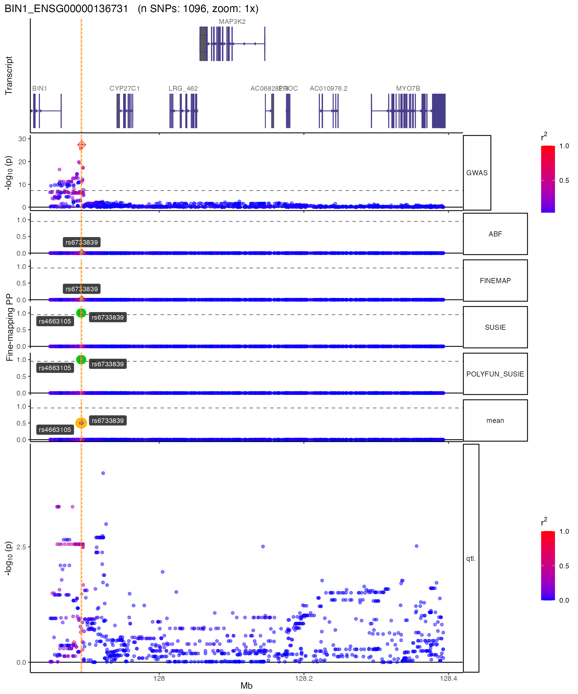
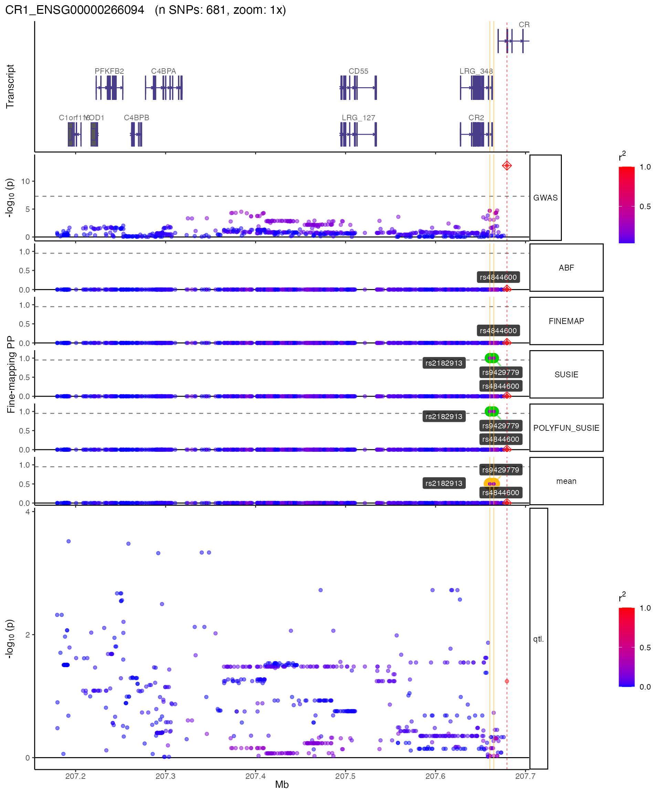

QTL pipeline vignette
Brian M. Schilder
Most recent update:
2021-06-22
Source: vignettes/QTL_pipeline_vignette.Rmd
QTL_pipeline_vignette.Rmd
root.dir <- "~/Desktop"
knitr::opts_chunk$set(
collapse = TRUE,
comment = "#>",
root.dir = root.dir,
fig.height = 12,
fig.width = 10
)
knitr::opts_knit$set(root.dir = root.dir)
library(echolocatoR)
library(dplyr)
results_dir <- file.path(root.dir,"results")
dir.create(results_dir, showWarnings = F, recursive = F)QTL pipeline
- Here, we will use GWAS-eQTL colocalization results provided via the echolocatoR Fine-mapping Portal, from the preprint: > K de Paiva Lopes, GJL Snijders, J Humphrey, A Allan, M Sneeboer, E Navarro, BM Schilder…T Raj (2020) Atlas of Genetic Effects in Human Microglia Transcriptome across Brain Regions, Aging and Disease Pathologies. bioRxiv; https://doi.org/10.1101/2020.10.27.356113.
Prepare top_SNPs data.frame
- In this case, we don’t have a top SNPs file ready. So we’re just going to make one directly from the full summary stats file itself (NOTE: You can only use this approach if you can fit the entire file in memory).
- In this case, you’ll want to make sure to set
grouping_vars=c("Locus","Gene")so that you get top SNPs for each eGene-locus pair (not just one SNP per locus).
fullSS_path <- "~/Desktop/Microglia_all_regions_Kunkle_2019_COLOC.snp-level_select.tsv.gz"
## Download example data
if(!file.exists(fullSS_path)){
download.file("https://github.com/RajLabMSSM/Fine_Mapping_Shiny/raw/master/www/Microglia_all_regions_Kunkle_2019_COLOC.snp-level_select.tsv.gz", fullSS_path)
}
top_SNPs <- import_topSNPs(
topSS = fullSS_path,
chrom_col = "chr",
position_col = "pos",
snp_col="snp",
pval_col="gwas.pvalues",
effect_col="gwas.beta",
gene_col="gene",
locus_col = "Locus",
grouping_vars = c("Locus","Gene"))
#> [1] "+ Assigning gene_col and locus_col independently"
head(top_SNPs)
#> Locus Gene CHR POS SNP P Effect
#> 1: ABCA7 ENSG00000160953 19 1050874 rs12151021 2.562e-10 0.1071
#> 2: BIN1 ENSG00000136731 2 127892810 rs6733839 4.022e-28 0.1693
#> 3: CR1 ENSG00000266094 1 207679307 rs4844600 1.598e-13 0.1324
#> 4: INPP5D ENSG00000168918 2 233981912 rs10933431 2.552e-07 0.1001
#> 5: MS4A6A ENSG00000149476 11 60103385 rs72924659 1.417e-14 -0.1239
#> 6: PILRA ENSG00000106366 7 100012579 rs60738304 1.154e-05 -0.0700eGene-locus list
- In
finemap_loci()we usually supplyloci=with a list of locus names. However,when fine-mapping GWAS-QTL jointly, you’ll need to specify which QTL eGene-GWAS locus pairs you want to run. - You can easy get this named list of all eGene-locus pairs with
gene_locus_list(). The returned list’s values are the GWAS loci, while the names are the QTL eGenes.
- If you don’t want to test all pairs, you can filter the
top_SNPsobject first. In this example, I’m going to remove any pairs that don’t have matching eGene-locus names.
We’ll also limit the anaylsis to just 3 loci.
loci <- gene_locus_list(top_SNPs)
# We'll just fine-map 2 loci to start
loci <- loci[1:3]
loci
#> ENSG00000160953 ENSG00000136731 ENSG00000266094
#> "ABCA7" "BIN1" "CR1"Run fine-mapping pipeline
NOTE: Currently this finemap_loci() will only fine-map the GWAS results. However you can still plot the fine-mapped GWAS results using the QTL_prefixes argument.
Kunkle_2019.microgliaQTL <- finemap_loci(# GENERAL ARGUMENTS
top_SNPs = top_SNPs,
results_dir = results_dir,
loci = loci,
dataset_name = "Kunkle_2019.microgliaQTL",
dataset_type = "GWAS",
sample_size = 21982 + 41944,
proportion_cases = 21982 / 41944,
force_new_subset = F,
force_new_LD = F,
force_new_finemap = F,
remove_tmps = T,
# SUMMARY STATS ARGUMENTS
fullSS_path = fullSS_path,
query_by ="fullSS",
chrom_col = "chr",
position_col = "pos",
snp_col = "snp",
pval_col = "gwas.pvalues",
effect_col = "gwas.beta",
stderr_col = "gwas.varbeta",
MAF_col = "gwas.MAF",
gene_col = "gene",
# QTL prefixes
QTL_prefixes = c("qtl."),
# FILTERING ARGUMENTS
bp_distance = 500000, #100000,
min_MAF = 0.001,
# FINE-MAPPING ARGUMENTS
finemap_methods = c("ABF","FINEMAP","SUSIE","POLYFUN_SUSIE"),
n_causal = 5,
PP_threshold = .95,
# LD ARGUMENTS
LD_reference = "1KGphase1",
superpopulation = "EUR",
download_method = "axel",
# PLOT ARGUMENTS
plot.types=c("simple"),
plot.zoom = "1x"
)
#> [1] "+ CONDA:: Activating conda env 'echoR'"
#> [1] "Checking for tabix installation..."
#> [1] "Checking for bcftools installation..."
#> [1] "Reassigning gene-specific locus names"
#>
#> ) ) ) ))))))}}}}}}}} {{{{{{{{{(((((( ( ( (
#> ABCA7_ENSG00000160953 (1 / 3)
#> ) ) ) ))))))}}}}}}}} {{{{{{{{{(((((( ( ( (
#> [1] "+ Extracting relevant variants from fullSS..."
#> [1] "+ Query Method: fullSS"
#> [1] "LD:: Standardizing summary statistics subset."
#> [1] "++ Preparing Gene col"
#> [1] "+ Subsetting to gene = ENSG00000160953"
#> [1] "++ Preparing A1,A1 cols"
#> [1] "++ Preparing MAF,Freq cols"
#> [1] "++ Removing SNPs with MAF== 0 | NULL | NA"
#> [1] "++ Preparing N_cases,N_controls cols"
#> [1] "++ Preparing `proportion_cases` col"
#> [1] "++ Preparing N col"
#> [1] "+ Preparing sample_size (N) column"
#> [1] "++ Using `sample_size = 63926` TRUE"
#> [1] "++ Preparing t-stat col"
#> [1] "+ Calculating t-statistic from Effect and StdErr..."
#> [1] "++ Assigning lead SNP"
#> [1] "++ Ensuring Effect, StdErr, P are numeric"
#> [1] "++ Adding back cols starting with: qtl."
#> [1] "++ Ensuring 1 SNP per row"
#> [1] "++ Removing extra whitespace"
#> [1] "++ Saving subset ==> ~/Desktop/results/GWAS/Kunkle_2019.microgliaQTL/ABCA7_ENSG00000160953/ABCA7_ENSG00000160953_Kunkle_2019.microgliaQTL_subset.tsv.gz"
#> [1] "+ Extraction completed in 0.54 seconds"
#> [1] "+ 4649 SNPs x 22 columns"
#> [1] "+ Removing subset tmp..."
#> [1] "LD:: Using 1000Genomes as LD reference panel."
#> [1] "LD Reference Panel = 1KGphase1"
#> [1] "+ LD:: Querying 1KG remote server."
#> [1] "+ CONDA:: Identified tabix executable in echoR env."
#> [1] "LD:: Querying VCF subset"
#> [1] "/opt/anaconda3/envs/echoR/bin/tabix -fh -p vcf ftp://ftp-trace.ncbi.nih.gov/1000genomes/ftp/release/20110521//ALL.chr19.phase1_release_v3.20101123.snps_indels_svs.genotypes.vcf.gz 19:355011-2055216 > /Users/schilder/Desktop/results/GWAS/Kunkle_2019.microgliaQTL/ABCA7_ENSG00000160953/LD/ABCA7_ENSG00000160953.1KGphase1.vcf"
#> [1] "LD:BCFTOOLS:: Compressing vcf file..."
#> [1] "LD:TABIX:: Re-indexing vcf.gz..."
#> [1] "LD:BCFTOOLS:: Subsetting vcf to only include EUR individuals ( 378 / 1091 )."
#> [1] "LD:PLINK:: Converting vcf.gz to .bed/.bim/.fam"
#> [1] "LD:snpStats:: Computing LD (stats = R)"
#> [1] "+ LD:snpStats:: 28316 rows in bim file."
#> [1] "+ LD:snpStats:: 4637 SNPs in select.snps."
#> [1] "LD::snpStats:: Filling `MAF` column with MAF from LD panel."
#> [1] "+ LD:: Saving LD matrix ==> /Users/schilder/Desktop/results/GWAS/Kunkle_2019.microgliaQTL/ABCA7_ENSG00000160953/LD/ABCA7_ENSG00000160953.1KGphase1_LD.RDS"
#> [1] "4637 x 4637 LD_matrix (sparse)"
#> [1] "+ FILTER:: Filtering by LD features."
#> [1] "FILTER:: Filtering by SNP features."
#> [1] "+ FILTER:: Removing SNPs with MAF < 0.001"
#> [1] "+ FILTER:: Post-filtered data: 2984 x 22"
#> vvvvv-- ABF --vvvvv
#> ✅ All required columns present.
#> ✅ All suggested columns present.
#> vvvvv-- FINEMAP --vvvvv
#> ✅ All required columns present.
#> ✅ All suggested columns present.
#> vvvvv-- SUSIE --vvvvv
#> ✅ All required columns present.
#> ✅ All suggested columns present.
#> vvvvv-- POLYFUN_SUSIE --vvvvv
#> ✅ All required columns present.
#> ✅ All suggested columns present.
#> [1] "++ Fine-mapping using multiple tools: ABF, FINEMAP, SUSIE, POLYFUN_SUSIE"
#>
#> +++ Multi-finemap:: ABF +++
#> [1] "++ Credible Set SNPs identified = 1"
#> [1] "++ Merging ABF results with multi-finemap data."
#>
#> +++ Multi-finemap:: FINEMAP +++
#> [1] "++ FINEMAP:: Constructing master file."
#> [1] "++ FINEMAP:: Constructing data.z file."
#> [1] "++ FINEMAP:: Constructing data.ld file."
#> [1] "+ Using FINEMAP v1.4"
#> Warning in system(cmd, intern = T): running command 'cd /Users/schilder/Desktop/
#> results/GWAS/Kunkle_2019.microgliaQTL/ABCA7_ENSG00000160953 && /private/var/
#> folders/zq/h7mtybc533b1qzkys_ttgpth0000gn/T/RtmplIUggK/temp_libpath50a46ff44e71/
#> echolocatoR/tools/FINEMAP/finemap_v1.4_MacOSX --sss --in-files /Users/schilder/
#> Desktop/results/GWAS/Kunkle_2019.microgliaQTL/ABCA7_ENSG00000160953/FINEMAP/
#> master --log --n-causal-snps 5 ' had status 134
#> Warning in FINEMAP(subset_DT = subset_DT, locus_dir = locus_dir, LD_matrix = LD_matrix, :
#> *********
#>
#> 'dyld: Library not loaded: /usr/local/lib/libzstd.1.dylib' error message detected.
#> If you are using a Mac OSX, please install Zstandard (https://facebook.github.io/zstd/).
#> e.g. via Brew: `brew install zstd`
#>
#>
#>
#> If Zstandard is already installed and this error persists,
#> please see the main FINEMAP website for additional support (http://www.christianbenner.com).
#> *********
#> + FINEMAP:: Rerunning with FINEMAP v1.3.1.
#>
#> |--------------------------------------|
#> | Welcome to FINEMAP v1.3.1 |
#> | |
#> | (c) 2015-2018 University of Helsinki |
#> | |
#> | Help : |
#> | - ./finemap --help |
#> | - www.finemap.me |
#> | - www.christianbenner.com |
#> | |
#> | Contact : |
#> | - christian.benner@helsinki.fi |
#> | - matti.pirinen@helsinki.fi |
#> |--------------------------------------|
#>
#> --------
#> SETTINGS
#> --------
#> - dataset : all
#> - corr-config : 0.95
#> - n-causal-snps : 5
#> - n-configs-top : 50000
#> - n-convergence : 1000
#> - n-iterations : 100000
#> - prior-k0 : 0
#> - prior-std : 0.05
#> - prob-tol : 0.001
#>
#> ------------
#> FINE-MAPPING (1/1)
#> ------------
#> - GWAS summary stats : FINEMAP/data.z
#> - SNP correlations : FINEMAP/data.ld
#> - Causal SNP stats : FINEMAP/data.snp
#> - Causal configurations : FINEMAP/data.config
#> - Credible sets : FINEMAP/data.cred
#> - Log file : FINEMAP/data.log_sss
#>
- Reading summary statistics : +
- Reading summary statistics : -
- Reading summary statistics : +
- Reading summary statistics : -
- Reading summary statistics : +
- Reading summary statistics : -
- Reading summary statistics : +
- Reading summary statistics : -
- Reading summary statistics : +
- Reading summary statistics : -
- Reading summary statistics : +
- Reading summary statistics : -
- Reading summary statistics : +
- Reading summary statistics : -
- Reading summary statistics : +
- Reading summary statistics : -
- Reading summary statistics : +
- Reading summary statistics : -
- Reading summary statistics : +
- Reading summary statistics : -
- Reading summary statistics : +
- Reading summary statistics : -
- Reading summary statistics : +
- Reading summary statistics : -
- Reading summary statistics : +
- Reading summary statistics : -
- Reading summary statistics : +
- Reading summary statistics : -
- Reading summary statistics : +
- Reading summary statistics : -
- Reading summary statistics : +
- Reading summary statistics : -
- Reading summary statistics : +
- Reading summary statistics : -
- Reading summary statistics : +
- Reading summary statistics : -
- Reading summary statistics : +
- Reading summary statistics : -
- Reading summary statistics : +
- Reading summary statistics : -
- Reading summary statistics : +
- Reading summary statistics : -
- Reading summary statistics : +
- Reading summary statistics : -
- Reading summary statistics : +
- Reading summary statistics : -
- Reading summary statistics : +
- Reading summary statistics : -
- Reading summary statistics : +
- Reading summary statistics : -
- Reading summary statistics : +
- Reading summary statistics : -
- Reading summary statistics : +
- Reading summary statistics : -
- Reading summary statistics : +
- Reading summary statistics : -
- Reading summary statistics : +
- Reading summary statistics : -
- Reading summary statistics : +
- Reading summary statistics : -
- Reading summary statistics : +
- Reading summary statistics : -
- Reading summary statistics : +
- Reading summary statistics : -
- Reading summary statistics : +
- Reading summary statistics : -
- Reading summary statistics : +
- Reading summary statistics : -
- Reading summary statistics : +
- Reading summary statistics : -
- Reading summary statistics : +
- Reading summary statistics : -
- Reading summary statistics : +
- Reading summary statistics : -
- Reading summary statistics : +
- Reading summary statistics : -
- Reading summary statistics : +
- Reading summary statistics : -
- Reading summary statistics : +
- Reading summary statistics : -
- Reading summary statistics : +
- Reading summary statistics : -
- Reading summary statistics : +
- Reading summary statistics : -
- Reading summary statistics : +
- Reading summary statistics : -
- Reading summary statistics : +
- Reading summary statistics : -
- Reading summary statistics : +
- Reading summary statistics : -
- Reading summary statistics : +
- Reading summary statistics : -
- Reading summary statistics : +
- Reading summary statistics : -
- Reading summary statistics : +
- Reading summary statistics : -
- Reading summary statistics : +
- Reading summary statistics : -
- Reading summary statistics : +
- Reading summary statistics : -
- Reading summary statistics : +
- Reading summary statistics : -
- Reading summary statistics : +
- Reading summary statistics : -
- Reading summary statistics : +
- Reading summary statistics : -
- Reading summary statistics : +
- Reading summary statistics : -
- Reading summary statistics : +
- Reading summary statistics : -
- Reading summary statistics : +
- Reading summary statistics : -
- Reading summary statistics : +
- Reading summary statistics : -
- Reading summary statistics : +
- Reading summary statistics : -
- Reading summary statistics : +
- Reading summary statistics : -
- Reading summary statistics : +
- Reading summary statistics : -
- Reading summary statistics : +
- Reading summary statistics : -
- Reading summary statistics : +
- Reading summary statistics : -
- Reading summary statistics : +
- Reading summary statistics : -
- Reading summary statistics : +
- Reading summary statistics : -
- Reading summary statistics : +
- Reading summary statistics : -
- Reading summary statistics : +
- Reading summary statistics : -
- Reading summary statistics : +
- Reading summary statistics : -
- Reading summary statistics : +
- Reading summary statistics : -
- Reading summary statistics : +
- Reading summary statistics : -
- Reading summary statistics : +
- Reading summary statistics : -
- Reading summary statistics : +
- Reading summary statistics : -
- Reading summary statistics : +
- Reading summary statistics : -
- Reading summary statistics : +
- Reading summary statistics : -
- Reading summary statistics : +
- Reading summary statistics : -
- Reading summary statistics : +
- Reading summary statistics : -
- Reading summary statistics : +
- Reading summary statistics : -
- Reading summary statistics : +
- Reading summary statistics : -
- Reading summary statistics : +
- Reading summary statistics : -
- Reading summary statistics : +
- Reading summary statistics : -
- Reading summary statistics : +
- Reading summary statistics : -
- Reading summary statistics : +
- Reading summary statistics : -
- Reading summary statistics : +
- Reading summary statistics : -
- Reading summary statistics : +
- Reading summary statistics : -
- Reading summary statistics : +
- Reading summary statistics : -
- Reading summary statistics : +
- Reading summary statistics : -
- Reading summary statistics : +
- Reading summary statistics : -
- Reading summary statistics : +
- Reading summary statistics : -
- Reading summary statistics : +
- Reading summary statistics : -
- Reading summary statistics : +
- Reading summary statistics : -
- Reading summary statistics : +
- Reading summary statistics : -
- Reading summary statistics : +
- Reading summary statistics : -
- Reading summary statistics : +
- Reading summary statistics : -
- Reading summary statistics : +
- Reading summary statistics : -
- Reading summary statistics : +
- Reading summary statistics : -
- Reading summary statistics : +
- Reading summary statistics : -
- Reading summary statistics : +
- Reading summary statistics : -
- Reading summary statistics : +
- Reading summary statistics : -
- Reading summary statistics : +
- Reading summary statistics : -
- Reading summary statistics : +
- Reading summary statistics : -
- Reading summary statistics : +
- Reading summary statistics : -
- Reading summary statistics : +
- Reading summary statistics : -
- Reading summary statistics : +
- Reading summary statistics : -
- Reading summary statistics : +
- Reading summary statistics : -
- Reading summary statistics : +
- Reading summary statistics : -
- Reading summary statistics : +
- Reading summary statistics : -
- Reading summary statistics : +
- Reading summary statistics : -
- Reading summary statistics : +
- Reading summary statistics : -
- Reading summary statistics : +
- Reading summary statistics : -
- Reading summary statistics : +
- Reading summary statistics : -
- Reading summary statistics : +
- Reading summary statistics : -
- Reading summary statistics : +
- Reading summary statistics : -
- Reading summary statistics : +
- Reading summary statistics : -
- Reading summary statistics : +
- Reading summary statistics : -
- Reading summary statistics : +
- Reading summary statistics : -
- Reading summary statistics : +
- Reading summary statistics : -
- Reading summary statistics : +
- Reading summary statistics : -
- Reading summary statistics : +
- Reading summary statistics : -
- Reading summary statistics : +
- Reading summary statistics : -
- Reading summary statistics : +
- Reading summary statistics : -
- Reading summary statistics : +
- Reading summary statistics : -
- Reading summary statistics : +
- Reading summary statistics : -
- Reading summary statistics : +
- Reading summary statistics : -
- Reading summary statistics : +
- Reading summary statistics : -
- Reading summary statistics : +
- Reading summary statistics : -
- Reading summary statistics : +
- Reading summary statistics : -
- Reading summary statistics : +
- Reading summary statistics : -
- Reading summary statistics : +
- Reading summary statistics : -
- Reading summary statistics : +
- Reading summary statistics : -
- Reading summary statistics : +
- Reading summary statistics : -
- Reading summary statistics : +
- Reading summary statistics : -
- Reading summary statistics : +
- Reading summary statistics : -
- Reading summary statistics : +
- Reading summary statistics : -
- Reading summary statistics : +
- Reading summary statistics : -
- Reading summary statistics : +
- Reading summary statistics : -
- Reading summary statistics : +
- Reading summary statistics : -
- Reading summary statistics : +
- Reading summary statistics : -
- Reading summary statistics : +
- Reading summary statistics : -
- Reading summary statistics : +
- Reading summary statistics : -
- Reading summary statistics : +
- Reading summary statistics : -
- Reading summary statistics : +
- Reading summary statistics : -
- Reading summary statistics : +
- Reading summary statistics : -
- Reading summary statistics : +
- Reading summary statistics : -
- Reading summary statistics : +
- Reading summary statistics : -
- Reading summary statistics : +
- Reading summary statistics : -
- Reading summary statistics : +
- Reading summary statistics : -
- Reading summary statistics : +
- Reading summary statistics : -
- Reading summary statistics : +
- Reading summary statistics : -
- Reading summary statistics : +
- Reading summary statistics : -
- Reading summary statistics : +
- Reading summary statistics : -
- Reading summary statistics : +
- Reading summary statistics : -
- Reading summary statistics : +
- Reading summary statistics : -
- Reading summary statistics : +
- Reading summary statistics : -
- Reading summary statistics : +
- Reading summary statistics : -
- Reading summary statistics : +
- Reading summary statistics : -
- Reading summary statistics : +
- Reading summary statistics : -
- Reading summary statistics : +
- Reading summary statistics : -
- Reading summary statistics : +
- Reading summary statistics : -
- Reading summary statistics : +
- Reading summary statistics : -
- Reading summary statistics : +
- Reading summary statistics : -
- Reading summary statistics : +
- Reading summary statistics : -
- Reading summary statistics : +
- Reading summary statistics : -
- Reading summary statistics : +
- Reading summary statistics : -
- Reading summary statistics : +
- Reading summary statistics : -
- Reading summary statistics : +
- Reading summary statistics : -
- Reading summary statistics : +
- Reading summary statistics : -
- Reading summary statistics : +
- Reading summary statistics : -
- Reading summary statistics : +
- Reading summary statistics : -
- Reading summary statistics : +
- Reading summary statistics : -
- Reading summary statistics : +
- Reading summary statistics : -
- Reading summary statistics : +
- Reading summary statistics : -
- Reading summary statistics : +
- Reading summary statistics : -
- Reading summary statistics : +
- Reading summary statistics : -
- Reading summary statistics : +
- Reading summary statistics : -
- Reading summary statistics : +
- Reading summary statistics : -
- Reading summary statistics : +
- Reading summary statistics : -
- Reading summary statistics : +
- Reading summary statistics : -
- Reading summary statistics : +
- Reading summary statistics : -
- Reading summary statistics : +
- Reading summary statistics : -
- Reading summary statistics : +
- Reading summary statistics : -
- Reading summary statistics : +
- Reading summary statistics : -
- Reading summary statistics : +
- Reading summary statistics : -
- Reading summary statistics : +
- Reading summary statistics : -
- Reading summary statistics : +
- Reading summary statistics : -
- Reading summary statistics : +
- Reading summary statistics : -
- Reading summary statistics : +
- Reading summary statistics : -
- Reading summary statistics : +
- Reading summary statistics : -
- Reading summary statistics : +
- Reading summary statistics : -
- Reading summary statistics : +
- Reading summary statistics : -
- Reading summary statistics : +
- Reading summary statistics : -
- Reading summary statistics : +
- Reading summary statistics : -
- Reading summary statistics : +
- Reading summary statistics : -
- Reading summary statistics : +
- Reading summary statistics : -
- Reading summary statistics : +
- Reading summary statistics : -
- Reading summary statistics : +
- Reading summary statistics : -
- Reading summary statistics : +
- Reading summary statistics : -
- Reading summary statistics : +
- Reading summary statistics : -
- Reading summary statistics : +
- Reading summary statistics : -
- Reading summary statistics : +
- Reading summary statistics : -
- Reading summary statistics : +
- Reading summary statistics : -
- Reading summary statistics : +
- Reading summary statistics : -
- Reading summary statistics : +
- Reading summary statistics : -
- Reading summary statistics : +
- Reading summary statistics : -
- Reading summary statistics : +
- Reading summary statistics : -
- Reading summary statistics : +
- Reading summary statistics : -
- Reading summary statistics : +
- Reading summary statistics : -
- Reading summary statistics : +
- Reading summary statistics : -
- Reading summary statistics : +
- Reading summary statistics : -
- Reading summary statistics : +
- Reading summary statistics : -
- Reading summary statistics : +
- Reading summary statistics : -
- Reading summary statistics : +
- Reading summary statistics : -
- Reading summary statistics : +
- Reading summary statistics : -
- Reading summary statistics : +
- Reading summary statistics : -
- Reading summary statistics : +
- Reading summary statistics : -
- Reading summary statistics : +
- Reading summary statistics : -
- Reading summary statistics : +
- Reading summary statistics : -
- Reading summary statistics : +
- Reading summary statistics : -
- Reading summary statistics : +
- Reading summary statistics : -
- Reading summary statistics : +
- Reading summary statistics : -
- Reading summary statistics : +
- Reading summary statistics : -
- Reading summary statistics : +
- Reading summary statistics : -
- Reading summary statistics : +
- Reading summary statistics : -
- Reading summary statistics : +
- Reading summary statistics : -
- Reading summary statistics : +
- Reading summary statistics : -
- Reading summary statistics : +
- Reading summary statistics : -
- Reading summary statistics : +
- Reading summary statistics : -
- Reading summary statistics : +
- Reading summary statistics : -
- Reading summary statistics : +
- Reading summary statistics : -
- Reading summary statistics : +
- Reading summary statistics : -
- Reading summary statistics : +
- Reading summary statistics : -
- Reading summary statistics : +
- Reading summary statistics : -
- Reading summary statistics : +
- Reading summary statistics : -
- Reading summary statistics : +
- Reading summary statistics : -
- Reading summary statistics : +
- Reading summary statistics : -
- Reading summary statistics : +
- Reading summary statistics : -
- Reading summary statistics : +
- Reading summary statistics : -
- Reading summary statistics : +
- Reading summary statistics : -
- Reading summary statistics : +
- Reading summary statistics : -
- Reading summary statistics : +
- Reading summary statistics : -
- Reading summary statistics : +
- Reading summary statistics : -
- Reading summary statistics : +
- Reading summary statistics : -
- Reading summary statistics : +
- Reading summary statistics : -
- Reading summary statistics : +
- Reading summary statistics : -
- Reading summary statistics : +
- Reading summary statistics : -
- Reading summary statistics : +
- Reading summary statistics : -
- Reading summary statistics : +
- Reading summary statistics : -
- Reading summary statistics : +
- Reading summary statistics : -
- Reading summary statistics : +
- Reading summary statistics : -
- Reading summary statistics : +
- Reading summary statistics : -
- Reading summary statistics : +
- Reading summary statistics : -
- Reading summary statistics : +
- Reading summary statistics : -
- Reading summary statistics : +
- Reading summary statistics : -
- Reading summary statistics : +
- Reading summary statistics : -
- Reading summary statistics : +
- Reading summary statistics : -
- Reading summary statistics : +
- Reading summary statistics : -
- Reading summary statistics : +
- Reading summary statistics : -
- Reading summary statistics : +
- Reading summary statistics : -
- Reading summary statistics : +
- Reading summary statistics : -
- Reading summary statistics : +
- Reading summary statistics : -
- Reading summary statistics : +
- Reading summary statistics : -
- Reading summary statistics : +
- Reading summary statistics : -
- Reading summary statistics : +
- Reading summary statistics : -
- Reading summary statistics : +
- Reading summary statistics : -
- Reading summary statistics : +
- Reading summary statistics : -
- Reading summary statistics : +
- Reading summary statistics : -
- Reading summary statistics : +
- Reading summary statistics : -
- Reading summary statistics : +
- Reading summary statistics : -
- Reading summary statistics : +
- Reading summary statistics : -
- Reading summary statistics : +
- Reading summary statistics : -
- Reading summary statistics : +
- Reading summary statistics : -
- Reading summary statistics : +
- Reading summary statistics : -
- Reading summary statistics : +
- Reading summary statistics : -
- Reading summary statistics : +
- Reading summary statistics : -
- Reading summary statistics : +
- Reading summary statistics : -
- Reading summary statistics : +
- Reading summary statistics : -
- Reading summary statistics : +
- Reading summary statistics : -
- Reading summary statistics : +
- Reading summary statistics : -
- Reading summary statistics : +
- Reading summary statistics : -
- Reading summary statistics : +
- Reading summary statistics : -
- Reading summary statistics : +
- Reading summary statistics : -
- Reading summary statistics : +
- Reading summary statistics : -
- Reading summary statistics : +
- Reading summary statistics : -
- Reading summary statistics : +
- Reading summary statistics : -
- Reading summary statistics : +
- Reading summary statistics : -
- Reading summary statistics : +
- Reading summary statistics : -
- Reading summary statistics : +
- Reading summary statistics : -
- Reading summary statistics : +
- Reading summary statistics : -
- Reading summary statistics : +
- Reading summary statistics : -
- Reading summary statistics : +
- Reading summary statistics : -
- Reading summary statistics : +
- Reading summary statistics : -
- Reading summary statistics : +
- Reading summary statistics : -
- Reading summary statistics : +
- Reading summary statistics : -
- Reading summary statistics : +
- Reading summary statistics : -
- Reading summary statistics : +
- Reading summary statistics : -
- Reading summary statistics : +
- Reading summary statistics : -
- Reading summary statistics : +
- Reading summary statistics : -
- Reading summary statistics : +
- Reading summary statistics : -
- Reading summary statistics : +
- Reading summary statistics : -
- Reading summary statistics : +
- Reading summary statistics : -
- Reading summary stats : done!
- Reading SNP correlations : 0.000%
- Reading SNP correlations : 55.801%
- Reading SNP correlations : 89.133%
- Reading SNP correlations : done!
- Reading input : done!
#>
#>
- Estimating residual variance : +
#> - Number of GWAS samples : 63926
#> - Number of SNPs : 2984
#> - Prior-Pr(# of causal SNPs is k) :
#> (0 -> 0)
#> 1 -> 0.583
#> 2 -> 0.291
#> 3 -> 0.0971
#> 4 -> 0.0242
#> 5 -> 0.00484
#> 0 configurations evaluated (0.000/100%)
- 2984 configurations evaluated (0.000/100%)
- 11930 configurations evaluated (0.000/100%)
- 65565 configurations evaluated (0.050/100%)
- 65565 configurations evaluated (0.100/100%)
- 65565 configurations evaluated (0.150/100%)
- 65565 configurations evaluated (0.200/100%)
- 65565 configurations evaluated (0.250/100%)
- 65565 configurations evaluated (0.300/100%)
- 65565 configurations evaluated (0.350/100%)
- 65565 configurations evaluated (0.400/100%)
- 65565 configurations evaluated (0.450/100%)
- 65565 configurations evaluated (0.500/100%)
- 65565 configurations evaluated (0.550/100%)
- 65565 configurations evaluated (0.600/100%)
- 65565 configurations evaluated (0.650/100%)
- 65565 configurations evaluated (0.700/100%)
- 65565 configurations evaluated (0.750/100%)
- 65565 configurations evaluated (0.800/100%)
- 65565 configurations evaluated (0.850/100%)
- 65565 configurations evaluated (0.900/100%)
- 65565 configurations evaluated (0.950/100%)
- 65565 configurations evaluated (1.000/100%)
- 65565 configurations evaluated (1.004/100%) : converged after 1004 iterations
#>
- Computing causal SNP statistics : 0.002%
- Computing causal SNP statistics : 0.105%
- Computing causal SNP statistics : 0.207%
- Computing causal SNP statistics : 0.310%
- Computing causal SNP statistics : 0.412%
- Computing causal SNP statistics : 0.515%
- Computing causal SNP statistics : 0.617%
- Computing causal SNP statistics : 0.719%
- Computing causal SNP statistics : 0.822%
- Computing causal SNP statistics : 0.924%
- Computing causal SNP statistics : 1.027%
- Computing causal SNP statistics : 1.129%
- Computing causal SNP statistics : 1.232%
- Computing causal SNP statistics : 1.334%
- Computing causal SNP statistics : 1.437%
- Computing causal SNP statistics : 1.539%
- Computing causal SNP statistics : 1.642%
- Computing causal SNP statistics : 1.744%
- Computing causal SNP statistics : 1.847%
- Computing causal SNP statistics : 1.949%
- Computing causal SNP statistics : 2.052%
- Computing causal SNP statistics : 2.154%
- Computing causal SNP statistics : 2.257%
- Computing causal SNP statistics : 2.359%
- Computing causal SNP statistics : 2.462%
- Computing causal SNP statistics : 2.564%
- Computing causal SNP statistics : 2.667%
- Computing causal SNP statistics : 2.769%
- Computing causal SNP statistics : 2.872%
- Computing causal SNP statistics : 2.974%
- Computing causal SNP statistics : 3.077%
- Computing causal SNP statistics : 3.179%
- Computing causal SNP statistics : 3.282%
- Computing causal SNP statistics : 3.384%
- Computing causal SNP statistics : 3.487%
- Computing causal SNP statistics : 3.589%
- Computing causal SNP statistics : 3.692%
- Computing causal SNP statistics : 3.794%
- Computing causal SNP statistics : 3.897%
- Computing causal SNP statistics : 3.999%
- Computing causal SNP statistics : 4.102%
- Computing causal SNP statistics : 4.204%
- Computing causal SNP statistics : 4.307%
- Computing causal SNP statistics : 4.409%
- Computing causal SNP statistics : 4.512%
- Computing causal SNP statistics : 4.614%
- Computing causal SNP statistics : 4.717%
- Computing causal SNP statistics : 4.819%
- Computing causal SNP statistics : 4.922%
- Computing causal SNP statistics : 5.024%
- Computing causal SNP statistics : 5.127%
- Computing causal SNP statistics : 5.229%
- Computing causal SNP statistics : 5.332%
- Computing causal SNP statistics : 5.434%
- Computing causal SNP statistics : 5.537%
- Computing causal SNP statistics : 5.639%
- Computing causal SNP statistics : 5.742%
- Computing causal SNP statistics : 5.844%
- Computing causal SNP statistics : 5.946%
- Computing causal SNP statistics : 6.049%
- Computing causal SNP statistics : 6.151%
- Computing causal SNP statistics : 6.254%
- Computing causal SNP statistics : 6.356%
- Computing causal SNP statistics : 6.459%
- Computing causal SNP statistics : 6.561%
- Computing causal SNP statistics : 6.664%
- Computing causal SNP statistics : 6.766%
- Computing causal SNP statistics : 6.869%
- Computing causal SNP statistics : 6.971%
- Computing causal SNP statistics : 7.074%
- Computing causal SNP statistics : 7.176%
- Computing causal SNP statistics : 7.279%
- Computing causal SNP statistics : 7.381%
- Computing causal SNP statistics : 7.484%
- Computing causal SNP statistics : 7.586%
- Computing causal SNP statistics : 7.689%
- Computing causal SNP statistics : 7.791%
- Computing causal SNP statistics : 7.894%
- Computing causal SNP statistics : 7.996%
- Computing causal SNP statistics : 8.099%
- Computing causal SNP statistics : 8.201%
- Computing causal SNP statistics : 8.304%
- Computing causal SNP statistics : 8.406%
- Computing causal SNP statistics : 8.509%
- Computing causal SNP statistics : 8.611%
- Computing causal SNP statistics : 8.714%
- Computing causal SNP statistics : 8.816%
- Computing causal SNP statistics : 8.919%
- Computing causal SNP statistics : 9.021%
- Computing causal SNP statistics : 9.124%
- Computing causal SNP statistics : 9.226%
- Computing causal SNP statistics : 9.329%
- Computing causal SNP statistics : 9.431%
- Computing causal SNP statistics : 9.534%
- Computing causal SNP statistics : 9.636%
- Computing causal SNP statistics : 9.739%
- Computing causal SNP statistics : 9.841%
- Computing causal SNP statistics : 9.944%
- Computing causal SNP statistics : 10.046%
- Computing causal SNP statistics : 10.149%
- Computing causal SNP statistics : 10.251%
- Computing causal SNP statistics : 10.354%
- Computing causal SNP statistics : 10.456%
- Computing causal SNP statistics : 10.559%
- Computing causal SNP statistics : 10.661%
- Computing causal SNP statistics : 10.764%
- Computing causal SNP statistics : 10.866%
- Computing causal SNP statistics : 10.969%
- Computing causal SNP statistics : 11.071%
- Computing causal SNP statistics : 11.174%
- Computing causal SNP statistics : 11.276%
- Computing causal SNP statistics : 11.378%
- Computing causal SNP statistics : 11.481%
- Computing causal SNP statistics : 11.583%
- Computing causal SNP statistics : 11.686%
- Computing causal SNP statistics : 11.788%
- Computing causal SNP statistics : 11.891%
- Computing causal SNP statistics : 11.993%
- Computing causal SNP statistics : 12.096%
- Computing causal SNP statistics : 12.198%
- Computing causal SNP statistics : 12.301%
- Computing causal SNP statistics : 12.403%
- Computing causal SNP statistics : 12.506%
- Computing causal SNP statistics : 12.608%
- Computing causal SNP statistics : 12.711%
- Computing causal SNP statistics : 12.813%
- Computing causal SNP statistics : 12.916%
- Computing causal SNP statistics : 13.018%
- Computing causal SNP statistics : 13.121%
- Computing causal SNP statistics : 13.223%
- Computing causal SNP statistics : 13.326%
- Computing causal SNP statistics : 13.428%
- Computing causal SNP statistics : 13.531%
- Computing causal SNP statistics : 13.633%
- Computing causal SNP statistics : 13.736%
- Computing causal SNP statistics : 13.838%
- Computing causal SNP statistics : 13.941%
- Computing causal SNP statistics : 14.043%
- Computing causal SNP statistics : 14.146%
- Computing causal SNP statistics : 14.248%
- Computing causal SNP statistics : 14.351%
- Computing causal SNP statistics : 14.453%
- Computing causal SNP statistics : 14.556%
- Computing causal SNP statistics : 14.658%
- Computing causal SNP statistics : 14.761%
- Computing causal SNP statistics : 14.863%
- Computing causal SNP statistics : 14.966%
- Computing causal SNP statistics : 15.068%
- Computing causal SNP statistics : 15.171%
- Computing causal SNP statistics : 15.273%
- Computing causal SNP statistics : 15.376%
- Computing causal SNP statistics : 15.478%
- Computing causal SNP statistics : 15.581%
- Computing causal SNP statistics : 15.683%
- Computing causal SNP statistics : 15.786%
- Computing causal SNP statistics : 15.888%
- Computing causal SNP statistics : 15.991%
- Computing causal SNP statistics : 16.093%
- Computing causal SNP statistics : 16.196%
- Computing causal SNP statistics : 16.298%
- Computing causal SNP statistics : 16.401%
- Computing causal SNP statistics : 16.503%
- Computing causal SNP statistics : 16.606%
- Computing causal SNP statistics : 16.708%
- Computing causal SNP statistics : 16.810%
- Computing causal SNP statistics : 16.913%
- Computing causal SNP statistics : 17.015%
- Computing causal SNP statistics : 17.118%
- Computing causal SNP statistics : 17.220%
- Computing causal SNP statistics : 17.323%
- Computing causal SNP statistics : 17.425%
- Computing causal SNP statistics : 17.528%
- Computing causal SNP statistics : 17.630%
- Computing causal SNP statistics : 17.733%
- Computing causal SNP statistics : 17.835%
- Computing causal SNP statistics : 17.938%
- Computing causal SNP statistics : 18.040%
- Computing causal SNP statistics : 18.143%
- Computing causal SNP statistics : 18.245%
- Computing causal SNP statistics : 18.348%
- Computing causal SNP statistics : 18.450%
- Computing causal SNP statistics : 18.553%
- Computing causal SNP statistics : 18.655%
- Computing causal SNP statistics : 18.758%
- Computing causal SNP statistics : 18.860%
- Computing causal SNP statistics : 18.963%
- Computing causal SNP statistics : 19.065%
- Computing causal SNP statistics : 19.168%
- Computing causal SNP statistics : 19.270%
- Computing causal SNP statistics : 19.373%
- Computing causal SNP statistics : 19.475%
- Computing causal SNP statistics : 19.578%
- Computing causal SNP statistics : 19.680%
- Computing causal SNP statistics : 19.783%
- Computing causal SNP statistics : 19.885%
- Computing causal SNP statistics : 19.988%
- Computing causal SNP statistics : 20.090%
- Computing causal SNP statistics : 20.193%
- Computing causal SNP statistics : 20.295%
- Computing causal SNP statistics : 20.398%
- Computing causal SNP statistics : 20.500%
- Computing causal SNP statistics : 20.603%
- Computing causal SNP statistics : 20.705%
- Computing causal SNP statistics : 20.808%
- Computing causal SNP statistics : 20.910%
- Computing causal SNP statistics : 21.013%
- Computing causal SNP statistics : 21.115%
- Computing causal SNP statistics : 21.218%
- Computing causal SNP statistics : 21.320%
- Computing causal SNP statistics : 21.423%
- Computing causal SNP statistics : 21.525%
- Computing causal SNP statistics : 21.628%
- Computing causal SNP statistics : 21.730%
- Computing causal SNP statistics : 21.833%
- Computing causal SNP statistics : 21.935%
- Computing causal SNP statistics : 22.038%
- Computing causal SNP statistics : 22.140%
- Computing causal SNP statistics : 22.242%
- Computing causal SNP statistics : 22.345%
- Computing causal SNP statistics : 22.447%
- Computing causal SNP statistics : 22.550%
- Computing causal SNP statistics : 22.652%
- Computing causal SNP statistics : 22.755%
- Computing causal SNP statistics : 22.857%
- Computing causal SNP statistics : 22.960%
- Computing causal SNP statistics : 23.062%
- Computing causal SNP statistics : 23.165%
- Computing causal SNP statistics : 23.267%
- Computing causal SNP statistics : 23.370%
- Computing causal SNP statistics : 23.472%
- Computing causal SNP statistics : 23.575%
- Computing causal SNP statistics : 23.677%
- Computing causal SNP statistics : 23.780%
- Computing causal SNP statistics : 23.882%
- Computing causal SNP statistics : 23.985%
- Computing causal SNP statistics : 24.087%
- Computing causal SNP statistics : 24.190%
- Computing causal SNP statistics : 24.292%
- Computing causal SNP statistics : 24.395%
- Computing causal SNP statistics : 24.497%
- Computing causal SNP statistics : 24.600%
- Computing causal SNP statistics : 24.702%
- Computing causal SNP statistics : 24.805%
- Computing causal SNP statistics : 24.907%
- Computing causal SNP statistics : 25.010%
- Computing causal SNP statistics : 25.112%
- Computing causal SNP statistics : 25.215%
- Computing causal SNP statistics : 25.317%
- Computing causal SNP statistics : 25.420%
- Computing causal SNP statistics : 25.522%
- Computing causal SNP statistics : 25.625%
- Computing causal SNP statistics : 25.727%
- Computing causal SNP statistics : 25.830%
- Computing causal SNP statistics : 25.932%
- Computing causal SNP statistics : 26.035%
- Computing causal SNP statistics : 26.137%
- Computing causal SNP statistics : 26.240%
- Computing causal SNP statistics : 26.342%
- Computing causal SNP statistics : 26.445%
- Computing causal SNP statistics : 26.547%
- Computing causal SNP statistics : 26.650%
- Computing causal SNP statistics : 26.752%
- Computing causal SNP statistics : 26.855%
- Computing causal SNP statistics : 26.957%
- Computing causal SNP statistics : 27.060%
- Computing causal SNP statistics : 27.162%
- Computing causal SNP statistics : 27.265%
- Computing causal SNP statistics : 27.367%
- Computing causal SNP statistics : 27.470%
- Computing causal SNP statistics : 27.572%
- Computing causal SNP statistics : 27.674%
- Computing causal SNP statistics : 27.777%
- Computing causal SNP statistics : 27.879%
- Computing causal SNP statistics : 27.982%
- Computing causal SNP statistics : 28.084%
- Computing causal SNP statistics : 28.187%
- Computing causal SNP statistics : 28.289%
- Computing causal SNP statistics : 28.392%
- Computing causal SNP statistics : 28.494%
- Computing causal SNP statistics : 28.597%
- Computing causal SNP statistics : 28.699%
- Computing causal SNP statistics : 28.802%
- Computing causal SNP statistics : 28.904%
- Computing causal SNP statistics : 29.007%
- Computing causal SNP statistics : 29.109%
- Computing causal SNP statistics : 29.212%
- Computing causal SNP statistics : 29.314%
- Computing causal SNP statistics : 29.417%
- Computing causal SNP statistics : 29.519%
- Computing causal SNP statistics : 29.622%
- Computing causal SNP statistics : 29.724%
- Computing causal SNP statistics : 29.827%
- Computing causal SNP statistics : 29.929%
- Computing causal SNP statistics : 30.032%
- Computing causal SNP statistics : 30.134%
- Computing causal SNP statistics : 30.237%
- Computing causal SNP statistics : 30.339%
- Computing causal SNP statistics : 30.442%
- Computing causal SNP statistics : 30.544%
- Computing causal SNP statistics : 30.647%
- Computing causal SNP statistics : 30.749%
- Computing causal SNP statistics : 30.852%
- Computing causal SNP statistics : 30.954%
- Computing causal SNP statistics : 31.057%
- Computing causal SNP statistics : 31.159%
- Computing causal SNP statistics : 31.262%
- Computing causal SNP statistics : 31.364%
- Computing causal SNP statistics : 31.467%
- Computing causal SNP statistics : 31.569%
- Computing causal SNP statistics : 31.672%
- Computing causal SNP statistics : 31.774%
- Computing causal SNP statistics : 31.877%
- Computing causal SNP statistics : 31.979%
- Computing causal SNP statistics : 32.082%
- Computing causal SNP statistics : 32.184%
- Computing causal SNP statistics : 32.287%
- Computing causal SNP statistics : 32.389%
- Computing causal SNP statistics : 32.492%
- Computing causal SNP statistics : 32.594%
- Computing causal SNP statistics : 32.697%
- Computing causal SNP statistics : 32.799%
- Computing causal SNP statistics : 32.902%
- Computing causal SNP statistics : 33.004%
- Computing causal SNP statistics : 33.106%
- Computing causal SNP statistics : 33.209%
- Computing causal SNP statistics : 33.311%
- Computing causal SNP statistics : 33.414%
- Computing causal SNP statistics : 33.516%
- Computing causal SNP statistics : 33.619%
- Computing causal SNP statistics : 33.721%
- Computing causal SNP statistics : 33.824%
- Computing causal SNP statistics : 33.926%
- Computing causal SNP statistics : 34.029%
- Computing causal SNP statistics : 34.131%
- Computing causal SNP statistics : 34.234%
- Computing causal SNP statistics : 34.336%
- Computing causal SNP statistics : 34.439%
- Computing causal SNP statistics : 34.541%
- Computing causal SNP statistics : 34.644%
- Computing causal SNP statistics : 34.746%
- Computing causal SNP statistics : 34.849%
- Computing causal SNP statistics : 34.951%
- Computing causal SNP statistics : 35.054%
- Computing causal SNP statistics : 35.156%
- Computing causal SNP statistics : 35.259%
- Computing causal SNP statistics : 35.361%
- Computing causal SNP statistics : 35.464%
- Computing causal SNP statistics : 35.566%
- Computing causal SNP statistics : 35.669%
- Computing causal SNP statistics : 35.771%
- Computing causal SNP statistics : 35.874%
- Computing causal SNP statistics : 35.976%
- Computing causal SNP statistics : 36.079%
- Computing causal SNP statistics : 36.181%
- Computing causal SNP statistics : 36.284%
- Computing causal SNP statistics : 36.386%
- Computing causal SNP statistics : 36.489%
- Computing causal SNP statistics : 36.591%
- Computing causal SNP statistics : 36.694%
- Computing causal SNP statistics : 36.796%
- Computing causal SNP statistics : 36.899%
- Computing causal SNP statistics : 37.001%
- Computing causal SNP statistics : 37.104%
- Computing causal SNP statistics : 37.206%
- Computing causal SNP statistics : 37.309%
- Computing causal SNP statistics : 37.411%
- Computing causal SNP statistics : 37.514%
- Computing causal SNP statistics : 37.616%
- Computing causal SNP statistics : 37.719%
- Computing causal SNP statistics : 37.821%
- Computing causal SNP statistics : 37.924%
- Computing causal SNP statistics : 38.026%
- Computing causal SNP statistics : 38.129%
- Computing causal SNP statistics : 38.231%
- Computing causal SNP statistics : 38.334%
- Computing causal SNP statistics : 38.436%
- Computing causal SNP statistics : 38.538%
- Computing causal SNP statistics : 38.641%
- Computing causal SNP statistics : 38.743%
- Computing causal SNP statistics : 38.846%
- Computing causal SNP statistics : 38.948%
- Computing causal SNP statistics : 39.051%
- Computing causal SNP statistics : 39.153%
- Computing causal SNP statistics : 39.256%
- Computing causal SNP statistics : 39.358%
- Computing causal SNP statistics : 39.461%
- Computing causal SNP statistics : 39.563%
- Computing causal SNP statistics : 39.666%
- Computing causal SNP statistics : 39.768%
- Computing causal SNP statistics : 39.871%
- Computing causal SNP statistics : 39.973%
- Computing causal SNP statistics : 40.076%
- Computing causal SNP statistics : 40.178%
- Computing causal SNP statistics : 40.281%
- Computing causal SNP statistics : 40.383%
- Computing causal SNP statistics : 40.486%
- Computing causal SNP statistics : 40.588%
- Computing causal SNP statistics : 40.691%
- Computing causal SNP statistics : 40.793%
- Computing causal SNP statistics : 40.896%
- Computing causal SNP statistics : 40.998%
- Computing causal SNP statistics : 41.101%
- Computing causal SNP statistics : 41.203%
- Computing causal SNP statistics : 41.306%
- Computing causal SNP statistics : 41.408%
- Computing causal SNP statistics : 41.511%
- Computing causal SNP statistics : 41.613%
- Computing causal SNP statistics : 41.716%
- Computing causal SNP statistics : 41.818%
- Computing causal SNP statistics : 41.921%
- Computing causal SNP statistics : 42.023%
- Computing causal SNP statistics : 42.126%
- Computing causal SNP statistics : 42.228%
- Computing causal SNP statistics : 42.331%
- Computing causal SNP statistics : 42.433%
- Computing causal SNP statistics : 42.536%
- Computing causal SNP statistics : 42.638%
- Computing causal SNP statistics : 42.741%
- Computing causal SNP statistics : 42.843%
- Computing causal SNP statistics : 42.946%
- Computing causal SNP statistics : 43.048%
- Computing causal SNP statistics : 43.151%
- Computing causal SNP statistics : 43.253%
- Computing causal SNP statistics : 43.356%
- Computing causal SNP statistics : 43.458%
- Computing causal SNP statistics : 43.561%
- Computing causal SNP statistics : 43.663%
- Computing causal SNP statistics : 43.766%
- Computing causal SNP statistics : 43.868%
- Computing causal SNP statistics : 43.970%
- Computing causal SNP statistics : 44.073%
- Computing causal SNP statistics : 44.175%
- Computing causal SNP statistics : 44.278%
- Computing causal SNP statistics : 44.380%
- Computing causal SNP statistics : 44.483%
- Computing causal SNP statistics : 44.585%
- Computing causal SNP statistics : 44.688%
- Computing causal SNP statistics : 44.790%
- Computing causal SNP statistics : 44.893%
- Computing causal SNP statistics : 44.995%
- Computing causal SNP statistics : 45.098%
- Computing causal SNP statistics : 45.200%
- Computing causal SNP statistics : 45.303%
- Computing causal SNP statistics : 45.405%
- Computing causal SNP statistics : 45.508%
- Computing causal SNP statistics : 45.610%
- Computing causal SNP statistics : 45.713%
- Computing causal SNP statistics : 45.815%
- Computing causal SNP statistics : 45.918%
- Computing causal SNP statistics : 46.020%
- Computing causal SNP statistics : 46.123%
- Computing causal SNP statistics : 46.225%
- Computing causal SNP statistics : 46.328%
- Computing causal SNP statistics : 46.430%
- Computing causal SNP statistics : 46.533%
- Computing causal SNP statistics : 46.635%
- Computing causal SNP statistics : 46.738%
- Computing causal SNP statistics : 46.840%
- Computing causal SNP statistics : 46.943%
- Computing causal SNP statistics : 47.045%
- Computing causal SNP statistics : 47.148%
- Computing causal SNP statistics : 47.250%
- Computing causal SNP statistics : 47.353%
- Computing causal SNP statistics : 47.455%
- Computing causal SNP statistics : 47.558%
- Computing causal SNP statistics : 47.660%
- Computing causal SNP statistics : 47.763%
- Computing causal SNP statistics : 47.865%
- Computing causal SNP statistics : 47.968%
- Computing causal SNP statistics : 48.070%
- Computing causal SNP statistics : 48.173%
- Computing causal SNP statistics : 48.275%
- Computing causal SNP statistics : 48.378%
- Computing causal SNP statistics : 48.480%
- Computing causal SNP statistics : 48.583%
- Computing causal SNP statistics : 48.685%
- Computing causal SNP statistics : 48.788%
- Computing causal SNP statistics : 48.890%
- Computing causal SNP statistics : 48.993%
- Computing causal SNP statistics : 49.095%
- Computing causal SNP statistics : 49.197%
- Computing causal SNP statistics : 49.300%
- Computing causal SNP statistics : 49.402%
- Computing causal SNP statistics : 49.505%
- Computing causal SNP statistics : 49.607%
- Computing causal SNP statistics : 49.710%
- Computing causal SNP statistics : 49.812%
- Computing causal SNP statistics : 49.915%
- Computing causal SNP statistics : 50.017%
- Computing causal SNP statistics : 50.120%
- Computing causal SNP statistics : 50.222%
- Computing causal SNP statistics : 50.325%
- Computing causal SNP statistics : 50.427%
- Computing causal SNP statistics : 50.530%
- Computing causal SNP statistics : 50.632%
- Computing causal SNP statistics : 50.735%
- Computing causal SNP statistics : 50.837%
- Computing causal SNP statistics : 50.940%
- Computing causal SNP statistics : 51.042%
- Computing causal SNP statistics : 51.145%
- Computing causal SNP statistics : 51.247%
- Computing causal SNP statistics : 51.350%
- Computing causal SNP statistics : 51.452%
- Computing causal SNP statistics : 51.555%
- Computing causal SNP statistics : 51.657%
- Computing causal SNP statistics : 51.760%
- Computing causal SNP statistics : 51.862%
- Computing causal SNP statistics : 51.965%
- Computing causal SNP statistics : 52.067%
- Computing causal SNP statistics : 52.170%
- Computing causal SNP statistics : 52.272%
- Computing causal SNP statistics : 52.375%
- Computing causal SNP statistics : 52.477%
- Computing causal SNP statistics : 52.580%
- Computing causal SNP statistics : 52.682%
- Computing causal SNP statistics : 52.785%
- Computing causal SNP statistics : 52.887%
- Computing causal SNP statistics : 52.990%
- Computing causal SNP statistics : 53.092%
- Computing causal SNP statistics : 53.195%
- Computing causal SNP statistics : 53.297%
- Computing causal SNP statistics : 53.400%
- Computing causal SNP statistics : 53.502%
- Computing causal SNP statistics : 53.605%
- Computing causal SNP statistics : 53.707%
- Computing causal SNP statistics : 53.810%
- Computing causal SNP statistics : 53.912%
- Computing causal SNP statistics : 54.015%
- Computing causal SNP statistics : 54.117%
- Computing causal SNP statistics : 54.220%
- Computing causal SNP statistics : 54.322%
- Computing causal SNP statistics : 54.425%
- Computing causal SNP statistics : 54.527%
- Computing causal SNP statistics : 54.629%
- Computing causal SNP statistics : 54.732%
- Computing causal SNP statistics : 54.834%
- Computing causal SNP statistics : 54.937%
- Computing causal SNP statistics : 55.039%
- Computing causal SNP statistics : 55.142%
- Computing causal SNP statistics : 55.244%
- Computing causal SNP statistics : 55.347%
- Computing causal SNP statistics : 55.449%
- Computing causal SNP statistics : 55.552%
- Computing causal SNP statistics : 55.654%
- Computing causal SNP statistics : 55.757%
- Computing causal SNP statistics : 55.859%
- Computing causal SNP statistics : 55.962%
- Computing causal SNP statistics : 56.064%
- Computing causal SNP statistics : 56.167%
- Computing causal SNP statistics : 56.269%
- Computing causal SNP statistics : 56.372%
- Computing causal SNP statistics : 56.474%
- Computing causal SNP statistics : 56.577%
- Computing causal SNP statistics : 56.679%
- Computing causal SNP statistics : 56.782%
- Computing causal SNP statistics : 56.884%
- Computing causal SNP statistics : 56.987%
- Computing causal SNP statistics : 57.089%
- Computing causal SNP statistics : 57.192%
- Computing causal SNP statistics : 57.294%
- Computing causal SNP statistics : 57.397%
- Computing causal SNP statistics : 57.499%
- Computing causal SNP statistics : 57.602%
- Computing causal SNP statistics : 57.704%
- Computing causal SNP statistics : 57.807%
- Computing causal SNP statistics : 57.909%
- Computing causal SNP statistics : 58.012%
- Computing causal SNP statistics : 58.114%
- Computing causal SNP statistics : 58.217%
- Computing causal SNP statistics : 58.319%
- Computing causal SNP statistics : 58.422%
- Computing causal SNP statistics : 58.524%
- Computing causal SNP statistics : 58.627%
- Computing causal SNP statistics : 58.729%
- Computing causal SNP statistics : 58.832%
- Computing causal SNP statistics : 58.934%
- Computing causal SNP statistics : 59.037%
- Computing causal SNP statistics : 59.139%
- Computing causal SNP statistics : 59.242%
- Computing causal SNP statistics : 59.344%
- Computing causal SNP statistics : 59.447%
- Computing causal SNP statistics : 59.549%
- Computing causal SNP statistics : 59.652%
- Computing causal SNP statistics : 59.754%
- Computing causal SNP statistics : 59.857%
- Computing causal SNP statistics : 59.959%
- Computing causal SNP statistics : 60.061%
- Computing causal SNP statistics : 60.164%
- Computing causal SNP statistics : 60.266%
- Computing causal SNP statistics : 60.369%
- Computing causal SNP statistics : 60.471%
- Computing causal SNP statistics : 60.574%
- Computing causal SNP statistics : 60.676%
- Computing causal SNP statistics : 60.779%
- Computing causal SNP statistics : 60.881%
- Computing causal SNP statistics : 60.984%
- Computing causal SNP statistics : 61.086%
- Computing causal SNP statistics : 61.189%
- Computing causal SNP statistics : 61.291%
- Computing causal SNP statistics : 61.394%
- Computing causal SNP statistics : 61.496%
- Computing causal SNP statistics : 61.599%
- Computing causal SNP statistics : 61.701%
- Computing causal SNP statistics : 61.804%
- Computing causal SNP statistics : 61.906%
- Computing causal SNP statistics : 62.009%
- Computing causal SNP statistics : 62.111%
- Computing causal SNP statistics : 62.214%
- Computing causal SNP statistics : 62.316%
- Computing causal SNP statistics : 62.419%
- Computing causal SNP statistics : 62.521%
- Computing causal SNP statistics : 62.624%
- Computing causal SNP statistics : 62.726%
- Computing causal SNP statistics : 62.829%
- Computing causal SNP statistics : 62.931%
- Computing causal SNP statistics : 63.034%
- Computing causal SNP statistics : 63.136%
- Computing causal SNP statistics : 63.239%
- Computing causal SNP statistics : 63.341%
- Computing causal SNP statistics : 63.444%
- Computing causal SNP statistics : 63.546%
- Computing causal SNP statistics : 63.649%
- Computing causal SNP statistics : 63.751%
- Computing causal SNP statistics : 63.854%
- Computing causal SNP statistics : 63.956%
- Computing causal SNP statistics : 64.059%
- Computing causal SNP statistics : 64.161%
- Computing causal SNP statistics : 64.264%
- Computing causal SNP statistics : 64.366%
- Computing causal SNP statistics : 64.469%
- Computing causal SNP statistics : 64.571%
- Computing causal SNP statistics : 64.674%
- Computing causal SNP statistics : 64.776%
- Computing causal SNP statistics : 64.879%
- Computing causal SNP statistics : 64.981%
- Computing causal SNP statistics : 65.084%
- Computing causal SNP statistics : 65.186%
- Computing causal SNP statistics : 65.289%
- Computing causal SNP statistics : 65.391%
- Computing causal SNP statistics : 65.493%
- Computing causal SNP statistics : 65.596%
- Computing causal SNP statistics : 65.698%
- Computing causal SNP statistics : 65.801%
- Computing causal SNP statistics : 65.903%
- Computing causal SNP statistics : 66.006%
- Computing causal SNP statistics : 66.108%
- Computing causal SNP statistics : 66.211%
- Computing causal SNP statistics : 66.313%
- Computing causal SNP statistics : 66.416%
- Computing causal SNP statistics : 66.518%
- Computing causal SNP statistics : 66.621%
- Computing causal SNP statistics : 66.723%
- Computing causal SNP statistics : 66.826%
- Computing causal SNP statistics : 66.928%
- Computing causal SNP statistics : 67.031%
- Computing causal SNP statistics : 67.133%
- Computing causal SNP statistics : 67.236%
- Computing causal SNP statistics : 67.338%
- Computing causal SNP statistics : 67.441%
- Computing causal SNP statistics : 67.543%
- Computing causal SNP statistics : 67.646%
- Computing causal SNP statistics : 67.748%
- Computing causal SNP statistics : 67.851%
- Computing causal SNP statistics : 67.953%
- Computing causal SNP statistics : 68.056%
- Computing causal SNP statistics : 68.158%
- Computing causal SNP statistics : 68.261%
- Computing causal SNP statistics : 68.363%
- Computing causal SNP statistics : 68.466%
- Computing causal SNP statistics : 68.568%
- Computing causal SNP statistics : 68.671%
- Computing causal SNP statistics : 68.773%
- Computing causal SNP statistics : 68.876%
- Computing causal SNP statistics : 68.978%
- Computing causal SNP statistics : 69.081%
- Computing causal SNP statistics : 69.183%
- Computing causal SNP statistics : 69.286%
- Computing causal SNP statistics : 69.388%
- Computing causal SNP statistics : 69.491%
- Computing causal SNP statistics : 69.593%
- Computing causal SNP statistics : 69.696%
- Computing causal SNP statistics : 69.798%
- Computing causal SNP statistics : 69.901%
- Computing causal SNP statistics : 70.003%
- Computing causal SNP statistics : 70.106%
- Computing causal SNP statistics : 70.208%
- Computing causal SNP statistics : 70.311%
- Computing causal SNP statistics : 70.413%
- Computing causal SNP statistics : 70.516%
- Computing causal SNP statistics : 70.618%
- Computing causal SNP statistics : 70.721%
- Computing causal SNP statistics : 70.823%
- Computing causal SNP statistics : 70.925%
- Computing causal SNP statistics : 71.028%
- Computing causal SNP statistics : 71.130%
- Computing causal SNP statistics : 71.233%
- Computing causal SNP statistics : 71.335%
- Computing causal SNP statistics : 71.438%
- Computing causal SNP statistics : 71.540%
- Computing causal SNP statistics : 71.643%
- Computing causal SNP statistics : 71.745%
- Computing causal SNP statistics : 71.848%
- Computing causal SNP statistics : 71.950%
- Computing causal SNP statistics : 72.053%
- Computing causal SNP statistics : 72.155%
- Computing causal SNP statistics : 72.258%
- Computing causal SNP statistics : 72.360%
- Computing causal SNP statistics : 72.463%
- Computing causal SNP statistics : 72.565%
- Computing causal SNP statistics : 72.668%
- Computing causal SNP statistics : 72.770%
- Computing causal SNP statistics : 72.873%
- Computing causal SNP statistics : 72.975%
- Computing causal SNP statistics : 73.078%
- Computing causal SNP statistics : 73.180%
- Computing causal SNP statistics : 73.283%
- Computing causal SNP statistics : 73.385%
- Computing causal SNP statistics : 73.488%
- Computing causal SNP statistics : 73.590%
- Computing causal SNP statistics : 73.693%
- Computing causal SNP statistics : 73.795%
- Computing causal SNP statistics : 73.898%
- Computing causal SNP statistics : 74.000%
- Computing causal SNP statistics : 74.103%
- Computing causal SNP statistics : 74.205%
- Computing causal SNP statistics : 74.308%
- Computing causal SNP statistics : 74.410%
- Computing causal SNP statistics : 74.513%
- Computing causal SNP statistics : 74.615%
- Computing causal SNP statistics : 74.718%
- Computing causal SNP statistics : 74.820%
- Computing causal SNP statistics : 74.923%
- Computing causal SNP statistics : 75.025%
- Computing causal SNP statistics : 75.128%
- Computing causal SNP statistics : 75.230%
- Computing causal SNP statistics : 75.333%
- Computing causal SNP statistics : 75.435%
- Computing causal SNP statistics : 75.538%
- Computing causal SNP statistics : 75.640%
- Computing causal SNP statistics : 75.743%
- Computing causal SNP statistics : 75.845%
- Computing causal SNP statistics : 75.948%
- Computing causal SNP statistics : 76.050%
- Computing causal SNP statistics : 76.153%
- Computing causal SNP statistics : 76.255%
- Computing causal SNP statistics : 76.357%
- Computing causal SNP statistics : 76.460%
- Computing causal SNP statistics : 76.562%
- Computing causal SNP statistics : 76.665%
- Computing causal SNP statistics : 76.767%
- Computing causal SNP statistics : 76.870%
- Computing causal SNP statistics : 76.972%
- Computing causal SNP statistics : 77.075%
- Computing causal SNP statistics : 77.177%
- Computing causal SNP statistics : 77.280%
- Computing causal SNP statistics : 77.382%
- Computing causal SNP statistics : 77.485%
- Computing causal SNP statistics : 77.587%
- Computing causal SNP statistics : 77.690%
- Computing causal SNP statistics : 77.792%
- Computing causal SNP statistics : 77.895%
- Computing causal SNP statistics : 77.997%
- Computing causal SNP statistics : 78.100%
- Computing causal SNP statistics : 78.202%
- Computing causal SNP statistics : 78.305%
- Computing causal SNP statistics : 78.407%
- Computing causal SNP statistics : 78.510%
- Computing causal SNP statistics : 78.612%
- Computing causal SNP statistics : 78.715%
- Computing causal SNP statistics : 78.817%
- Computing causal SNP statistics : 78.920%
- Computing causal SNP statistics : 79.022%
- Computing causal SNP statistics : 79.125%
- Computing causal SNP statistics : 79.227%
- Computing causal SNP statistics : 79.330%
- Computing causal SNP statistics : 79.432%
- Computing causal SNP statistics : 79.535%
- Computing causal SNP statistics : 79.637%
- Computing causal SNP statistics : 79.740%
- Computing causal SNP statistics : 79.842%
- Computing causal SNP statistics : 79.945%
- Computing causal SNP statistics : 80.047%
- Computing causal SNP statistics : 80.150%
- Computing causal SNP statistics : 80.252%
- Computing causal SNP statistics : 80.355%
- Computing causal SNP statistics : 80.457%
- Computing causal SNP statistics : 80.560%
- Computing causal SNP statistics : 80.662%
- Computing causal SNP statistics : 80.765%
- Computing causal SNP statistics : 80.867%
- Computing causal SNP statistics : 80.970%
- Computing causal SNP statistics : 81.072%
- Computing causal SNP statistics : 81.175%
- Computing causal SNP statistics : 81.277%
- Computing causal SNP statistics : 81.380%
- Computing causal SNP statistics : 81.482%
- Computing causal SNP statistics : 81.585%
- Computing causal SNP statistics : 81.687%
- Computing causal SNP statistics : 81.789%
- Computing causal SNP statistics : 81.892%
- Computing causal SNP statistics : 81.994%
- Computing causal SNP statistics : 82.097%
- Computing causal SNP statistics : 82.199%
- Computing causal SNP statistics : 82.302%
- Computing causal SNP statistics : 82.404%
- Computing causal SNP statistics : 82.507%
- Computing causal SNP statistics : 82.609%
- Computing causal SNP statistics : 82.712%
- Computing causal SNP statistics : 82.814%
- Computing causal SNP statistics : 82.917%
- Computing causal SNP statistics : 83.019%
- Computing causal SNP statistics : 83.122%
- Computing causal SNP statistics : 83.224%
- Computing causal SNP statistics : 83.327%
- Computing causal SNP statistics : 83.429%
- Computing causal SNP statistics : 83.532%
- Computing causal SNP statistics : 83.634%
- Computing causal SNP statistics : 83.737%
- Computing causal SNP statistics : 83.839%
- Computing causal SNP statistics : 83.942%
- Computing causal SNP statistics : 84.044%
- Computing causal SNP statistics : 84.147%
- Computing causal SNP statistics : 84.249%
- Computing causal SNP statistics : 84.352%
- Computing causal SNP statistics : 84.454%
- Computing causal SNP statistics : 84.557%
- Computing causal SNP statistics : 84.659%
- Computing causal SNP statistics : 84.762%
- Computing causal SNP statistics : 84.864%
- Computing causal SNP statistics : 84.967%
- Computing causal SNP statistics : 85.069%
- Computing causal SNP statistics : 85.172%
- Computing causal SNP statistics : 85.274%
- Computing causal SNP statistics : 85.377%
- Computing causal SNP statistics : 85.479%
- Computing causal SNP statistics : 85.582%
- Computing causal SNP statistics : 85.684%
- Computing causal SNP statistics : 85.787%
- Computing causal SNP statistics : 85.889%
- Computing causal SNP statistics : 85.992%
- Computing causal SNP statistics : 86.094%
- Computing causal SNP statistics : 86.197%
- Computing causal SNP statistics : 86.299%
- Computing causal SNP statistics : 86.402%
- Computing causal SNP statistics : 86.504%
- Computing causal SNP statistics : 86.607%
- Computing causal SNP statistics : 86.709%
- Computing causal SNP statistics : 86.812%
- Computing causal SNP statistics : 86.914%
- Computing causal SNP statistics : 87.017%
- Computing causal SNP statistics : 87.119%
- Computing causal SNP statistics : 87.221%
- Computing causal SNP statistics : 87.324%
- Computing causal SNP statistics : 87.426%
- Computing causal SNP statistics : 87.529%
- Computing causal SNP statistics : 87.631%
- Computing causal SNP statistics : 87.734%
- Computing causal SNP statistics : 87.836%
- Computing causal SNP statistics : 87.939%
- Computing causal SNP statistics : 88.041%
- Computing causal SNP statistics : 88.144%
- Computing causal SNP statistics : 88.246%
- Computing causal SNP statistics : 88.349%
- Computing causal SNP statistics : 88.451%
- Computing causal SNP statistics : 88.554%
- Computing causal SNP statistics : 88.656%
- Computing causal SNP statistics : 88.759%
- Computing causal SNP statistics : 88.861%
- Computing causal SNP statistics : 88.964%
- Computing causal SNP statistics : 89.066%
- Computing causal SNP statistics : 89.169%
- Computing causal SNP statistics : 89.271%
- Computing causal SNP statistics : 89.374%
- Computing causal SNP statistics : 89.476%
- Computing causal SNP statistics : 89.579%
- Computing causal SNP statistics : 89.681%
- Computing causal SNP statistics : 89.784%
- Computing causal SNP statistics : 89.886%
- Computing causal SNP statistics : 89.989%
- Computing causal SNP statistics : 90.091%
- Computing causal SNP statistics : 90.194%
- Computing causal SNP statistics : 90.296%
- Computing causal SNP statistics : 90.399%
- Computing causal SNP statistics : 90.501%
- Computing causal SNP statistics : 90.604%
- Computing causal SNP statistics : 90.706%
- Computing causal SNP statistics : 90.809%
- Computing causal SNP statistics : 90.911%
- Computing causal SNP statistics : 91.014%
- Computing causal SNP statistics : 91.116%
- Computing causal SNP statistics : 91.219%
- Computing causal SNP statistics : 91.321%
- Computing causal SNP statistics : 91.424%
- Computing causal SNP statistics : 91.526%
- Computing causal SNP statistics : 91.629%
- Computing causal SNP statistics : 91.731%
- Computing causal SNP statistics : 91.834%
- Computing causal SNP statistics : 91.936%
- Computing causal SNP statistics : 92.039%
- Computing causal SNP statistics : 92.141%
- Computing causal SNP statistics : 92.244%
- Computing causal SNP statistics : 92.346%
- Computing causal SNP statistics : 92.448%
- Computing causal SNP statistics : 92.551%
- Computing causal SNP statistics : 92.653%
- Computing causal SNP statistics : 92.756%
- Computing causal SNP statistics : 92.858%
- Computing causal SNP statistics : 92.961%
- Computing causal SNP statistics : 93.063%
- Computing causal SNP statistics : 93.166%
- Computing causal SNP statistics : 93.268%
- Computing causal SNP statistics : 93.371%
- Computing causal SNP statistics : 93.473%
- Computing causal SNP statistics : 93.576%
- Computing causal SNP statistics : 93.678%
- Computing causal SNP statistics : 93.781%
- Computing causal SNP statistics : 93.883%
- Computing causal SNP statistics : 93.986%
- Computing causal SNP statistics : 94.088%
- Computing causal SNP statistics : 94.191%
- Computing causal SNP statistics : 94.293%
- Computing causal SNP statistics : 94.396%
- Computing causal SNP statistics : 94.498%
- Computing causal SNP statistics : 94.601%
- Computing causal SNP statistics : 94.703%
- Computing causal SNP statistics : 94.806%
- Computing causal SNP statistics : 94.908%
- Computing causal SNP statistics : 95.011%
- Computing causal SNP statistics : 95.113%
- Computing causal SNP statistics : 95.216%
- Computing causal SNP statistics : 95.318%
- Computing causal SNP statistics : 95.421%
- Computing causal SNP statistics : 95.523%
- Computing causal SNP statistics : 95.626%
- Computing causal SNP statistics : 95.728%
- Computing causal SNP statistics : 95.831%
- Computing causal SNP statistics : 95.933%
- Computing causal SNP statistics : 96.036%
- Computing causal SNP statistics : 96.138%
- Computing causal SNP statistics : 96.241%
- Computing causal SNP statistics : 96.343%
- Computing causal SNP statistics : 96.446%
- Computing causal SNP statistics : 96.548%
- Computing causal SNP statistics : 96.651%
- Computing causal SNP statistics : 96.753%
- Computing causal SNP statistics : 96.856%
- Computing causal SNP statistics : 96.958%
- Computing causal SNP statistics : 97.061%
- Computing causal SNP statistics : 97.163%
- Computing causal SNP statistics : 97.266%
- Computing causal SNP statistics : 97.368%
- Computing causal SNP statistics : 97.471%
- Computing causal SNP statistics : 97.573%
- Computing causal SNP statistics : 97.676%
- Computing causal SNP statistics : 97.778%
- Computing causal SNP statistics : 97.880%
- Computing causal SNP statistics : 97.983%
- Computing causal SNP statistics : 98.085%
- Computing causal SNP statistics : 98.188%
- Computing causal SNP statistics : 98.290%
- Computing causal SNP statistics : 98.393%
- Computing causal SNP statistics : 98.495%
- Computing causal SNP statistics : 98.598%
- Computing causal SNP statistics : 98.700%
- Computing causal SNP statistics : 98.803%
- Computing causal SNP statistics : 98.905%
- Computing causal SNP statistics : 99.008%
- Computing causal SNP statistics : 99.110%
- Computing causal SNP statistics : 99.213%
- Computing causal SNP statistics : 99.315%
- Computing causal SNP statistics : 99.418%
- Computing causal SNP statistics : 99.520%
- Computing causal SNP statistics : 99.623%
- Computing causal SNP statistics : 99.725%
- Computing causal SNP statistics : 99.828%
- Computing causal SNP statistics : 99.930%
- Computing causal SNP statistics : done!
#> - Regional SNP heritability : 1 (SD: 2.89e-06 ; 95% CI: [1,1])
#> - Log10-BF of >= one causal SNP : 2.19e+05
#> - Post-Pr(# of causal SNPs is k) :
#> (0 -> 0)
#> 1 -> 0
#> 2 -> 0
#> 3 -> 0
#> 4 -> 0
#> 5 -> 1
#>
- Writing causal configurations : 0.002%
- Writing causal configurations : 0.105%
- Writing causal configurations : 0.207%
- Writing causal configurations : 0.310%
- Writing causal configurations : 0.412%
- Writing causal configurations : 0.515%
- Writing causal configurations : 0.617%
- Writing causal configurations : 0.719%
- Writing causal configurations : 0.822%
- Writing causal configurations : 0.924%
- Writing causal configurations : 1.027%
- Writing causal configurations : 1.129%
- Writing causal configurations : 1.232%
- Writing causal configurations : 1.334%
- Writing causal configurations : 1.437%
- Writing causal configurations : 1.539%
- Writing causal configurations : 1.642%
- Writing causal configurations : 1.744%
- Writing causal configurations : 1.847%
- Writing causal configurations : 1.949%
- Writing causal configurations : 2.052%
- Writing causal configurations : 2.154%
- Writing causal configurations : 2.257%
- Writing causal configurations : 2.359%
- Writing causal configurations : 2.462%
- Writing causal configurations : 2.564%
- Writing causal configurations : 2.667%
- Writing causal configurations : 2.769%
- Writing causal configurations : 2.872%
- Writing causal configurations : 2.974%
- Writing causal configurations : 3.077%
- Writing causal configurations : 3.179%
- Writing causal configurations : 3.282%
- Writing causal configurations : 3.384%
- Writing causal configurations : 3.487%
- Writing causal configurations : 3.589%
- Writing causal configurations : 3.692%
- Writing causal configurations : 3.794%
- Writing causal configurations : 3.897%
- Writing causal configurations : 3.999%
- Writing causal configurations : 4.102%
- Writing causal configurations : 4.204%
- Writing causal configurations : 4.307%
- Writing causal configurations : 4.409%
- Writing causal configurations : 4.512%
- Writing causal configurations : 4.614%
- Writing causal configurations : 4.717%
- Writing causal configurations : 4.819%
- Writing causal configurations : 4.922%
- Writing causal configurations : 5.024%
- Writing causal configurations : 5.127%
- Writing causal configurations : 5.229%
- Writing causal configurations : 5.332%
- Writing causal configurations : 5.434%
- Writing causal configurations : 5.537%
- Writing causal configurations : 5.639%
- Writing causal configurations : 5.742%
- Writing causal configurations : 5.844%
- Writing causal configurations : 5.946%
- Writing causal configurations : 6.049%
- Writing causal configurations : 6.151%
- Writing causal configurations : 6.254%
- Writing causal configurations : 6.356%
- Writing causal configurations : 6.459%
- Writing causal configurations : 6.561%
- Writing causal configurations : 6.664%
- Writing causal configurations : 6.766%
- Writing causal configurations : 6.869%
- Writing causal configurations : 6.971%
- Writing causal configurations : 7.074%
- Writing causal configurations : 7.176%
- Writing causal configurations : 7.279%
- Writing causal configurations : 7.381%
- Writing causal configurations : 7.484%
- Writing causal configurations : 7.586%
- Writing causal configurations : 7.689%
- Writing causal configurations : 7.791%
- Writing causal configurations : 7.894%
- Writing causal configurations : 7.996%
- Writing causal configurations : 8.099%
- Writing causal configurations : 8.201%
- Writing causal configurations : 8.304%
- Writing causal configurations : 8.406%
- Writing causal configurations : 8.509%
- Writing causal configurations : 8.611%
- Writing causal configurations : 8.714%
- Writing causal configurations : 8.816%
- Writing causal configurations : 8.919%
- Writing causal configurations : 9.021%
- Writing causal configurations : 9.124%
- Writing causal configurations : 9.226%
- Writing causal configurations : 9.329%
- Writing causal configurations : 9.431%
- Writing causal configurations : 9.534%
- Writing causal configurations : 9.636%
- Writing causal configurations : 9.739%
- Writing causal configurations : 9.841%
- Writing causal configurations : 9.944%
- Writing causal configurations : 10.046%
- Writing causal configurations : 10.149%
- Writing causal configurations : 10.251%
- Writing causal configurations : 10.354%
- Writing causal configurations : 10.456%
- Writing causal configurations : 10.559%
- Writing causal configurations : 10.661%
- Writing causal configurations : 10.764%
- Writing causal configurations : 10.866%
- Writing causal configurations : 10.969%
- Writing causal configurations : 11.071%
- Writing causal configurations : 11.174%
- Writing causal configurations : 11.276%
- Writing causal configurations : 11.378%
- Writing causal configurations : 11.481%
- Writing causal configurations : 11.583%
- Writing causal configurations : 11.686%
- Writing causal configurations : 11.788%
- Writing causal configurations : 11.891%
- Writing causal configurations : 11.993%
- Writing causal configurations : 12.096%
- Writing causal configurations : 12.198%
- Writing causal configurations : 12.301%
- Writing causal configurations : 12.403%
- Writing causal configurations : 12.506%
- Writing causal configurations : 12.608%
- Writing causal configurations : 12.711%
- Writing causal configurations : 12.813%
- Writing causal configurations : 12.916%
- Writing causal configurations : 13.018%
- Writing causal configurations : 13.121%
- Writing causal configurations : 13.223%
- Writing causal configurations : 13.326%
- Writing causal configurations : 13.428%
- Writing causal configurations : 13.531%
- Writing causal configurations : 13.633%
- Writing causal configurations : 13.736%
- Writing causal configurations : 13.838%
- Writing causal configurations : 13.941%
- Writing causal configurations : 14.043%
- Writing causal configurations : 14.146%
- Writing causal configurations : 14.248%
- Writing causal configurations : 14.351%
- Writing causal configurations : 14.453%
- Writing causal configurations : 14.556%
- Writing causal configurations : 14.658%
- Writing causal configurations : 14.761%
- Writing causal configurations : 14.863%
- Writing causal configurations : 14.966%
- Writing causal configurations : 15.068%
- Writing causal configurations : 15.171%
- Writing causal configurations : 15.273%
- Writing causal configurations : 15.376%
- Writing causal configurations : 15.478%
- Writing causal configurations : 15.581%
- Writing causal configurations : 15.683%
- Writing causal configurations : 15.786%
- Writing causal configurations : 15.888%
- Writing causal configurations : 15.991%
- Writing causal configurations : 16.093%
- Writing causal configurations : 16.196%
- Writing causal configurations : 16.298%
- Writing causal configurations : 16.401%
- Writing causal configurations : 16.503%
- Writing causal configurations : 16.606%
- Writing causal configurations : 16.708%
- Writing causal configurations : 16.810%
- Writing causal configurations : 16.913%
- Writing causal configurations : 17.015%
- Writing causal configurations : 17.118%
- Writing causal configurations : 17.220%
- Writing causal configurations : 17.323%
- Writing causal configurations : 17.425%
- Writing causal configurations : 17.528%
- Writing causal configurations : 17.630%
- Writing causal configurations : 17.733%
- Writing causal configurations : 17.835%
- Writing causal configurations : 17.938%
- Writing causal configurations : 18.040%
- Writing causal configurations : 18.143%
- Writing causal configurations : 18.245%
- Writing causal configurations : 18.348%
- Writing causal configurations : 18.450%
- Writing causal configurations : 18.553%
- Writing causal configurations : 18.655%
- Writing causal configurations : 18.758%
- Writing causal configurations : 18.860%
- Writing causal configurations : 18.963%
- Writing causal configurations : 19.065%
- Writing causal configurations : 19.168%
- Writing causal configurations : 19.270%
- Writing causal configurations : 19.373%
- Writing causal configurations : 19.475%
- Writing causal configurations : 19.578%
- Writing causal configurations : 19.680%
- Writing causal configurations : 19.783%
- Writing causal configurations : 19.885%
- Writing causal configurations : 19.988%
- Writing causal configurations : 20.090%
- Writing causal configurations : 20.193%
- Writing causal configurations : 20.295%
- Writing causal configurations : 20.398%
- Writing causal configurations : 20.500%
- Writing causal configurations : 20.603%
- Writing causal configurations : 20.705%
- Writing causal configurations : 20.808%
- Writing causal configurations : 20.910%
- Writing causal configurations : 21.013%
- Writing causal configurations : 21.115%
- Writing causal configurations : 21.218%
- Writing causal configurations : 21.320%
- Writing causal configurations : 21.423%
- Writing causal configurations : 21.525%
- Writing causal configurations : 21.628%
- Writing causal configurations : 21.730%
- Writing causal configurations : 21.833%
- Writing causal configurations : 21.935%
- Writing causal configurations : 22.038%
- Writing causal configurations : 22.140%
- Writing causal configurations : 22.242%
- Writing causal configurations : 22.345%
- Writing causal configurations : 22.447%
- Writing causal configurations : 22.550%
- Writing causal configurations : 22.652%
- Writing causal configurations : 22.755%
- Writing causal configurations : 22.857%
- Writing causal configurations : 22.960%
- Writing causal configurations : 23.062%
- Writing causal configurations : 23.165%
- Writing causal configurations : 23.267%
- Writing causal configurations : 23.370%
- Writing causal configurations : 23.472%
- Writing causal configurations : 23.575%
- Writing causal configurations : 23.677%
- Writing causal configurations : 23.780%
- Writing causal configurations : 23.882%
- Writing causal configurations : 23.985%
- Writing causal configurations : 24.087%
- Writing causal configurations : 24.190%
- Writing causal configurations : 24.292%
- Writing causal configurations : 24.395%
- Writing causal configurations : 24.497%
- Writing causal configurations : 24.600%
- Writing causal configurations : 24.702%
- Writing causal configurations : 24.805%
- Writing causal configurations : 24.907%
- Writing causal configurations : 25.010%
- Writing causal configurations : 25.112%
- Writing causal configurations : 25.215%
- Writing causal configurations : 25.317%
- Writing causal configurations : 25.420%
- Writing causal configurations : 25.522%
- Writing causal configurations : 25.625%
- Writing causal configurations : 25.727%
- Writing causal configurations : 25.830%
- Writing causal configurations : 25.932%
- Writing causal configurations : 26.035%
- Writing causal configurations : 26.137%
- Writing causal configurations : 26.240%
- Writing causal configurations : 26.342%
- Writing causal configurations : 26.445%
- Writing causal configurations : 26.547%
- Writing causal configurations : 26.650%
- Writing causal configurations : 26.752%
- Writing causal configurations : 26.855%
- Writing causal configurations : 26.957%
- Writing causal configurations : 27.060%
- Writing causal configurations : 27.162%
- Writing causal configurations : 27.265%
- Writing causal configurations : 27.367%
- Writing causal configurations : 27.470%
- Writing causal configurations : 27.572%
- Writing causal configurations : 27.674%
- Writing causal configurations : 27.777%
- Writing causal configurations : 27.879%
- Writing causal configurations : 27.982%
- Writing causal configurations : 28.084%
- Writing causal configurations : 28.187%
- Writing causal configurations : 28.289%
- Writing causal configurations : 28.392%
- Writing causal configurations : 28.494%
- Writing causal configurations : 28.597%
- Writing causal configurations : 28.699%
- Writing causal configurations : 28.802%
- Writing causal configurations : 28.904%
- Writing causal configurations : 29.007%
- Writing causal configurations : 29.109%
- Writing causal configurations : 29.212%
- Writing causal configurations : 29.314%
- Writing causal configurations : 29.417%
- Writing causal configurations : 29.519%
- Writing causal configurations : 29.622%
- Writing causal configurations : 29.724%
- Writing causal configurations : 29.827%
- Writing causal configurations : 29.929%
- Writing causal configurations : 30.032%
- Writing causal configurations : 30.134%
- Writing causal configurations : 30.237%
- Writing causal configurations : 30.339%
- Writing causal configurations : 30.442%
- Writing causal configurations : 30.544%
- Writing causal configurations : 30.647%
- Writing causal configurations : 30.749%
- Writing causal configurations : 30.852%
- Writing causal configurations : 30.954%
- Writing causal configurations : 31.057%
- Writing causal configurations : 31.159%
- Writing causal configurations : 31.262%
- Writing causal configurations : 31.364%
- Writing causal configurations : 31.467%
- Writing causal configurations : 31.569%
- Writing causal configurations : 31.672%
- Writing causal configurations : 31.774%
- Writing causal configurations : 31.877%
- Writing causal configurations : 31.979%
- Writing causal configurations : 32.082%
- Writing causal configurations : 32.184%
- Writing causal configurations : 32.287%
- Writing causal configurations : 32.389%
- Writing causal configurations : 32.492%
- Writing causal configurations : 32.594%
- Writing causal configurations : 32.697%
- Writing causal configurations : 32.799%
- Writing causal configurations : 32.902%
- Writing causal configurations : 33.004%
- Writing causal configurations : 33.106%
- Writing causal configurations : 33.209%
- Writing causal configurations : 33.311%
- Writing causal configurations : 33.414%
- Writing causal configurations : 33.516%
- Writing causal configurations : 33.619%
- Writing causal configurations : 33.721%
- Writing causal configurations : 33.824%
- Writing causal configurations : 33.926%
- Writing causal configurations : 34.029%
- Writing causal configurations : 34.131%
- Writing causal configurations : 34.234%
- Writing causal configurations : 34.336%
- Writing causal configurations : 34.439%
- Writing causal configurations : 34.541%
- Writing causal configurations : 34.644%
- Writing causal configurations : 34.746%
- Writing causal configurations : 34.849%
- Writing causal configurations : 34.951%
- Writing causal configurations : 35.054%
- Writing causal configurations : 35.156%
- Writing causal configurations : 35.259%
- Writing causal configurations : 35.361%
- Writing causal configurations : 35.464%
- Writing causal configurations : 35.566%
- Writing causal configurations : 35.669%
- Writing causal configurations : 35.771%
- Writing causal configurations : 35.874%
- Writing causal configurations : 35.976%
- Writing causal configurations : 36.079%
- Writing causal configurations : 36.181%
- Writing causal configurations : 36.284%
- Writing causal configurations : 36.386%
- Writing causal configurations : 36.489%
- Writing causal configurations : 36.591%
- Writing causal configurations : 36.694%
- Writing causal configurations : 36.796%
- Writing causal configurations : 36.899%
- Writing causal configurations : 37.001%
- Writing causal configurations : 37.104%
- Writing causal configurations : 37.206%
- Writing causal configurations : 37.309%
- Writing causal configurations : 37.411%
- Writing causal configurations : 37.514%
- Writing causal configurations : 37.616%
- Writing causal configurations : 37.719%
- Writing causal configurations : 37.821%
- Writing causal configurations : 37.924%
- Writing causal configurations : 38.026%
- Writing causal configurations : 38.129%
- Writing causal configurations : 38.231%
- Writing causal configurations : 38.334%
- Writing causal configurations : 38.436%
- Writing causal configurations : 38.538%
- Writing causal configurations : 38.641%
- Writing causal configurations : 38.743%
- Writing causal configurations : 38.846%
- Writing causal configurations : 38.948%
- Writing causal configurations : 39.051%
- Writing causal configurations : 39.153%
- Writing causal configurations : 39.256%
- Writing causal configurations : 39.358%
- Writing causal configurations : 39.461%
- Writing causal configurations : 39.563%
- Writing causal configurations : 39.666%
- Writing causal configurations : 39.768%
- Writing causal configurations : 39.871%
- Writing causal configurations : 39.973%
- Writing causal configurations : 40.076%
- Writing causal configurations : 40.178%
- Writing causal configurations : 40.281%
- Writing causal configurations : 40.383%
- Writing causal configurations : 40.486%
- Writing causal configurations : 40.588%
- Writing causal configurations : 40.691%
- Writing causal configurations : 40.793%
- Writing causal configurations : 40.896%
- Writing causal configurations : 40.998%
- Writing causal configurations : 41.101%
- Writing causal configurations : 41.203%
- Writing causal configurations : 41.306%
- Writing causal configurations : 41.408%
- Writing causal configurations : 41.511%
- Writing causal configurations : 41.613%
- Writing causal configurations : 41.716%
- Writing causal configurations : 41.818%
- Writing causal configurations : 41.921%
- Writing causal configurations : 42.023%
- Writing causal configurations : 42.126%
- Writing causal configurations : 42.228%
- Writing causal configurations : 42.331%
- Writing causal configurations : 42.433%
- Writing causal configurations : 42.536%
- Writing causal configurations : 42.638%
- Writing causal configurations : 42.741%
- Writing causal configurations : 42.843%
- Writing causal configurations : 42.946%
- Writing causal configurations : 43.048%
- Writing causal configurations : 43.151%
- Writing causal configurations : 43.253%
- Writing causal configurations : 43.356%
- Writing causal configurations : 43.458%
- Writing causal configurations : 43.561%
- Writing causal configurations : 43.663%
- Writing causal configurations : 43.766%
- Writing causal configurations : 43.868%
- Writing causal configurations : 43.970%
- Writing causal configurations : 44.073%
- Writing causal configurations : 44.175%
- Writing causal configurations : 44.278%
- Writing causal configurations : 44.380%
- Writing causal configurations : 44.483%
- Writing causal configurations : 44.585%
- Writing causal configurations : 44.688%
- Writing causal configurations : 44.790%
- Writing causal configurations : 44.893%
- Writing causal configurations : 44.995%
- Writing causal configurations : 45.098%
- Writing causal configurations : 45.200%
- Writing causal configurations : 45.303%
- Writing causal configurations : 45.405%
- Writing causal configurations : 45.508%
- Writing causal configurations : 45.610%
- Writing causal configurations : 45.713%
- Writing causal configurations : 45.815%
- Writing causal configurations : 45.918%
- Writing causal configurations : 46.020%
- Writing causal configurations : 46.123%
- Writing causal configurations : 46.225%
- Writing causal configurations : 46.328%
- Writing causal configurations : 46.430%
- Writing causal configurations : 46.533%
- Writing causal configurations : 46.635%
- Writing causal configurations : 46.738%
- Writing causal configurations : 46.840%
- Writing causal configurations : 46.943%
- Writing causal configurations : 47.045%
- Writing causal configurations : 47.148%
- Writing causal configurations : 47.250%
- Writing causal configurations : 47.353%
- Writing causal configurations : 47.455%
- Writing causal configurations : 47.558%
- Writing causal configurations : 47.660%
- Writing causal configurations : 47.763%
- Writing causal configurations : 47.865%
- Writing causal configurations : 47.968%
- Writing causal configurations : 48.070%
- Writing causal configurations : 48.173%
- Writing causal configurations : 48.275%
- Writing causal configurations : 48.378%
- Writing causal configurations : 48.480%
- Writing causal configurations : 48.583%
- Writing causal configurations : 48.685%
- Writing causal configurations : 48.788%
- Writing causal configurations : 48.890%
- Writing causal configurations : 48.993%
- Writing causal configurations : 49.095%
- Writing causal configurations : 49.197%
- Writing causal configurations : 49.300%
- Writing causal configurations : 49.402%
- Writing causal configurations : 49.505%
- Writing causal configurations : 49.607%
- Writing causal configurations : 49.710%
- Writing causal configurations : 49.812%
- Writing causal configurations : 49.915%
- Writing causal configurations : 50.017%
- Writing causal configurations : 50.120%
- Writing causal configurations : 50.222%
- Writing causal configurations : 50.325%
- Writing causal configurations : 50.427%
- Writing causal configurations : 50.530%
- Writing causal configurations : 50.632%
- Writing causal configurations : 50.735%
- Writing causal configurations : 50.837%
- Writing causal configurations : 50.940%
- Writing causal configurations : 51.042%
- Writing causal configurations : 51.145%
- Writing causal configurations : 51.247%
- Writing causal configurations : 51.350%
- Writing causal configurations : 51.452%
- Writing causal configurations : 51.555%
- Writing causal configurations : 51.657%
- Writing causal configurations : 51.760%
- Writing causal configurations : 51.862%
- Writing causal configurations : 51.965%
- Writing causal configurations : 52.067%
- Writing causal configurations : 52.170%
- Writing causal configurations : 52.272%
- Writing causal configurations : 52.375%
- Writing causal configurations : 52.477%
- Writing causal configurations : 52.580%
- Writing causal configurations : 52.682%
- Writing causal configurations : 52.785%
- Writing causal configurations : 52.887%
- Writing causal configurations : 52.990%
- Writing causal configurations : 53.092%
- Writing causal configurations : 53.195%
- Writing causal configurations : 53.297%
- Writing causal configurations : 53.400%
- Writing causal configurations : 53.502%
- Writing causal configurations : 53.605%
- Writing causal configurations : 53.707%
- Writing causal configurations : 53.810%
- Writing causal configurations : 53.912%
- Writing causal configurations : 54.015%
- Writing causal configurations : 54.117%
- Writing causal configurations : 54.220%
- Writing causal configurations : 54.322%
- Writing causal configurations : 54.425%
- Writing causal configurations : 54.527%
- Writing causal configurations : 54.629%
- Writing causal configurations : 54.732%
- Writing causal configurations : 54.834%
- Writing causal configurations : 54.937%
- Writing causal configurations : 55.039%
- Writing causal configurations : 55.142%
- Writing causal configurations : 55.244%
- Writing causal configurations : 55.347%
- Writing causal configurations : 55.449%
- Writing causal configurations : 55.552%
- Writing causal configurations : 55.654%
- Writing causal configurations : 55.757%
- Writing causal configurations : 55.859%
- Writing causal configurations : 55.962%
- Writing causal configurations : 56.064%
- Writing causal configurations : 56.167%
- Writing causal configurations : 56.269%
- Writing causal configurations : 56.372%
- Writing causal configurations : 56.474%
- Writing causal configurations : 56.577%
- Writing causal configurations : 56.679%
- Writing causal configurations : 56.782%
- Writing causal configurations : 56.884%
- Writing causal configurations : 56.987%
- Writing causal configurations : 57.089%
- Writing causal configurations : 57.192%
- Writing causal configurations : 57.294%
- Writing causal configurations : 57.397%
- Writing causal configurations : 57.499%
- Writing causal configurations : 57.602%
- Writing causal configurations : 57.704%
- Writing causal configurations : 57.807%
- Writing causal configurations : 57.909%
- Writing causal configurations : 58.012%
- Writing causal configurations : 58.114%
- Writing causal configurations : 58.217%
- Writing causal configurations : 58.319%
- Writing causal configurations : 58.422%
- Writing causal configurations : 58.524%
- Writing causal configurations : 58.627%
- Writing causal configurations : 58.729%
- Writing causal configurations : 58.832%
- Writing causal configurations : 58.934%
- Writing causal configurations : 59.037%
- Writing causal configurations : 59.139%
- Writing causal configurations : 59.242%
- Writing causal configurations : 59.344%
- Writing causal configurations : 59.447%
- Writing causal configurations : 59.549%
- Writing causal configurations : 59.652%
- Writing causal configurations : 59.754%
- Writing causal configurations : 59.857%
- Writing causal configurations : 59.959%
- Writing causal configurations : 60.061%
- Writing causal configurations : 60.164%
- Writing causal configurations : 60.266%
- Writing causal configurations : 60.369%
- Writing causal configurations : 60.471%
- Writing causal configurations : 60.574%
- Writing causal configurations : 60.676%
- Writing causal configurations : 60.779%
- Writing causal configurations : 60.881%
- Writing causal configurations : 60.984%
- Writing causal configurations : 61.086%
- Writing causal configurations : 61.189%
- Writing causal configurations : 61.291%
- Writing causal configurations : 61.394%
- Writing causal configurations : 61.496%
- Writing causal configurations : 61.599%
- Writing causal configurations : 61.701%
- Writing causal configurations : 61.804%
- Writing causal configurations : 61.906%
- Writing causal configurations : 62.009%
- Writing causal configurations : 62.111%
- Writing causal configurations : 62.214%
- Writing causal configurations : 62.316%
- Writing causal configurations : 62.419%
- Writing causal configurations : 62.521%
- Writing causal configurations : 62.624%
- Writing causal configurations : 62.726%
- Writing causal configurations : 62.829%
- Writing causal configurations : 62.931%
- Writing causal configurations : 63.034%
- Writing causal configurations : 63.136%
- Writing causal configurations : 63.239%
- Writing causal configurations : 63.341%
- Writing causal configurations : 63.444%
- Writing causal configurations : 63.546%
- Writing causal configurations : 63.649%
- Writing causal configurations : 63.751%
- Writing causal configurations : 63.854%
- Writing causal configurations : 63.956%
- Writing causal configurations : 64.059%
- Writing causal configurations : 64.161%
- Writing causal configurations : 64.264%
- Writing causal configurations : 64.366%
- Writing causal configurations : 64.469%
- Writing causal configurations : 64.571%
- Writing causal configurations : 64.674%
- Writing causal configurations : 64.776%
- Writing causal configurations : 64.879%
- Writing causal configurations : 64.981%
- Writing causal configurations : 65.084%
- Writing causal configurations : 65.186%
- Writing causal configurations : 65.289%
- Writing causal configurations : 65.391%
- Writing causal configurations : 65.493%
- Writing causal configurations : 65.596%
- Writing causal configurations : 65.698%
- Writing causal configurations : 65.801%
- Writing causal configurations : 65.903%
- Writing causal configurations : 66.006%
- Writing causal configurations : 66.108%
- Writing causal configurations : 66.211%
- Writing causal configurations : 66.313%
- Writing causal configurations : 66.416%
- Writing causal configurations : 66.518%
- Writing causal configurations : 66.621%
- Writing causal configurations : 66.723%
- Writing causal configurations : 66.826%
- Writing causal configurations : 66.928%
- Writing causal configurations : 67.031%
- Writing causal configurations : 67.133%
- Writing causal configurations : 67.236%
- Writing causal configurations : 67.338%
- Writing causal configurations : 67.441%
- Writing causal configurations : 67.543%
- Writing causal configurations : 67.646%
- Writing causal configurations : 67.748%
- Writing causal configurations : 67.851%
- Writing causal configurations : 67.953%
- Writing causal configurations : 68.056%
- Writing causal configurations : 68.158%
- Writing causal configurations : 68.261%
- Writing causal configurations : 68.363%
- Writing causal configurations : 68.466%
- Writing causal configurations : 68.568%
- Writing causal configurations : 68.671%
- Writing causal configurations : 68.773%
- Writing causal configurations : 68.876%
- Writing causal configurations : 68.978%
- Writing causal configurations : 69.081%
- Writing causal configurations : 69.183%
- Writing causal configurations : 69.286%
- Writing causal configurations : 69.388%
- Writing causal configurations : 69.491%
- Writing causal configurations : 69.593%
- Writing causal configurations : 69.696%
- Writing causal configurations : 69.798%
- Writing causal configurations : 69.901%
- Writing causal configurations : 70.003%
- Writing causal configurations : 70.106%
- Writing causal configurations : 70.208%
- Writing causal configurations : 70.311%
- Writing causal configurations : 70.413%
- Writing causal configurations : 70.516%
- Writing causal configurations : 70.618%
- Writing causal configurations : 70.721%
- Writing causal configurations : 70.823%
- Writing causal configurations : 70.925%
- Writing causal configurations : 71.028%
- Writing causal configurations : 71.130%
- Writing causal configurations : 71.233%
- Writing causal configurations : 71.335%
- Writing causal configurations : 71.438%
- Writing causal configurations : 71.540%
- Writing causal configurations : 71.643%
- Writing causal configurations : 71.745%
- Writing causal configurations : 71.848%
- Writing causal configurations : 71.950%
- Writing causal configurations : 72.053%
- Writing causal configurations : 72.155%
- Writing causal configurations : 72.258%
- Writing causal configurations : 72.360%
- Writing causal configurations : 72.463%
- Writing causal configurations : 72.565%
- Writing causal configurations : 72.668%
- Writing causal configurations : 72.770%
- Writing causal configurations : 72.873%
- Writing causal configurations : 72.975%
- Writing causal configurations : 73.078%
- Writing causal configurations : 73.180%
- Writing causal configurations : 73.283%
- Writing causal configurations : 73.385%
- Writing causal configurations : 73.488%
- Writing causal configurations : 73.590%
- Writing causal configurations : 73.693%
- Writing causal configurations : 73.795%
- Writing causal configurations : 73.898%
- Writing causal configurations : 74.000%
- Writing causal configurations : 74.103%
- Writing causal configurations : 74.205%
- Writing causal configurations : 74.308%
- Writing causal configurations : 74.410%
- Writing causal configurations : 74.513%
- Writing causal configurations : 74.615%
- Writing causal configurations : 74.718%
- Writing causal configurations : 74.820%
- Writing causal configurations : 74.923%
- Writing causal configurations : 75.025%
- Writing causal configurations : 75.128%
- Writing causal configurations : 75.230%
- Writing causal configurations : 75.333%
- Writing causal configurations : 75.435%
- Writing causal configurations : 75.538%
- Writing causal configurations : 75.640%
- Writing causal configurations : 75.743%
- Writing causal configurations : 75.845%
- Writing causal configurations : 75.948%
- Writing causal configurations : 76.050%
- Writing causal configurations : 76.153%
- Writing causal configurations : 76.255%
- Writing causal configurations : 76.357%
- Writing causal configurations : 76.460%
- Writing causal configurations : 76.562%
- Writing causal configurations : 76.665%
- Writing causal configurations : 76.767%
- Writing causal configurations : 76.870%
- Writing causal configurations : 76.972%
- Writing causal configurations : 77.075%
- Writing causal configurations : 77.177%
- Writing causal configurations : 77.280%
- Writing causal configurations : 77.382%
- Writing causal configurations : 77.485%
- Writing causal configurations : 77.587%
- Writing causal configurations : 77.690%
- Writing causal configurations : 77.792%
- Writing causal configurations : 77.895%
- Writing causal configurations : 77.997%
- Writing causal configurations : 78.100%
- Writing causal configurations : 78.202%
- Writing causal configurations : 78.305%
- Writing causal configurations : 78.407%
- Writing causal configurations : 78.510%
- Writing causal configurations : 78.612%
- Writing causal configurations : 78.715%
- Writing causal configurations : 78.817%
- Writing causal configurations : 78.920%
- Writing causal configurations : 79.022%
- Writing causal configurations : 79.125%
- Writing causal configurations : 79.227%
- Writing causal configurations : 79.330%
- Writing causal configurations : 79.432%
- Writing causal configurations : 79.535%
- Writing causal configurations : 79.637%
- Writing causal configurations : 79.740%
- Writing causal configurations : 79.842%
- Writing causal configurations : 79.945%
- Writing causal configurations : 80.047%
- Writing causal configurations : 80.150%
- Writing causal configurations : 80.252%
- Writing causal configurations : 80.355%
- Writing causal configurations : 80.457%
- Writing causal configurations : 80.560%
- Writing causal configurations : 80.662%
- Writing causal configurations : 80.765%
- Writing causal configurations : 80.867%
- Writing causal configurations : 80.970%
- Writing causal configurations : 81.072%
- Writing causal configurations : 81.175%
- Writing causal configurations : 81.277%
- Writing causal configurations : 81.380%
- Writing causal configurations : 81.482%
- Writing causal configurations : 81.585%
- Writing causal configurations : 81.687%
- Writing causal configurations : 81.789%
- Writing causal configurations : 81.892%
- Writing causal configurations : 81.994%
- Writing causal configurations : 82.097%
- Writing causal configurations : 82.199%
- Writing causal configurations : 82.302%
- Writing causal configurations : 82.404%
- Writing causal configurations : 82.507%
- Writing causal configurations : 82.609%
- Writing causal configurations : 82.712%
- Writing causal configurations : 82.814%
- Writing causal configurations : 82.917%
- Writing causal configurations : 83.019%
- Writing causal configurations : 83.122%
- Writing causal configurations : 83.224%
- Writing causal configurations : 83.327%
- Writing causal configurations : 83.429%
- Writing causal configurations : 83.532%
- Writing causal configurations : 83.634%
- Writing causal configurations : 83.737%
- Writing causal configurations : 83.839%
- Writing causal configurations : 83.942%
- Writing causal configurations : 84.044%
- Writing causal configurations : 84.147%
- Writing causal configurations : 84.249%
- Writing causal configurations : 84.352%
- Writing causal configurations : 84.454%
- Writing causal configurations : 84.557%
- Writing causal configurations : 84.659%
- Writing causal configurations : 84.762%
- Writing causal configurations : 84.864%
- Writing causal configurations : 84.967%
- Writing causal configurations : 85.069%
- Writing causal configurations : 85.172%
- Writing causal configurations : 85.274%
- Writing causal configurations : 85.377%
- Writing causal configurations : 85.479%
- Writing causal configurations : 85.582%
- Writing causal configurations : 85.684%
- Writing causal configurations : 85.787%
- Writing causal configurations : 85.889%
- Writing causal configurations : 85.992%
- Writing causal configurations : 86.094%
- Writing causal configurations : 86.197%
- Writing causal configurations : 86.299%
- Writing causal configurations : 86.402%
- Writing causal configurations : 86.504%
- Writing causal configurations : 86.607%
- Writing causal configurations : 86.709%
- Writing causal configurations : 86.812%
- Writing causal configurations : 86.914%
- Writing causal configurations : 87.017%
- Writing causal configurations : 87.119%
- Writing causal configurations : 87.221%
- Writing causal configurations : 87.324%
- Writing causal configurations : 87.426%
- Writing causal configurations : 87.529%
- Writing causal configurations : 87.631%
- Writing causal configurations : 87.734%
- Writing causal configurations : 87.836%
- Writing causal configurations : 87.939%
- Writing causal configurations : 88.041%
- Writing causal configurations : 88.144%
- Writing causal configurations : 88.246%
- Writing causal configurations : 88.349%
- Writing causal configurations : 88.451%
- Writing causal configurations : 88.554%
- Writing causal configurations : 88.656%
- Writing causal configurations : 88.759%
- Writing causal configurations : 88.861%
- Writing causal configurations : 88.964%
- Writing causal configurations : 89.066%
- Writing causal configurations : 89.169%
- Writing causal configurations : 89.271%
- Writing causal configurations : 89.374%
- Writing causal configurations : 89.476%
- Writing causal configurations : 89.579%
- Writing causal configurations : 89.681%
- Writing causal configurations : 89.784%
- Writing causal configurations : 89.886%
- Writing causal configurations : 89.989%
- Writing causal configurations : 90.091%
- Writing causal configurations : 90.194%
- Writing causal configurations : 90.296%
- Writing causal configurations : 90.399%
- Writing causal configurations : 90.501%
- Writing causal configurations : 90.604%
- Writing causal configurations : 90.706%
- Writing causal configurations : 90.809%
- Writing causal configurations : 90.911%
- Writing causal configurations : 91.014%
- Writing causal configurations : 91.116%
- Writing causal configurations : 91.219%
- Writing causal configurations : 91.321%
- Writing causal configurations : 91.424%
- Writing causal configurations : 91.526%
- Writing causal configurations : 91.629%
- Writing causal configurations : 91.731%
- Writing causal configurations : 91.834%
- Writing causal configurations : 91.936%
- Writing causal configurations : 92.039%
- Writing causal configurations : 92.141%
- Writing causal configurations : 92.244%
- Writing causal configurations : 92.346%
- Writing causal configurations : 92.448%
- Writing causal configurations : 92.551%
- Writing causal configurations : 92.653%
- Writing causal configurations : 92.756%
- Writing causal configurations : 92.858%
- Writing causal configurations : 92.961%
- Writing causal configurations : 93.063%
- Writing causal configurations : 93.166%
- Writing causal configurations : 93.268%
- Writing causal configurations : 93.371%
- Writing causal configurations : 93.473%
- Writing causal configurations : 93.576%
- Writing causal configurations : 93.678%
- Writing causal configurations : 93.781%
- Writing causal configurations : 93.883%
- Writing causal configurations : 93.986%
- Writing causal configurations : 94.088%
- Writing causal configurations : 94.191%
- Writing causal configurations : 94.293%
- Writing causal configurations : 94.396%
- Writing causal configurations : 94.498%
- Writing causal configurations : 94.601%
- Writing causal configurations : 94.703%
- Writing causal configurations : 94.806%
- Writing causal configurations : 94.908%
- Writing causal configurations : 95.011%
- Writing causal configurations : 95.113%
- Writing causal configurations : 95.216%
- Writing causal configurations : 95.318%
- Writing causal configurations : 95.421%
- Writing causal configurations : 95.523%
- Writing causal configurations : 95.626%
- Writing causal configurations : 95.728%
- Writing causal configurations : 95.831%
- Writing causal configurations : 95.933%
- Writing causal configurations : 96.036%
- Writing causal configurations : 96.138%
- Writing causal configurations : 96.241%
- Writing causal configurations : 96.343%
- Writing causal configurations : 96.446%
- Writing causal configurations : 96.548%
- Writing causal configurations : 96.651%
- Writing causal configurations : 96.753%
- Writing causal configurations : 96.856%
- Writing causal configurations : 96.958%
- Writing causal configurations : 97.061%
- Writing causal configurations : 97.163%
- Writing causal configurations : 97.266%
- Writing causal configurations : 97.368%
- Writing causal configurations : 97.471%
- Writing causal configurations : 97.573%
- Writing causal configurations : 97.676%
- Writing causal configurations : 97.778%
- Writing causal configurations : 97.880%
- Writing causal configurations : 97.983%
- Writing causal configurations : 98.085%
- Writing causal configurations : 98.188%
- Writing causal configurations : 98.290%
- Writing causal configurations : 98.393%
- Writing causal configurations : 98.495%
- Writing causal configurations : 98.598%
- Writing causal configurations : 98.700%
- Writing causal configurations : 98.803%
- Writing causal configurations : 98.905%
- Writing causal configurations : 99.008%
- Writing causal configurations : 99.110%
- Writing causal configurations : 99.213%
- Writing causal configurations : 99.315%
- Writing causal configurations : 99.418%
- Writing causal configurations : 99.520%
- Writing causal configurations : 99.623%
- Writing causal configurations : 99.725%
- Writing causal configurations : 99.828%
- Writing causal configurations : 99.930%
- Writing causal SNP statistics : 0.034%
- Writing causal SNP statistics : 0.369%
- Writing causal SNP statistics : 0.704%
- Writing causal SNP statistics : 1.039%
- Writing causal SNP statistics : 1.374%
- Writing causal SNP statistics : 1.709%
- Writing causal SNP statistics : 2.044%
- Writing causal SNP statistics : 2.379%
- Writing causal SNP statistics : 2.714%
- Writing causal SNP statistics : 3.050%
- Writing causal SNP statistics : 3.385%
- Writing causal SNP statistics : 3.720%
- Writing causal SNP statistics : 4.055%
- Writing causal SNP statistics : 4.390%
- Writing causal SNP statistics : 4.725%
- Writing causal SNP statistics : 5.060%
- Writing causal SNP statistics : 5.395%
- Writing causal SNP statistics : 5.731%
- Writing causal SNP statistics : 6.066%
- Writing causal SNP statistics : 6.401%
- Writing causal SNP statistics : 6.736%
- Writing causal SNP statistics : 7.071%
- Writing causal SNP statistics : 7.406%
- Writing causal SNP statistics : 7.741%
- Writing causal SNP statistics : 8.076%
- Writing causal SNP statistics : 8.412%
- Writing causal SNP statistics : 8.747%
- Writing causal SNP statistics : 9.082%
- Writing causal SNP statistics : 9.417%
- Writing causal SNP statistics : 9.752%
- Writing causal SNP statistics : 10.087%
- Writing causal SNP statistics : 10.422%
- Writing causal SNP statistics : 10.757%
- Writing causal SNP statistics : 11.092%
- Writing causal SNP statistics : 11.428%
- Writing causal SNP statistics : 11.763%
- Writing causal SNP statistics : 12.098%
- Writing causal SNP statistics : 12.433%
- Writing causal SNP statistics : 12.768%
- Writing causal SNP statistics : 13.103%
- Writing causal SNP statistics : 13.438%
- Writing causal SNP statistics : 13.773%
- Writing causal SNP statistics : 14.109%
- Writing causal SNP statistics : 14.444%
- Writing causal SNP statistics : 14.779%
- Writing causal SNP statistics : 15.114%
- Writing causal SNP statistics : 15.449%
- Writing causal SNP statistics : 15.784%
- Writing causal SNP statistics : 16.119%
- Writing causal SNP statistics : 16.454%
- Writing causal SNP statistics : 16.790%
- Writing causal SNP statistics : 17.125%
- Writing causal SNP statistics : 17.460%
- Writing causal SNP statistics : 17.795%
- Writing causal SNP statistics : 18.130%
- Writing causal SNP statistics : 18.465%
- Writing causal SNP statistics : 18.800%
- Writing causal SNP statistics : 19.135%
- Writing causal SNP statistics : 19.471%
- Writing causal SNP statistics : 19.806%
- Writing causal SNP statistics : 20.141%
- Writing causal SNP statistics : 20.476%
- Writing causal SNP statistics : 20.811%
- Writing causal SNP statistics : 21.146%
- Writing causal SNP statistics : 21.481%
- Writing causal SNP statistics : 21.816%
- Writing causal SNP statistics : 22.151%
- Writing causal SNP statistics : 22.487%
- Writing causal SNP statistics : 22.822%
- Writing causal SNP statistics : 23.157%
- Writing causal SNP statistics : 23.492%
- Writing causal SNP statistics : 23.827%
- Writing causal SNP statistics : 24.162%
- Writing causal SNP statistics : 24.497%
- Writing causal SNP statistics : 24.832%
- Writing causal SNP statistics : 25.168%
- Writing causal SNP statistics : 25.503%
- Writing causal SNP statistics : 25.838%
- Writing causal SNP statistics : 26.173%
- Writing causal SNP statistics : 26.508%
- Writing causal SNP statistics : 26.843%
- Writing causal SNP statistics : 27.178%
- Writing causal SNP statistics : 27.513%
- Writing causal SNP statistics : 27.849%
- Writing causal SNP statistics : 28.184%
- Writing causal SNP statistics : 28.519%
- Writing causal SNP statistics : 28.854%
- Writing causal SNP statistics : 29.189%
- Writing causal SNP statistics : 29.524%
- Writing causal SNP statistics : 29.859%
- Writing causal SNP statistics : 30.194%
- Writing causal SNP statistics : 30.529%
- Writing causal SNP statistics : 30.865%
- Writing causal SNP statistics : 31.200%
- Writing causal SNP statistics : 31.535%
- Writing causal SNP statistics : 31.870%
- Writing causal SNP statistics : 32.205%
- Writing causal SNP statistics : 32.540%
- Writing causal SNP statistics : 32.875%
- Writing causal SNP statistics : 33.210%
- Writing causal SNP statistics : 33.546%
- Writing causal SNP statistics : 33.881%
- Writing causal SNP statistics : 34.216%
- Writing causal SNP statistics : 34.551%
- Writing causal SNP statistics : 34.886%
- Writing causal SNP statistics : 35.221%
- Writing causal SNP statistics : 35.556%
- Writing causal SNP statistics : 35.891%
- Writing causal SNP statistics : 36.227%
- Writing causal SNP statistics : 36.562%
- Writing causal SNP statistics : 36.897%
- Writing causal SNP statistics : 37.232%
- Writing causal SNP statistics : 37.567%
- Writing causal SNP statistics : 37.902%
- Writing causal SNP statistics : 38.237%
- Writing causal SNP statistics : 38.572%
- Writing causal SNP statistics : 38.908%
- Writing causal SNP statistics : 39.243%
- Writing causal SNP statistics : 39.578%
- Writing causal SNP statistics : 39.913%
- Writing causal SNP statistics : 40.248%
- Writing causal SNP statistics : 40.583%
- Writing causal SNP statistics : 40.918%
- Writing causal SNP statistics : 41.253%
- Writing causal SNP statistics : 41.588%
- Writing causal SNP statistics : 41.924%
- Writing causal SNP statistics : 42.259%
- Writing causal SNP statistics : 42.594%
- Writing causal SNP statistics : 42.929%
- Writing causal SNP statistics : 43.264%
- Writing causal SNP statistics : 43.599%
- Writing causal SNP statistics : 43.934%
- Writing causal SNP statistics : 44.269%
- Writing causal SNP statistics : 44.605%
- Writing causal SNP statistics : 44.940%
- Writing causal SNP statistics : 45.275%
- Writing causal SNP statistics : 45.610%
- Writing causal SNP statistics : 45.945%
- Writing causal SNP statistics : 46.280%
- Writing causal SNP statistics : 46.615%
- Writing causal SNP statistics : 46.950%
- Writing causal SNP statistics : 47.286%
- Writing causal SNP statistics : 47.621%
- Writing causal SNP statistics : 47.956%
- Writing causal SNP statistics : 48.291%
- Writing causal SNP statistics : 48.626%
- Writing causal SNP statistics : 48.961%
- Writing causal SNP statistics : 49.296%
- Writing causal SNP statistics : 49.631%
- Writing causal SNP statistics : 49.966%
- Writing causal SNP statistics : 50.302%
- Writing causal SNP statistics : 50.637%
- Writing causal SNP statistics : 50.972%
- Writing causal SNP statistics : 51.307%
- Writing causal SNP statistics : 51.642%
- Writing causal SNP statistics : 51.977%
- Writing causal SNP statistics : 52.312%
- Writing causal SNP statistics : 52.647%
- Writing causal SNP statistics : 52.983%
- Writing causal SNP statistics : 53.318%
- Writing causal SNP statistics : 53.653%
- Writing causal SNP statistics : 53.988%
- Writing causal SNP statistics : 54.323%
- Writing causal SNP statistics : 54.658%
- Writing causal SNP statistics : 54.993%
- Writing causal SNP statistics : 55.328%
- Writing causal SNP statistics : 55.664%
- Writing causal SNP statistics : 55.999%
- Writing causal SNP statistics : 56.334%
- Writing causal SNP statistics : 56.669%
- Writing causal SNP statistics : 57.004%
- Writing causal SNP statistics : 57.339%
- Writing causal SNP statistics : 57.674%
- Writing causal SNP statistics : 58.009%
- Writing causal SNP statistics : 58.345%
- Writing causal SNP statistics : 58.680%
- Writing causal SNP statistics : 59.015%
- Writing causal SNP statistics : 59.350%
- Writing causal SNP statistics : 59.685%
- Writing causal SNP statistics : 60.020%
- Writing causal SNP statistics : 60.355%
- Writing causal SNP statistics : 60.690%
- Writing causal SNP statistics : 61.025%
- Writing causal SNP statistics : 61.361%
- Writing causal SNP statistics : 61.696%
- Writing causal SNP statistics : 62.031%
- Writing causal SNP statistics : 62.366%
- Writing causal SNP statistics : 62.701%
- Writing causal SNP statistics : 63.036%
- Writing causal SNP statistics : 63.371%
- Writing causal SNP statistics : 63.706%
- Writing causal SNP statistics : 64.042%
- Writing causal SNP statistics : 64.377%
- Writing causal SNP statistics : 64.712%
- Writing causal SNP statistics : 65.047%
- Writing causal SNP statistics : 65.382%
- Writing causal SNP statistics : 65.717%
- Writing causal SNP statistics : 66.052%
- Writing causal SNP statistics : 66.387%
- Writing causal SNP statistics : 66.723%
- Writing causal SNP statistics : 67.058%
- Writing causal SNP statistics : 67.393%
- Writing causal SNP statistics : 67.728%
- Writing causal SNP statistics : 68.063%
- Writing causal SNP statistics : 68.398%
- Writing causal SNP statistics : 68.733%
- Writing causal SNP statistics : 69.068%
- Writing causal SNP statistics : 69.403%
- Writing causal SNP statistics : 69.739%
- Writing causal SNP statistics : 70.074%
- Writing causal SNP statistics : 70.409%
- Writing causal SNP statistics : 70.744%
- Writing causal SNP statistics : 71.079%
- Writing causal SNP statistics : 71.414%
- Writing causal SNP statistics : 71.749%
- Writing causal SNP statistics : 72.084%
- Writing causal SNP statistics : 72.420%
- Writing causal SNP statistics : 72.755%
- Writing causal SNP statistics : 73.090%
- Writing causal SNP statistics : 73.425%
- Writing causal SNP statistics : 73.760%
- Writing causal SNP statistics : 74.095%
- Writing causal SNP statistics : 74.430%
- Writing causal SNP statistics : 74.765%
- Writing causal SNP statistics : 75.101%
- Writing causal SNP statistics : 75.436%
- Writing causal SNP statistics : 75.771%
- Writing causal SNP statistics : 76.106%
- Writing causal SNP statistics : 76.441%
- Writing causal SNP statistics : 76.776%
- Writing causal SNP statistics : 77.111%
- Writing causal SNP statistics : 77.446%
- Writing causal SNP statistics : 77.782%
- Writing causal SNP statistics : 78.117%
- Writing causal SNP statistics : 78.452%
- Writing causal SNP statistics : 78.787%
- Writing causal SNP statistics : 79.122%
- Writing causal SNP statistics : 79.457%
- Writing causal SNP statistics : 79.792%
- Writing causal SNP statistics : 80.127%
- Writing causal SNP statistics : 80.462%
- Writing causal SNP statistics : 80.798%
- Writing causal SNP statistics : 81.133%
- Writing causal SNP statistics : 81.468%
- Writing causal SNP statistics : 81.803%
- Writing causal SNP statistics : 82.138%
- Writing causal SNP statistics : 82.473%
- Writing causal SNP statistics : 82.808%
- Writing causal SNP statistics : 83.143%
- Writing causal SNP statistics : 83.479%
- Writing causal SNP statistics : 83.814%
- Writing causal SNP statistics : 84.149%
- Writing causal SNP statistics : 84.484%
- Writing causal SNP statistics : 84.819%
- Writing causal SNP statistics : 85.154%
- Writing causal SNP statistics : 85.489%
- Writing causal SNP statistics : 85.824%
- Writing causal SNP statistics : 86.160%
- Writing causal SNP statistics : 86.495%
- Writing causal SNP statistics : 86.830%
- Writing causal SNP statistics : 87.165%
- Writing causal SNP statistics : 87.500%
- Writing causal SNP statistics : 87.835%
- Writing causal SNP statistics : 88.170%
- Writing causal SNP statistics : 88.505%
- Writing causal SNP statistics : 88.840%
- Writing causal SNP statistics : 89.176%
- Writing causal SNP statistics : 89.511%
- Writing causal SNP statistics : 89.846%
- Writing causal SNP statistics : 90.181%
- Writing causal SNP statistics : 90.516%
- Writing causal SNP statistics : 90.851%
- Writing causal SNP statistics : 91.186%
- Writing causal SNP statistics : 91.521%
- Writing causal SNP statistics : 91.857%
- Writing causal SNP statistics : 92.192%
- Writing causal SNP statistics : 92.527%
- Writing causal SNP statistics : 92.862%
- Writing causal SNP statistics : 93.197%
- Writing causal SNP statistics : 93.532%
- Writing causal SNP statistics : 93.867%
- Writing causal SNP statistics : 94.202%
- Writing causal SNP statistics : 94.538%
- Writing causal SNP statistics : 94.873%
- Writing causal SNP statistics : 95.208%
- Writing causal SNP statistics : 95.543%
- Writing causal SNP statistics : 95.878%
- Writing causal SNP statistics : 96.213%
- Writing causal SNP statistics : 96.548%
- Writing causal SNP statistics : 96.883%
- Writing causal SNP statistics : 97.218%
- Writing causal SNP statistics : 97.554%
- Writing causal SNP statistics : 97.889%
- Writing causal SNP statistics : 98.224%
- Writing causal SNP statistics : 98.559%
- Writing causal SNP statistics : 98.894%
- Writing causal SNP statistics : 99.229%
- Writing causal SNP statistics : 99.564%
- Writing causal SNP statistics : 99.899%
- Writing output : done
#> - Run time : 0 hours, 0 minutes, 26 seconds
#> [1] "+ FINEMAP:: Importing conditional probabilities (.cred)..."
#> [1] "++ Credible Set SNPs identified = 5"
#> [1] "++ Merging FINEMAP results with multi-finemap data."
#>
#> +++ Multi-finemap:: SUSIE +++
#> [1] "+ SUSIE:: sample_size= 63926"
#> [1] "+ SUSIE:: max_causal = 5"
#> [1] "+ Subsetting LD matrix and finemap_dat to common SNPs..."
#> [1] "+ LD:: Removing unnamed rows/cols"
#> [1] "+ LD:: Replacing NAs with 0"
#> [1] "+ LD_matrix = 2984 SNPs."
#> [1] "+ finemap_dat = 2984 SNPs."
#> [1] "+ 2984 SNPs in common."
#> [1] "+ SUSIE:: Using `susie_suff_stat()` from susieR v0.11.42"
#> Warning in susie_func(bhat = subset_DT$Effect, shat = subset_DT$StdErr, : IBSS
#> algorithm did not converge in 100 iterations!
#> [1] "+ SUSIE:: Extracting Credible Sets..."
#> [1] "++ Credible Set SNPs identified = 5"
#> [1] "++ Merging SUSIE results with multi-finemap data."
#>
#> +++ Multi-finemap:: POLYFUN_SUSIE +++
#> [1] "PolyFun:: Preparing SNP input file..."
#> [1] "+ PolyFun:: 2984 SNPs identified."
#> [1] "+ PolyFun:: Writing SNP file ==> /Users/schilder/Desktop/results/GWAS/Kunkle_2019.microgliaQTL/ABCA7_ENSG00000160953/PolyFun/snps_to_finemap.txt.gz"
#> [1] "/opt/anaconda3/envs/echoR/bin/python /private/var/folders/zq/h7mtybc533b1qzkys_ttgpth0000gn/T/RtmplIUggK/temp_libpath50a46ff44e71/echolocatoR/tools/polyfun//extract_snpvar.py --snps /Users/schilder/Desktop/results/GWAS/Kunkle_2019.microgliaQTL/ABCA7_ENSG00000160953/PolyFun/snps_to_finemap.txt.gz --out /Users/schilder/Desktop/results/GWAS/Kunkle_2019.microgliaQTL/ABCA7_ENSG00000160953/PolyFun/snps_with_priors.snpvar.tsv.gz"
#> [1] "++ Remove tmp file."
#> [1] "+ PolyFun:: Rerunning after removing missing SNPs."
#> [1] "PolyFun:: Preparing SNP input file..."
#> [1] "+ PolyFun:: 2983 SNPs identified."
#> [1] "+ PolyFun:: Writing SNP file ==> /Users/schilder/Desktop/results/GWAS/Kunkle_2019.microgliaQTL/ABCA7_ENSG00000160953/PolyFun/snps_to_finemap.txt.gz"
#> [1] "/opt/anaconda3/envs/echoR/bin/python /private/var/folders/zq/h7mtybc533b1qzkys_ttgpth0000gn/T/RtmplIUggK/temp_libpath50a46ff44e71/echolocatoR/tools/polyfun//extract_snpvar.py --snps /Users/schilder/Desktop/results/GWAS/Kunkle_2019.microgliaQTL/ABCA7_ENSG00000160953/PolyFun/snps_to_finemap.txt.gz --out /Users/schilder/Desktop/results/GWAS/Kunkle_2019.microgliaQTL/ABCA7_ENSG00000160953/PolyFun/snps_with_priors.snpvar.tsv.gz"
#> [1] "++ Remove tmp file."
#> [1] "+ PolyFun:: Rerunning after removing missing SNPs."
#> [1] "++ Importing pre-existing priors."
#> [1] "+ SUSIE:: sample_size= 63926"
#> [1] "+ SUSIE:: max_causal = 5"
#> [1] "+ SUSIE:: Utilizing prior_weights for 2983 SNPs."
#> [1] "+ SUSIE:: Rescaling priors"
#> [1] "+ Subsetting LD matrix and finemap_dat to common SNPs..."
#> [1] "+ LD:: Removing unnamed rows/cols"
#> [1] "+ LD:: Replacing NAs with 0"
#> [1] "+ LD_matrix = 2983 SNPs."
#> [1] "+ finemap_dat = 2983 SNPs."
#> [1] "+ 2983 SNPs in common."
#> [1] "+ SUSIE:: Using `susie_suff_stat()` from susieR v0.11.42"
#> Warning in susie_func(bhat = subset_DT$Effect, shat = subset_DT$StdErr, : IBSS
#> algorithm did not converge in 100 iterations!
#> [1] "+ SUSIE:: Extracting Credible Sets..."
#> [1] "++ Credible Set SNPs identified = 5"
#> [1] "++ Merging POLYFUN_SUSIE results with multi-finemap data."
#> [1] "+ Identifying Consensus SNPs..."
#> [1] "++ support_thresh = 2"
#> [1] "++ top_CS_only=FALSE"
#> [1] "+ Calculating mean Posterior Probability (mean.PP)..."
#> [1] "+ Replacing PP==NA with 0"
#> [1] "++ 4 fine-mapping methods used."
#> [1] "++ 5 Credible Set SNPs identified."
#> [1] "++ 5 Consensus SNPs identified."
#> [1] "+ Fine-mapping with ' ABF, FINEMAP, SUSIE, POLYFUN_SUSIE ' completed:"
#> Time difference of 1.98 mins
#> +-------- Locus Plot: ABCA7_ENSG00000160953--------+
#> [1] "+ Filling NAs in CS cols with 0"
#> [1] "+ Filling NAs in PP cols with 0"
#> [1] "+ LD:: LD_matrix detected. Coloring SNPs by LD with lead SNP."
#> [1] "++ PLOT:: GWAS track"
#> [1] "++ PLOT:: qtl. track"
#> [1] "++ PLOT:: Merged fine-mapping track"
#> [1] "Melting PP and CS from 5 fine-mapping methods"
#> [1] "++ PLOT:: Adding Gene model track."
#> max_transcripts=1.
#> 67 transcripts from 67 genes returned.
#> Fetching data...OK
#> Parsing exons...OK
#> Defining introns...OK
#> Defining UTRs...OK
#> Defining CDS...OK
#> aggregating...
#> Done
#> Constructing graphics...
#> [1] "+ Adding vertical lines to highlight SNP groups..."
#> +>+>+>+>+ plot.zoom = 1x +<+<+<+<+
#> [1] "+ PLOT:: Get window suffix..."
#> [1] "+ PLOT:: Removing GWAS full window track @ zoom=1x"
#> [1] "+ Removing subplot margins..."
#> [1] "+ Reordering tracks..."
#> [1] "+ Ensuring last track shows genomic units..."
#> [1] "+ Aligning xlimits for each subplot..."
#> [1] "+ Checking track heights..."
#> [1] "+ PLOT:: Saving plot ==> /Users/schilder/Desktop/results/GWAS/Kunkle_2019.microgliaQTL/ABCA7_ENSG00000160953/multiview.ABCA7_ENSG00000160953.1KGphase1.1x.jpg"
#> Warning: Removed 1 rows containing missing values (geom_hline).
#> Warning: Removed 2984 rows containing missing values (geom_text).
#> Warning: Removed 1 rows containing missing values (geom_hline).
#> Warning: Removed 2984 rows containing missing values (geom_text).#> Fine-mapping complete in:
#> Time difference of 3.8 mins
#>
#> ) ) ) ))))))}}}}}}}} {{{{{{{{{(((((( ( ( (
#> BIN1_ENSG00000136731 (2 / 3)
#> ) ) ) ))))))}}}}}}}} {{{{{{{{{(((((( ( ( (
#> [1] "+ Extracting relevant variants from fullSS..."
#> [1] "+ Query Method: fullSS"
#> [1] "LD:: Standardizing summary statistics subset."
#> [1] "++ Preparing Gene col"
#> [1] "+ Subsetting to gene = ENSG00000136731"
#> [1] "++ Preparing A1,A1 cols"
#> [1] "++ Preparing MAF,Freq cols"
#> [1] "++ Removing SNPs with MAF== 0 | NULL | NA"
#> [1] "++ Preparing N_cases,N_controls cols"
#> [1] "++ Preparing `proportion_cases` col"
#> [1] "++ Preparing N col"
#> [1] "+ Preparing sample_size (N) column"
#> [1] "++ Using `sample_size = 63926` TRUE"
#> [1] "++ Preparing t-stat col"
#> [1] "+ Calculating t-statistic from Effect and StdErr..."
#> [1] "++ Assigning lead SNP"
#> [1] "++ Ensuring Effect, StdErr, P are numeric"
#> [1] "++ Adding back cols starting with: qtl."
#> [1] "++ Ensuring 1 SNP per row"
#> [1] "++ Removing extra whitespace"
#> [1] "++ Saving subset ==> ~/Desktop/results/GWAS/Kunkle_2019.microgliaQTL/BIN1_ENSG00000136731/BIN1_ENSG00000136731_Kunkle_2019.microgliaQTL_subset.tsv.gz"
#> [1] "+ Extraction completed in 0.44 seconds"
#> [1] "+ 1999 SNPs x 22 columns"
#> [1] "+ Removing subset tmp..."
#> [1] "LD:: Using 1000Genomes as LD reference panel."
#> [1] "LD Reference Panel = 1KGphase1"
#> [1] "+ LD:: Querying 1KG remote server."
#> [1] "+ CONDA:: Identified tabix executable in echoR env."
#> [1] "LD:: Querying VCF subset"
#> [1] "/opt/anaconda3/envs/echoR/bin/tabix -fh -p vcf ftp://ftp-trace.ncbi.nih.gov/1000genomes/ftp/release/20110521//ALL.chr2.phase1_release_v3.20101123.snps_indels_svs.genotypes.vcf.gz 2:127848936-128891067 > /Users/schilder/Desktop/results/GWAS/Kunkle_2019.microgliaQTL/BIN1_ENSG00000136731/LD/BIN1_ENSG00000136731.1KGphase1.vcf"
#> [1] "LD:BCFTOOLS:: Compressing vcf file..."
#> [1] "LD:TABIX:: Re-indexing vcf.gz..."
#> [1] "LD:BCFTOOLS:: Subsetting vcf to only include EUR individuals ( 378 / 1091 )."
#> [1] "LD:PLINK:: Converting vcf.gz to .bed/.bim/.fam"
#> [1] "LD:snpStats:: Computing LD (stats = R)"
#> [1] "+ LD:snpStats:: 14629 rows in bim file."
#> [1] "+ LD:snpStats:: 1996 SNPs in select.snps."
#> [1] "LD::snpStats:: Filling `MAF` column with MAF from LD panel."
#> [1] "+ LD:: Saving LD matrix ==> /Users/schilder/Desktop/results/GWAS/Kunkle_2019.microgliaQTL/BIN1_ENSG00000136731/LD/BIN1_ENSG00000136731.1KGphase1_LD.RDS"
#> [1] "1996 x 1996 LD_matrix (sparse)"
#> [1] "+ FILTER:: Filtering by LD features."
#> [1] "FILTER:: Filtering by SNP features."
#> [1] "+ FILTER:: Removing SNPs with MAF < 0.001"
#> [1] "+ FILTER:: Post-filtered data: 1096 x 22"
#> vvvvv-- ABF --vvvvv
#> ✅ All required columns present.
#> ✅ All suggested columns present.
#> vvvvv-- FINEMAP --vvvvv
#> ✅ All required columns present.
#> ✅ All suggested columns present.
#> vvvvv-- SUSIE --vvvvv
#> ✅ All required columns present.
#> ✅ All suggested columns present.
#> vvvvv-- POLYFUN_SUSIE --vvvvv
#> ✅ All required columns present.
#> ✅ All suggested columns present.
#> [1] "++ Fine-mapping using multiple tools: ABF, FINEMAP, SUSIE, POLYFUN_SUSIE"
#>
#> +++ Multi-finemap:: ABF +++
#> [1] "++ Credible Set SNPs identified = 1"
#> [1] "++ Merging ABF results with multi-finemap data."
#>
#> +++ Multi-finemap:: FINEMAP +++
#> [1] "++ FINEMAP:: Constructing master file."
#> [1] "++ FINEMAP:: Constructing data.z file."
#> [1] "++ FINEMAP:: Constructing data.ld file."
#> [1] "+ Using FINEMAP v1.4"
#> Warning in system(cmd, intern = T): running command 'cd /Users/schilder/Desktop/
#> results/GWAS/Kunkle_2019.microgliaQTL/BIN1_ENSG00000136731 && /private/var/
#> folders/zq/h7mtybc533b1qzkys_ttgpth0000gn/T/RtmplIUggK/temp_libpath50a46ff44e71/
#> echolocatoR/tools/FINEMAP/finemap_v1.4_MacOSX --sss --in-files /Users/schilder/
#> Desktop/results/GWAS/Kunkle_2019.microgliaQTL/BIN1_ENSG00000136731/FINEMAP/
#> master --log --n-causal-snps 5 ' had status 134
#> Warning in FINEMAP(subset_DT = subset_DT, locus_dir = locus_dir, LD_matrix = LD_matrix, :
#> *********
#>
#> 'dyld: Library not loaded: /usr/local/lib/libzstd.1.dylib' error message detected.
#> If you are using a Mac OSX, please install Zstandard (https://facebook.github.io/zstd/).
#> e.g. via Brew: `brew install zstd`
#>
#>
#>
#> If Zstandard is already installed and this error persists,
#> please see the main FINEMAP website for additional support (http://www.christianbenner.com).
#> *********
#> + FINEMAP:: Rerunning with FINEMAP v1.3.1.
#>
#> |--------------------------------------|
#> | Welcome to FINEMAP v1.3.1 |
#> | |
#> | (c) 2015-2018 University of Helsinki |
#> | |
#> | Help : |
#> | - ./finemap --help |
#> | - www.finemap.me |
#> | - www.christianbenner.com |
#> | |
#> | Contact : |
#> | - christian.benner@helsinki.fi |
#> | - matti.pirinen@helsinki.fi |
#> |--------------------------------------|
#>
#> --------
#> SETTINGS
#> --------
#> - dataset : all
#> - corr-config : 0.95
#> - n-causal-snps : 5
#> - n-configs-top : 50000
#> - n-convergence : 1000
#> - n-iterations : 100000
#> - prior-k0 : 0
#> - prior-std : 0.05
#> - prob-tol : 0.001
#>
#> ------------
#> FINE-MAPPING (1/1)
#> ------------
#> - GWAS summary stats : FINEMAP/data.z
#> - SNP correlations : FINEMAP/data.ld
#> - Causal SNP stats : FINEMAP/data.snp
#> - Causal configurations : FINEMAP/data.config
#> - Credible sets : FINEMAP/data.cred
#> - Log file : FINEMAP/data.log_sss
#>
- Reading summary statistics : +
- Reading summary statistics : -
- Reading summary statistics : +
- Reading summary statistics : -
- Reading summary statistics : +
- Reading summary statistics : -
- Reading summary statistics : +
- Reading summary statistics : -
- Reading summary statistics : +
- Reading summary statistics : -
- Reading summary statistics : +
- Reading summary statistics : -
- Reading summary statistics : +
- Reading summary statistics : -
- Reading summary statistics : +
- Reading summary statistics : -
- Reading summary statistics : +
- Reading summary statistics : -
- Reading summary statistics : +
- Reading summary statistics : -
- Reading summary statistics : +
- Reading summary statistics : -
- Reading summary statistics : +
- Reading summary statistics : -
- Reading summary statistics : +
- Reading summary statistics : -
- Reading summary statistics : +
- Reading summary statistics : -
- Reading summary statistics : +
- Reading summary statistics : -
- Reading summary statistics : +
- Reading summary statistics : -
- Reading summary statistics : +
- Reading summary statistics : -
- Reading summary statistics : +
- Reading summary statistics : -
- Reading summary statistics : +
- Reading summary statistics : -
- Reading summary statistics : +
- Reading summary statistics : -
- Reading summary statistics : +
- Reading summary statistics : -
- Reading summary statistics : +
- Reading summary statistics : -
- Reading summary statistics : +
- Reading summary statistics : -
- Reading summary statistics : +
- Reading summary statistics : -
- Reading summary statistics : +
- Reading summary statistics : -
- Reading summary statistics : +
- Reading summary statistics : -
- Reading summary statistics : +
- Reading summary statistics : -
- Reading summary statistics : +
- Reading summary statistics : -
- Reading summary statistics : +
- Reading summary statistics : -
- Reading summary statistics : +
- Reading summary statistics : -
- Reading summary statistics : +
- Reading summary statistics : -
- Reading summary statistics : +
- Reading summary statistics : -
- Reading summary statistics : +
- Reading summary statistics : -
- Reading summary statistics : +
- Reading summary statistics : -
- Reading summary statistics : +
- Reading summary statistics : -
- Reading summary statistics : +
- Reading summary statistics : -
- Reading summary statistics : +
- Reading summary statistics : -
- Reading summary statistics : +
- Reading summary statistics : -
- Reading summary statistics : +
- Reading summary statistics : -
- Reading summary statistics : +
- Reading summary statistics : -
- Reading summary statistics : +
- Reading summary statistics : -
- Reading summary statistics : +
- Reading summary statistics : -
- Reading summary statistics : +
- Reading summary statistics : -
- Reading summary statistics : +
- Reading summary statistics : -
- Reading summary statistics : +
- Reading summary statistics : -
- Reading summary statistics : +
- Reading summary statistics : -
- Reading summary statistics : +
- Reading summary statistics : -
- Reading summary statistics : +
- Reading summary statistics : -
- Reading summary statistics : +
- Reading summary statistics : -
- Reading summary statistics : +
- Reading summary statistics : -
- Reading summary statistics : +
- Reading summary statistics : -
- Reading summary statistics : +
- Reading summary statistics : -
- Reading summary statistics : +
- Reading summary statistics : -
- Reading summary statistics : +
- Reading summary statistics : -
- Reading summary statistics : +
- Reading summary statistics : -
- Reading summary statistics : +
- Reading summary statistics : -
- Reading summary statistics : +
- Reading summary statistics : -
- Reading summary statistics : +
- Reading summary statistics : -
- Reading summary statistics : +
- Reading summary statistics : -
- Reading summary statistics : +
- Reading summary statistics : -
- Reading summary statistics : +
- Reading summary statistics : -
- Reading summary statistics : +
- Reading summary statistics : -
- Reading summary statistics : +
- Reading summary statistics : -
- Reading summary statistics : +
- Reading summary statistics : -
- Reading summary statistics : +
- Reading summary statistics : -
- Reading summary statistics : +
- Reading summary statistics : -
- Reading summary statistics : +
- Reading summary statistics : -
- Reading summary statistics : +
- Reading summary statistics : -
- Reading summary statistics : +
- Reading summary statistics : -
- Reading summary statistics : +
- Reading summary statistics : -
- Reading summary statistics : +
- Reading summary statistics : -
- Reading summary statistics : +
- Reading summary statistics : -
- Reading summary statistics : +
- Reading summary statistics : -
- Reading summary statistics : +
- Reading summary statistics : -
- Reading summary statistics : +
- Reading summary statistics : -
- Reading summary statistics : +
- Reading summary statistics : -
- Reading summary statistics : +
- Reading summary statistics : -
- Reading summary statistics : +
- Reading summary statistics : -
- Reading summary statistics : +
- Reading summary statistics : -
- Reading summary statistics : +
- Reading summary statistics : -
- Reading summary statistics : +
- Reading summary statistics : -
- Reading summary statistics : +
- Reading summary statistics : -
- Reading summary statistics : +
- Reading summary statistics : -
- Reading summary statistics : +
- Reading summary statistics : -
- Reading summary statistics : +
- Reading summary statistics : -
- Reading summary statistics : +
- Reading summary statistics : -
- Reading summary statistics : +
- Reading summary statistics : -
- Reading summary statistics : +
- Reading summary statistics : -
- Reading summary statistics : +
- Reading summary statistics : -
- Reading summary statistics : +
- Reading summary statistics : -
- Reading summary statistics : +
- Reading summary statistics : -
- Reading summary statistics : +
- Reading summary statistics : -
- Reading summary statistics : +
- Reading summary statistics : -
- Reading summary statistics : +
- Reading summary statistics : -
- Reading summary statistics : +
- Reading summary statistics : -
- Reading summary statistics : +
- Reading summary statistics : -
- Reading summary statistics : +
- Reading summary statistics : -
- Reading summary statistics : +
- Reading summary statistics : -
- Reading summary statistics : +
- Reading summary statistics : -
- Reading summary statistics : +
- Reading summary statistics : -
- Reading summary statistics : +
- Reading summary statistics : -
- Reading summary statistics : +
- Reading summary statistics : -
- Reading summary statistics : +
- Reading summary statistics : -
- Reading summary statistics : +
- Reading summary statistics : -
- Reading summary statistics : +
- Reading summary statistics : -
- Reading summary statistics : +
- Reading summary statistics : -
- Reading summary statistics : +
- Reading summary statistics : -
- Reading summary statistics : +
- Reading summary statistics : -
- Reading summary statistics : +
- Reading summary statistics : -
- Reading summary statistics : +
- Reading summary stats : done!
- Reading SNP correlations : 0.000%
- Reading SNP correlations : 99.240%
- Reading SNP correlations : done!
- Reading input : done!
#>
#>
#> - Number of GWAS samples : 63926
#> - Number of SNPs : 1096
#> - Prior-Pr(# of causal SNPs is k) :
#> (0 -> 0)
#> 1 -> 0.583
#> 2 -> 0.291
#> 3 -> 0.097
#> 4 -> 0.0242
#> 5 -> 0.00483
#> 0 configurations evaluated (0.000/100%)
- 1096 configurations evaluated (0.000/100%)
- 4378 configurations evaluated (0.000/100%)
- 24026 configurations evaluated (0.050/100%)
- 24026 configurations evaluated (0.100/100%)
- 24026 configurations evaluated (0.150/100%)
- 24026 configurations evaluated (0.200/100%)
- 24026 configurations evaluated (0.250/100%)
- 24026 configurations evaluated (0.300/100%)
- 24026 configurations evaluated (0.350/100%)
- 24026 configurations evaluated (0.400/100%)
- 24026 configurations evaluated (0.450/100%)
- 24026 configurations evaluated (0.500/100%)
- 24026 configurations evaluated (0.550/100%)
- 24026 configurations evaluated (0.600/100%)
- 24026 configurations evaluated (0.650/100%)
- 24026 configurations evaluated (0.700/100%)
- 24026 configurations evaluated (0.750/100%)
- 24026 configurations evaluated (0.800/100%)
- 24026 configurations evaluated (0.850/100%)
- 24026 configurations evaluated (0.900/100%)
- 24026 configurations evaluated (0.950/100%)
- 24026 configurations evaluated (1.000/100%)
- 24026 configurations evaluated (1.004/100%) : converged after 1004 iterations
#>
- Computing causal SNP statistics : 0.007%
- Computing causal SNP statistics : 0.350%
- Computing causal SNP statistics : 0.693%
- Computing causal SNP statistics : 1.036%
- Computing causal SNP statistics : 1.379%
- Computing causal SNP statistics : 1.722%
- Computing causal SNP statistics : 2.064%
- Computing causal SNP statistics : 2.407%
- Computing causal SNP statistics : 2.750%
- Computing causal SNP statistics : 3.093%
- Computing causal SNP statistics : 3.436%
- Computing causal SNP statistics : 3.779%
- Computing causal SNP statistics : 4.122%
- Computing causal SNP statistics : 4.465%
- Computing causal SNP statistics : 4.808%
- Computing causal SNP statistics : 5.151%
- Computing causal SNP statistics : 5.494%
- Computing causal SNP statistics : 5.837%
- Computing causal SNP statistics : 6.180%
- Computing causal SNP statistics : 6.523%
- Computing causal SNP statistics : 6.866%
- Computing causal SNP statistics : 7.209%
- Computing causal SNP statistics : 7.551%
- Computing causal SNP statistics : 7.894%
- Computing causal SNP statistics : 8.237%
- Computing causal SNP statistics : 8.580%
- Computing causal SNP statistics : 8.923%
- Computing causal SNP statistics : 9.266%
- Computing causal SNP statistics : 9.609%
- Computing causal SNP statistics : 9.952%
- Computing causal SNP statistics : 10.295%
- Computing causal SNP statistics : 10.638%
- Computing causal SNP statistics : 10.981%
- Computing causal SNP statistics : 11.324%
- Computing causal SNP statistics : 11.667%
- Computing causal SNP statistics : 12.010%
- Computing causal SNP statistics : 12.353%
- Computing causal SNP statistics : 12.695%
- Computing causal SNP statistics : 13.038%
- Computing causal SNP statistics : 13.381%
- Computing causal SNP statistics : 13.724%
- Computing causal SNP statistics : 14.067%
- Computing causal SNP statistics : 14.410%
- Computing causal SNP statistics : 14.753%
- Computing causal SNP statistics : 15.096%
- Computing causal SNP statistics : 15.439%
- Computing causal SNP statistics : 15.782%
- Computing causal SNP statistics : 16.125%
- Computing causal SNP statistics : 16.468%
- Computing causal SNP statistics : 16.811%
- Computing causal SNP statistics : 17.154%
- Computing causal SNP statistics : 17.497%
- Computing causal SNP statistics : 17.840%
- Computing causal SNP statistics : 18.182%
- Computing causal SNP statistics : 18.525%
- Computing causal SNP statistics : 18.868%
- Computing causal SNP statistics : 19.211%
- Computing causal SNP statistics : 19.554%
- Computing causal SNP statistics : 19.897%
- Computing causal SNP statistics : 20.240%
- Computing causal SNP statistics : 20.583%
- Computing causal SNP statistics : 20.926%
- Computing causal SNP statistics : 21.269%
- Computing causal SNP statistics : 21.612%
- Computing causal SNP statistics : 21.955%
- Computing causal SNP statistics : 22.298%
- Computing causal SNP statistics : 22.641%
- Computing causal SNP statistics : 22.984%
- Computing causal SNP statistics : 23.326%
- Computing causal SNP statistics : 23.669%
- Computing causal SNP statistics : 24.012%
- Computing causal SNP statistics : 24.355%
- Computing causal SNP statistics : 24.698%
- Computing causal SNP statistics : 25.041%
- Computing causal SNP statistics : 25.384%
- Computing causal SNP statistics : 25.727%
- Computing causal SNP statistics : 26.070%
- Computing causal SNP statistics : 26.413%
- Computing causal SNP statistics : 26.756%
- Computing causal SNP statistics : 27.099%
- Computing causal SNP statistics : 27.442%
- Computing causal SNP statistics : 27.785%
- Computing causal SNP statistics : 28.128%
- Computing causal SNP statistics : 28.471%
- Computing causal SNP statistics : 28.813%
- Computing causal SNP statistics : 29.156%
- Computing causal SNP statistics : 29.499%
- Computing causal SNP statistics : 29.842%
- Computing causal SNP statistics : 30.185%
- Computing causal SNP statistics : 30.528%
- Computing causal SNP statistics : 30.871%
- Computing causal SNP statistics : 31.214%
- Computing causal SNP statistics : 31.557%
- Computing causal SNP statistics : 31.900%
- Computing causal SNP statistics : 32.243%
- Computing causal SNP statistics : 32.586%
- Computing causal SNP statistics : 32.929%
- Computing causal SNP statistics : 33.272%
- Computing causal SNP statistics : 33.615%
- Computing causal SNP statistics : 33.957%
- Computing causal SNP statistics : 34.300%
- Computing causal SNP statistics : 34.643%
- Computing causal SNP statistics : 34.986%
- Computing causal SNP statistics : 35.329%
- Computing causal SNP statistics : 35.672%
- Computing causal SNP statistics : 36.015%
- Computing causal SNP statistics : 36.358%
- Computing causal SNP statistics : 36.701%
- Computing causal SNP statistics : 37.044%
- Computing causal SNP statistics : 37.387%
- Computing causal SNP statistics : 37.730%
- Computing causal SNP statistics : 38.073%
- Computing causal SNP statistics : 38.416%
- Computing causal SNP statistics : 38.759%
- Computing causal SNP statistics : 39.102%
- Computing causal SNP statistics : 39.444%
- Computing causal SNP statistics : 39.787%
- Computing causal SNP statistics : 40.130%
- Computing causal SNP statistics : 40.473%
- Computing causal SNP statistics : 40.816%
- Computing causal SNP statistics : 41.159%
- Computing causal SNP statistics : 41.502%
- Computing causal SNP statistics : 41.845%
- Computing causal SNP statistics : 42.188%
- Computing causal SNP statistics : 42.531%
- Computing causal SNP statistics : 42.874%
- Computing causal SNP statistics : 43.217%
- Computing causal SNP statistics : 43.560%
- Computing causal SNP statistics : 43.903%
- Computing causal SNP statistics : 44.246%
- Computing causal SNP statistics : 44.588%
- Computing causal SNP statistics : 44.931%
- Computing causal SNP statistics : 45.274%
- Computing causal SNP statistics : 45.617%
- Computing causal SNP statistics : 45.960%
- Computing causal SNP statistics : 46.303%
- Computing causal SNP statistics : 46.646%
- Computing causal SNP statistics : 46.989%
- Computing causal SNP statistics : 47.332%
- Computing causal SNP statistics : 47.675%
- Computing causal SNP statistics : 48.018%
- Computing causal SNP statistics : 48.361%
- Computing causal SNP statistics : 48.704%
- Computing causal SNP statistics : 49.047%
- Computing causal SNP statistics : 49.390%
- Computing causal SNP statistics : 49.733%
- Computing causal SNP statistics : 50.075%
- Computing causal SNP statistics : 50.418%
- Computing causal SNP statistics : 50.761%
- Computing causal SNP statistics : 51.104%
- Computing causal SNP statistics : 51.447%
- Computing causal SNP statistics : 51.790%
- Computing causal SNP statistics : 52.133%
- Computing causal SNP statistics : 52.476%
- Computing causal SNP statistics : 52.819%
- Computing causal SNP statistics : 53.162%
- Computing causal SNP statistics : 53.505%
- Computing causal SNP statistics : 53.848%
- Computing causal SNP statistics : 54.191%
- Computing causal SNP statistics : 54.534%
- Computing causal SNP statistics : 54.877%
- Computing causal SNP statistics : 55.219%
- Computing causal SNP statistics : 55.562%
- Computing causal SNP statistics : 55.905%
- Computing causal SNP statistics : 56.248%
- Computing causal SNP statistics : 56.591%
- Computing causal SNP statistics : 56.934%
- Computing causal SNP statistics : 57.277%
- Computing causal SNP statistics : 57.620%
- Computing causal SNP statistics : 57.963%
- Computing causal SNP statistics : 58.306%
- Computing causal SNP statistics : 58.649%
- Computing causal SNP statistics : 58.992%
- Computing causal SNP statistics : 59.335%
- Computing causal SNP statistics : 59.678%
- Computing causal SNP statistics : 60.021%
- Computing causal SNP statistics : 60.364%
- Computing causal SNP statistics : 60.706%
- Computing causal SNP statistics : 61.049%
- Computing causal SNP statistics : 61.392%
- Computing causal SNP statistics : 61.735%
- Computing causal SNP statistics : 62.078%
- Computing causal SNP statistics : 62.421%
- Computing causal SNP statistics : 62.764%
- Computing causal SNP statistics : 63.107%
- Computing causal SNP statistics : 63.450%
- Computing causal SNP statistics : 63.793%
- Computing causal SNP statistics : 64.136%
- Computing causal SNP statistics : 64.479%
- Computing causal SNP statistics : 64.822%
- Computing causal SNP statistics : 65.165%
- Computing causal SNP statistics : 65.508%
- Computing causal SNP statistics : 65.850%
- Computing causal SNP statistics : 66.193%
- Computing causal SNP statistics : 66.536%
- Computing causal SNP statistics : 66.879%
- Computing causal SNP statistics : 67.222%
- Computing causal SNP statistics : 67.565%
- Computing causal SNP statistics : 67.908%
- Computing causal SNP statistics : 68.251%
- Computing causal SNP statistics : 68.594%
- Computing causal SNP statistics : 68.937%
- Computing causal SNP statistics : 69.280%
- Computing causal SNP statistics : 69.623%
- Computing causal SNP statistics : 69.966%
- Computing causal SNP statistics : 70.309%
- Computing causal SNP statistics : 70.652%
- Computing causal SNP statistics : 70.995%
- Computing causal SNP statistics : 71.337%
- Computing causal SNP statistics : 71.680%
- Computing causal SNP statistics : 72.023%
- Computing causal SNP statistics : 72.366%
- Computing causal SNP statistics : 72.709%
- Computing causal SNP statistics : 73.052%
- Computing causal SNP statistics : 73.395%
- Computing causal SNP statistics : 73.738%
- Computing causal SNP statistics : 74.081%
- Computing causal SNP statistics : 74.424%
- Computing causal SNP statistics : 74.767%
- Computing causal SNP statistics : 75.110%
- Computing causal SNP statistics : 75.453%
- Computing causal SNP statistics : 75.796%
- Computing causal SNP statistics : 76.139%
- Computing causal SNP statistics : 76.481%
- Computing causal SNP statistics : 76.824%
- Computing causal SNP statistics : 77.167%
- Computing causal SNP statistics : 77.510%
- Computing causal SNP statistics : 77.853%
- Computing causal SNP statistics : 78.196%
- Computing causal SNP statistics : 78.539%
- Computing causal SNP statistics : 78.882%
- Computing causal SNP statistics : 79.225%
- Computing causal SNP statistics : 79.568%
- Computing causal SNP statistics : 79.911%
- Computing causal SNP statistics : 80.254%
- Computing causal SNP statistics : 80.597%
- Computing causal SNP statistics : 80.940%
- Computing causal SNP statistics : 81.283%
- Computing causal SNP statistics : 81.626%
- Computing causal SNP statistics : 81.968%
- Computing causal SNP statistics : 82.311%
- Computing causal SNP statistics : 82.654%
- Computing causal SNP statistics : 82.997%
- Computing causal SNP statistics : 83.340%
- Computing causal SNP statistics : 83.683%
- Computing causal SNP statistics : 84.026%
- Computing causal SNP statistics : 84.369%
- Computing causal SNP statistics : 84.712%
- Computing causal SNP statistics : 85.055%
- Computing causal SNP statistics : 85.398%
- Computing causal SNP statistics : 85.741%
- Computing causal SNP statistics : 86.084%
- Computing causal SNP statistics : 86.427%
- Computing causal SNP statistics : 86.770%
- Computing causal SNP statistics : 87.112%
- Computing causal SNP statistics : 87.455%
- Computing causal SNP statistics : 87.798%
- Computing causal SNP statistics : 88.141%
- Computing causal SNP statistics : 88.484%
- Computing causal SNP statistics : 88.827%
- Computing causal SNP statistics : 89.170%
- Computing causal SNP statistics : 89.513%
- Computing causal SNP statistics : 89.856%
- Computing causal SNP statistics : 90.199%
- Computing causal SNP statistics : 90.542%
- Computing causal SNP statistics : 90.885%
- Computing causal SNP statistics : 91.228%
- Computing causal SNP statistics : 91.571%
- Computing causal SNP statistics : 91.914%
- Computing causal SNP statistics : 92.257%
- Computing causal SNP statistics : 92.599%
- Computing causal SNP statistics : 92.942%
- Computing causal SNP statistics : 93.285%
- Computing causal SNP statistics : 93.628%
- Computing causal SNP statistics : 93.971%
- Computing causal SNP statistics : 94.314%
- Computing causal SNP statistics : 94.657%
- Computing causal SNP statistics : 95.000%
- Computing causal SNP statistics : 95.343%
- Computing causal SNP statistics : 95.686%
- Computing causal SNP statistics : 96.029%
- Computing causal SNP statistics : 96.372%
- Computing causal SNP statistics : 96.715%
- Computing causal SNP statistics : 97.058%
- Computing causal SNP statistics : 97.401%
- Computing causal SNP statistics : 97.743%
- Computing causal SNP statistics : 98.086%
- Computing causal SNP statistics : 98.429%
- Computing causal SNP statistics : 98.772%
- Computing causal SNP statistics : 99.115%
- Computing causal SNP statistics : 99.458%
- Computing causal SNP statistics : 99.801%
- Computing causal SNP statistics : done!
#> - Regional SNP heritability : 1 (SD: 6.95e-06 ; 95% CI: [1,1])
#> - Log10-BF of >= one causal SNP : 1.96e+05
#> - Post-Pr(# of causal SNPs is k) :
#> (0 -> 0)
#> 1 -> 0
#> 2 -> 0
#> 3 -> 0
#> 4 -> 0
#> 5 -> 1
#>
- Writing causal configurations : 0.007%
- Writing causal configurations : 0.350%
- Writing causal configurations : 0.693%
- Writing causal configurations : 1.036%
- Writing causal configurations : 1.379%
- Writing causal configurations : 1.722%
- Writing causal configurations : 2.064%
- Writing causal configurations : 2.407%
- Writing causal configurations : 2.750%
- Writing causal configurations : 3.093%
- Writing causal configurations : 3.436%
- Writing causal configurations : 3.779%
- Writing causal configurations : 4.122%
- Writing causal configurations : 4.465%
- Writing causal configurations : 4.808%
- Writing causal configurations : 5.151%
- Writing causal configurations : 5.494%
- Writing causal configurations : 5.837%
- Writing causal configurations : 6.180%
- Writing causal configurations : 6.523%
- Writing causal configurations : 6.866%
- Writing causal configurations : 7.209%
- Writing causal configurations : 7.551%
- Writing causal configurations : 7.894%
- Writing causal configurations : 8.237%
- Writing causal configurations : 8.580%
- Writing causal configurations : 8.923%
- Writing causal configurations : 9.266%
- Writing causal configurations : 9.609%
- Writing causal configurations : 9.952%
- Writing causal configurations : 10.295%
- Writing causal configurations : 10.638%
- Writing causal configurations : 10.981%
- Writing causal configurations : 11.324%
- Writing causal configurations : 11.667%
- Writing causal configurations : 12.010%
- Writing causal configurations : 12.353%
- Writing causal configurations : 12.695%
- Writing causal configurations : 13.038%
- Writing causal configurations : 13.381%
- Writing causal configurations : 13.724%
- Writing causal configurations : 14.067%
- Writing causal configurations : 14.410%
- Writing causal configurations : 14.753%
- Writing causal configurations : 15.096%
- Writing causal configurations : 15.439%
- Writing causal configurations : 15.782%
- Writing causal configurations : 16.125%
- Writing causal configurations : 16.468%
- Writing causal configurations : 16.811%
- Writing causal configurations : 17.154%
- Writing causal configurations : 17.497%
- Writing causal configurations : 17.840%
- Writing causal configurations : 18.182%
- Writing causal configurations : 18.525%
- Writing causal configurations : 18.868%
- Writing causal configurations : 19.211%
- Writing causal configurations : 19.554%
- Writing causal configurations : 19.897%
- Writing causal configurations : 20.240%
- Writing causal configurations : 20.583%
- Writing causal configurations : 20.926%
- Writing causal configurations : 21.269%
- Writing causal configurations : 21.612%
- Writing causal configurations : 21.955%
- Writing causal configurations : 22.298%
- Writing causal configurations : 22.641%
- Writing causal configurations : 22.984%
- Writing causal configurations : 23.326%
- Writing causal configurations : 23.669%
- Writing causal configurations : 24.012%
- Writing causal configurations : 24.355%
- Writing causal configurations : 24.698%
- Writing causal configurations : 25.041%
- Writing causal configurations : 25.384%
- Writing causal configurations : 25.727%
- Writing causal configurations : 26.070%
- Writing causal configurations : 26.413%
- Writing causal configurations : 26.756%
- Writing causal configurations : 27.099%
- Writing causal configurations : 27.442%
- Writing causal configurations : 27.785%
- Writing causal configurations : 28.128%
- Writing causal configurations : 28.471%
- Writing causal configurations : 28.813%
- Writing causal configurations : 29.156%
- Writing causal configurations : 29.499%
- Writing causal configurations : 29.842%
- Writing causal configurations : 30.185%
- Writing causal configurations : 30.528%
- Writing causal configurations : 30.871%
- Writing causal configurations : 31.214%
- Writing causal configurations : 31.557%
- Writing causal configurations : 31.900%
- Writing causal configurations : 32.243%
- Writing causal configurations : 32.586%
- Writing causal configurations : 32.929%
- Writing causal configurations : 33.272%
- Writing causal configurations : 33.615%
- Writing causal configurations : 33.957%
- Writing causal configurations : 34.300%
- Writing causal configurations : 34.643%
- Writing causal configurations : 34.986%
- Writing causal configurations : 35.329%
- Writing causal configurations : 35.672%
- Writing causal configurations : 36.015%
- Writing causal configurations : 36.358%
- Writing causal configurations : 36.701%
- Writing causal configurations : 37.044%
- Writing causal configurations : 37.387%
- Writing causal configurations : 37.730%
- Writing causal configurations : 38.073%
- Writing causal configurations : 38.416%
- Writing causal configurations : 38.759%
- Writing causal configurations : 39.102%
- Writing causal configurations : 39.444%
- Writing causal configurations : 39.787%
- Writing causal configurations : 40.130%
- Writing causal configurations : 40.473%
- Writing causal configurations : 40.816%
- Writing causal configurations : 41.159%
- Writing causal configurations : 41.502%
- Writing causal configurations : 41.845%
- Writing causal configurations : 42.188%
- Writing causal configurations : 42.531%
- Writing causal configurations : 42.874%
- Writing causal configurations : 43.217%
- Writing causal configurations : 43.560%
- Writing causal configurations : 43.903%
- Writing causal configurations : 44.246%
- Writing causal configurations : 44.588%
- Writing causal configurations : 44.931%
- Writing causal configurations : 45.274%
- Writing causal configurations : 45.617%
- Writing causal configurations : 45.960%
- Writing causal configurations : 46.303%
- Writing causal configurations : 46.646%
- Writing causal configurations : 46.989%
- Writing causal configurations : 47.332%
- Writing causal configurations : 47.675%
- Writing causal configurations : 48.018%
- Writing causal configurations : 48.361%
- Writing causal configurations : 48.704%
- Writing causal configurations : 49.047%
- Writing causal configurations : 49.390%
- Writing causal configurations : 49.733%
- Writing causal configurations : 50.075%
- Writing causal configurations : 50.418%
- Writing causal configurations : 50.761%
- Writing causal configurations : 51.104%
- Writing causal configurations : 51.447%
- Writing causal configurations : 51.790%
- Writing causal configurations : 52.133%
- Writing causal configurations : 52.476%
- Writing causal configurations : 52.819%
- Writing causal configurations : 53.162%
- Writing causal configurations : 53.505%
- Writing causal configurations : 53.848%
- Writing causal configurations : 54.191%
- Writing causal configurations : 54.534%
- Writing causal configurations : 54.877%
- Writing causal configurations : 55.219%
- Writing causal configurations : 55.562%
- Writing causal configurations : 55.905%
- Writing causal configurations : 56.248%
- Writing causal configurations : 56.591%
- Writing causal configurations : 56.934%
- Writing causal configurations : 57.277%
- Writing causal configurations : 57.620%
- Writing causal configurations : 57.963%
- Writing causal configurations : 58.306%
- Writing causal configurations : 58.649%
- Writing causal configurations : 58.992%
- Writing causal configurations : 59.335%
- Writing causal configurations : 59.678%
- Writing causal configurations : 60.021%
- Writing causal configurations : 60.364%
- Writing causal configurations : 60.706%
- Writing causal configurations : 61.049%
- Writing causal configurations : 61.392%
- Writing causal configurations : 61.735%
- Writing causal configurations : 62.078%
- Writing causal configurations : 62.421%
- Writing causal configurations : 62.764%
- Writing causal configurations : 63.107%
- Writing causal configurations : 63.450%
- Writing causal configurations : 63.793%
- Writing causal configurations : 64.136%
- Writing causal configurations : 64.479%
- Writing causal configurations : 64.822%
- Writing causal configurations : 65.165%
- Writing causal configurations : 65.508%
- Writing causal configurations : 65.850%
- Writing causal configurations : 66.193%
- Writing causal configurations : 66.536%
- Writing causal configurations : 66.879%
- Writing causal configurations : 67.222%
- Writing causal configurations : 67.565%
- Writing causal configurations : 67.908%
- Writing causal configurations : 68.251%
- Writing causal configurations : 68.594%
- Writing causal configurations : 68.937%
- Writing causal configurations : 69.280%
- Writing causal configurations : 69.623%
- Writing causal configurations : 69.966%
- Writing causal configurations : 70.309%
- Writing causal configurations : 70.652%
- Writing causal configurations : 70.995%
- Writing causal configurations : 71.337%
- Writing causal configurations : 71.680%
- Writing causal configurations : 72.023%
- Writing causal configurations : 72.366%
- Writing causal configurations : 72.709%
- Writing causal configurations : 73.052%
- Writing causal configurations : 73.395%
- Writing causal configurations : 73.738%
- Writing causal configurations : 74.081%
- Writing causal configurations : 74.424%
- Writing causal configurations : 74.767%
- Writing causal configurations : 75.110%
- Writing causal configurations : 75.453%
- Writing causal configurations : 75.796%
- Writing causal configurations : 76.139%
- Writing causal configurations : 76.481%
- Writing causal configurations : 76.824%
- Writing causal configurations : 77.167%
- Writing causal configurations : 77.510%
- Writing causal configurations : 77.853%
- Writing causal configurations : 78.196%
- Writing causal configurations : 78.539%
- Writing causal configurations : 78.882%
- Writing causal configurations : 79.225%
- Writing causal configurations : 79.568%
- Writing causal configurations : 79.911%
- Writing causal configurations : 80.254%
- Writing causal configurations : 80.597%
- Writing causal configurations : 80.940%
- Writing causal configurations : 81.283%
- Writing causal configurations : 81.626%
- Writing causal configurations : 81.968%
- Writing causal configurations : 82.311%
- Writing causal configurations : 82.654%
- Writing causal configurations : 82.997%
- Writing causal configurations : 83.340%
- Writing causal configurations : 83.683%
- Writing causal configurations : 84.026%
- Writing causal configurations : 84.369%
- Writing causal configurations : 84.712%
- Writing causal configurations : 85.055%
- Writing causal configurations : 85.398%
- Writing causal configurations : 85.741%
- Writing causal configurations : 86.084%
- Writing causal configurations : 86.427%
- Writing causal configurations : 86.770%
- Writing causal configurations : 87.112%
- Writing causal configurations : 87.455%
- Writing causal configurations : 87.798%
- Writing causal configurations : 88.141%
- Writing causal configurations : 88.484%
- Writing causal configurations : 88.827%
- Writing causal configurations : 89.170%
- Writing causal configurations : 89.513%
- Writing causal configurations : 89.856%
- Writing causal configurations : 90.199%
- Writing causal configurations : 90.542%
- Writing causal configurations : 90.885%
- Writing causal configurations : 91.228%
- Writing causal configurations : 91.571%
- Writing causal configurations : 91.914%
- Writing causal configurations : 92.257%
- Writing causal configurations : 92.599%
- Writing causal configurations : 92.942%
- Writing causal configurations : 93.285%
- Writing causal configurations : 93.628%
- Writing causal configurations : 93.971%
- Writing causal configurations : 94.314%
- Writing causal configurations : 94.657%
- Writing causal configurations : 95.000%
- Writing causal configurations : 95.343%
- Writing causal configurations : 95.686%
- Writing causal configurations : 96.029%
- Writing causal configurations : 96.372%
- Writing causal configurations : 96.715%
- Writing causal configurations : 97.058%
- Writing causal configurations : 97.401%
- Writing causal configurations : 97.743%
- Writing causal configurations : 98.086%
- Writing causal configurations : 98.429%
- Writing causal configurations : 98.772%
- Writing causal configurations : 99.115%
- Writing causal configurations : 99.458%
- Writing causal configurations : 99.801%
- Writing causal SNP statistics : 0.091%
- Writing causal SNP statistics : 1.004%
- Writing causal SNP statistics : 1.916%
- Writing causal SNP statistics : 2.828%
- Writing causal SNP statistics : 3.741%
- Writing causal SNP statistics : 4.653%
- Writing causal SNP statistics : 5.566%
- Writing causal SNP statistics : 6.478%
- Writing causal SNP statistics : 7.391%
- Writing causal SNP statistics : 8.303%
- Writing causal SNP statistics : 9.215%
- Writing causal SNP statistics : 10.128%
- Writing causal SNP statistics : 11.040%
- Writing causal SNP statistics : 11.953%
- Writing causal SNP statistics : 12.865%
- Writing causal SNP statistics : 13.777%
- Writing causal SNP statistics : 14.690%
- Writing causal SNP statistics : 15.602%
- Writing causal SNP statistics : 16.515%
- Writing causal SNP statistics : 17.427%
- Writing causal SNP statistics : 18.339%
- Writing causal SNP statistics : 19.252%
- Writing causal SNP statistics : 20.164%
- Writing causal SNP statistics : 21.077%
- Writing causal SNP statistics : 21.989%
- Writing causal SNP statistics : 22.901%
- Writing causal SNP statistics : 23.814%
- Writing causal SNP statistics : 24.726%
- Writing causal SNP statistics : 25.639%
- Writing causal SNP statistics : 26.551%
- Writing causal SNP statistics : 27.464%
- Writing causal SNP statistics : 28.376%
- Writing causal SNP statistics : 29.288%
- Writing causal SNP statistics : 30.201%
- Writing causal SNP statistics : 31.113%
- Writing causal SNP statistics : 32.026%
- Writing causal SNP statistics : 32.938%
- Writing causal SNP statistics : 33.850%
- Writing causal SNP statistics : 34.763%
- Writing causal SNP statistics : 35.675%
- Writing causal SNP statistics : 36.588%
- Writing causal SNP statistics : 37.500%
- Writing causal SNP statistics : 38.412%
- Writing causal SNP statistics : 39.325%
- Writing causal SNP statistics : 40.237%
- Writing causal SNP statistics : 41.150%
- Writing causal SNP statistics : 42.062%
- Writing causal SNP statistics : 42.974%
- Writing causal SNP statistics : 43.887%
- Writing causal SNP statistics : 44.799%
- Writing causal SNP statistics : 45.712%
- Writing causal SNP statistics : 46.624%
- Writing causal SNP statistics : 47.536%
- Writing causal SNP statistics : 48.449%
- Writing causal SNP statistics : 49.361%
- Writing causal SNP statistics : 50.274%
- Writing causal SNP statistics : 51.186%
- Writing causal SNP statistics : 52.099%
- Writing causal SNP statistics : 53.011%
- Writing causal SNP statistics : 53.923%
- Writing causal SNP statistics : 54.836%
- Writing causal SNP statistics : 55.748%
- Writing causal SNP statistics : 56.661%
- Writing causal SNP statistics : 57.573%
- Writing causal SNP statistics : 58.485%
- Writing causal SNP statistics : 59.398%
- Writing causal SNP statistics : 60.310%
- Writing causal SNP statistics : 61.223%
- Writing causal SNP statistics : 62.135%
- Writing causal SNP statistics : 63.047%
- Writing causal SNP statistics : 63.960%
- Writing causal SNP statistics : 64.872%
- Writing causal SNP statistics : 65.785%
- Writing causal SNP statistics : 66.697%
- Writing causal SNP statistics : 67.609%
- Writing causal SNP statistics : 68.522%
- Writing causal SNP statistics : 69.434%
- Writing causal SNP statistics : 70.347%
- Writing causal SNP statistics : 71.259%
- Writing causal SNP statistics : 72.172%
- Writing causal SNP statistics : 73.084%
- Writing causal SNP statistics : 73.996%
- Writing causal SNP statistics : 74.909%
- Writing causal SNP statistics : 75.821%
- Writing causal SNP statistics : 76.734%
- Writing causal SNP statistics : 77.646%
- Writing causal SNP statistics : 78.558%
- Writing causal SNP statistics : 79.471%
- Writing causal SNP statistics : 80.383%
- Writing causal SNP statistics : 81.296%
- Writing causal SNP statistics : 82.208%
- Writing causal SNP statistics : 83.120%
- Writing causal SNP statistics : 84.033%
- Writing causal SNP statistics : 84.945%
- Writing causal SNP statistics : 85.858%
- Writing causal SNP statistics : 86.770%
- Writing causal SNP statistics : 87.682%
- Writing causal SNP statistics : 88.595%
- Writing causal SNP statistics : 89.507%
- Writing causal SNP statistics : 90.420%
- Writing causal SNP statistics : 91.332%
- Writing causal SNP statistics : 92.245%
- Writing causal SNP statistics : 93.157%
- Writing causal SNP statistics : 94.069%
- Writing causal SNP statistics : 94.982%
- Writing causal SNP statistics : 95.894%
- Writing causal SNP statistics : 96.807%
- Writing causal SNP statistics : 97.719%
- Writing causal SNP statistics : 98.631%
- Writing causal SNP statistics : 99.544%
- Writing output : done
#> - Run time : 0 hours, 0 minutes, 5 seconds
#> [1] "+ FINEMAP:: Importing conditional probabilities (.cred)..."
#> [1] "++ Credible Set SNPs identified = 5"
#> [1] "++ Merging FINEMAP results with multi-finemap data."
#>
#> +++ Multi-finemap:: SUSIE +++
#> [1] "+ SUSIE:: sample_size= 63926"
#> [1] "+ SUSIE:: max_causal = 5"
#> [1] "+ Subsetting LD matrix and finemap_dat to common SNPs..."
#> [1] "+ LD:: Removing unnamed rows/cols"
#> [1] "+ LD:: Replacing NAs with 0"
#> [1] "+ LD_matrix = 1096 SNPs."
#> [1] "+ finemap_dat = 1096 SNPs."
#> [1] "+ 1096 SNPs in common."
#> [1] "+ SUSIE:: Using `susie_suff_stat()` from susieR v0.11.42"
#> [1] "+ SUSIE:: Extracting Credible Sets..."
#> [1] "++ Credible Set SNPs identified = 2"
#> [1] "++ Merging SUSIE results with multi-finemap data."
#>
#> +++ Multi-finemap:: POLYFUN_SUSIE +++
#> [1] "PolyFun:: Preparing SNP input file..."
#> [1] "+ PolyFun:: 1096 SNPs identified."
#> [1] "+ PolyFun:: Writing SNP file ==> /Users/schilder/Desktop/results/GWAS/Kunkle_2019.microgliaQTL/BIN1_ENSG00000136731/PolyFun/snps_to_finemap.txt.gz"
#> [1] "/opt/anaconda3/envs/echoR/bin/python /private/var/folders/zq/h7mtybc533b1qzkys_ttgpth0000gn/T/RtmplIUggK/temp_libpath50a46ff44e71/echolocatoR/tools/polyfun//extract_snpvar.py --snps /Users/schilder/Desktop/results/GWAS/Kunkle_2019.microgliaQTL/BIN1_ENSG00000136731/PolyFun/snps_to_finemap.txt.gz --out /Users/schilder/Desktop/results/GWAS/Kunkle_2019.microgliaQTL/BIN1_ENSG00000136731/PolyFun/snps_with_priors.snpvar.tsv.gz"
#> [1] "++ Remove tmp file."
#> [1] "+ PolyFun:: Rerunning after removing missing SNPs."
#> [1] "PolyFun:: Preparing SNP input file..."
#> [1] "+ PolyFun:: 1095 SNPs identified."
#> [1] "+ PolyFun:: Writing SNP file ==> /Users/schilder/Desktop/results/GWAS/Kunkle_2019.microgliaQTL/BIN1_ENSG00000136731/PolyFun/snps_to_finemap.txt.gz"
#> [1] "/opt/anaconda3/envs/echoR/bin/python /private/var/folders/zq/h7mtybc533b1qzkys_ttgpth0000gn/T/RtmplIUggK/temp_libpath50a46ff44e71/echolocatoR/tools/polyfun//extract_snpvar.py --snps /Users/schilder/Desktop/results/GWAS/Kunkle_2019.microgliaQTL/BIN1_ENSG00000136731/PolyFun/snps_to_finemap.txt.gz --out /Users/schilder/Desktop/results/GWAS/Kunkle_2019.microgliaQTL/BIN1_ENSG00000136731/PolyFun/snps_with_priors.snpvar.tsv.gz"
#> [1] "++ Remove tmp file."
#> [1] "+ PolyFun:: Rerunning after removing missing SNPs."
#> [1] "++ Importing pre-existing priors."
#> [1] "+ SUSIE:: sample_size= 63926"
#> [1] "+ SUSIE:: max_causal = 5"
#> [1] "+ SUSIE:: Utilizing prior_weights for 1095 SNPs."
#> [1] "+ SUSIE:: Rescaling priors"
#> [1] "+ Subsetting LD matrix and finemap_dat to common SNPs..."
#> [1] "+ LD:: Removing unnamed rows/cols"
#> [1] "+ LD:: Replacing NAs with 0"
#> [1] "+ LD_matrix = 1095 SNPs."
#> [1] "+ finemap_dat = 1095 SNPs."
#> [1] "+ 1095 SNPs in common."
#> [1] "+ SUSIE:: Using `susie_suff_stat()` from susieR v0.11.42"
#> [1] "+ SUSIE:: Extracting Credible Sets..."
#> [1] "++ Credible Set SNPs identified = 2"
#> [1] "++ Merging POLYFUN_SUSIE results with multi-finemap data."
#> [1] "+ Identifying Consensus SNPs..."
#> [1] "++ support_thresh = 2"
#> [1] "++ top_CS_only=FALSE"
#> [1] "+ Calculating mean Posterior Probability (mean.PP)..."
#> [1] "+ Replacing PP==NA with 0"
#> [1] "++ 4 fine-mapping methods used."
#> [1] "++ 2 Credible Set SNPs identified."
#> [1] "++ 2 Consensus SNPs identified."
#> [1] "+ Fine-mapping with ' ABF, FINEMAP, SUSIE, POLYFUN_SUSIE ' completed:"
#> Time difference of 42.02 secs
#> +-------- Locus Plot: BIN1_ENSG00000136731--------+
#> [1] "+ Filling NAs in CS cols with 0"
#> [1] "+ Filling NAs in PP cols with 0"
#> [1] "+ LD:: LD_matrix detected. Coloring SNPs by LD with lead SNP."
#> [1] "++ PLOT:: GWAS track"
#> [1] "++ PLOT:: qtl. track"
#> [1] "++ PLOT:: Merged fine-mapping track"
#> [1] "Melting PP and CS from 5 fine-mapping methods"
#> [1] "++ PLOT:: Adding Gene model track."
#> max_transcripts=1.
#> 8 transcripts from 8 genes returned.
#> Fetching data...OK
#> Parsing exons...OK
#> Defining introns...OK
#> Defining UTRs...OK
#> Defining CDS...OK
#> aggregating...
#> Done
#> Constructing graphics...
#> [1] "+ Adding vertical lines to highlight SNP groups..."
#> +>+>+>+>+ plot.zoom = 1x +<+<+<+<+
#> [1] "+ PLOT:: Get window suffix..."
#> [1] "+ PLOT:: Removing GWAS full window track @ zoom=1x"
#> [1] "+ Removing subplot margins..."
#> [1] "+ Reordering tracks..."
#> [1] "+ Ensuring last track shows genomic units..."
#> [1] "+ Aligning xlimits for each subplot..."
#> [1] "+ Checking track heights..."
#> [1] "+ PLOT:: Saving plot ==> /Users/schilder/Desktop/results/GWAS/Kunkle_2019.microgliaQTL/BIN1_ENSG00000136731/multiview.BIN1_ENSG00000136731.1KGphase1.1x.jpg"
#> Warning: Removed 1 rows containing missing values (geom_hline).
#> Warning: Removed 1096 rows containing missing values (geom_text).
#> Warning: Removed 1 rows containing missing values (geom_hline).
#> Warning: Removed 1096 rows containing missing values (geom_text).#> Fine-mapping complete in:
#> Time difference of 1.4 mins
#>
#> ) ) ) ))))))}}}}}}}} {{{{{{{{{(((((( ( ( (
#> CR1_ENSG00000266094 (3 / 3)
#> ) ) ) ))))))}}}}}}}} {{{{{{{{{(((((( ( ( (
#> [1] "+ Extracting relevant variants from fullSS..."
#> [1] "+ Query Method: fullSS"
#> [1] "LD:: Standardizing summary statistics subset."
#> [1] "++ Preparing Gene col"
#> [1] "+ Subsetting to gene = ENSG00000266094"
#> [1] "++ Preparing A1,A1 cols"
#> [1] "++ Preparing MAF,Freq cols"
#> [1] "++ Removing SNPs with MAF== 0 | NULL | NA"
#> [1] "++ Preparing N_cases,N_controls cols"
#> [1] "++ Preparing `proportion_cases` col"
#> [1] "++ Preparing N col"
#> [1] "+ Preparing sample_size (N) column"
#> [1] "++ Using `sample_size = 63926` TRUE"
#> [1] "++ Preparing t-stat col"
#> [1] "+ Calculating t-statistic from Effect and StdErr..."
#> [1] "++ Assigning lead SNP"
#> [1] "++ Ensuring Effect, StdErr, P are numeric"
#> [1] "++ Adding back cols starting with: qtl."
#> [1] "++ Ensuring 1 SNP per row"
#> [1] "++ Removing extra whitespace"
#> [1] "++ Saving subset ==> ~/Desktop/results/GWAS/Kunkle_2019.microgliaQTL/CR1_ENSG00000266094/CR1_ENSG00000266094_Kunkle_2019.microgliaQTL_subset.tsv.gz"
#> [1] "+ Extraction completed in 0.43 seconds"
#> [1] "+ 1250 SNPs x 22 columns"
#> [1] "+ Removing subset tmp..."
#> [1] "LD:: Using 1000Genomes as LD reference panel."
#> [1] "LD Reference Panel = 1KGphase1"
#> [1] "+ LD:: Querying 1KG remote server."
#> [1] "+ CONDA:: Identified tabix executable in echoR env."
#> [1] "LD:: Querying VCF subset"
#> [1] "/opt/anaconda3/envs/echoR/bin/tabix -fh -p vcf ftp://ftp-trace.ncbi.nih.gov/1000genomes/ftp/release/20110521//ALL.chr1.phase1_release_v3.20101123.snps_indels_svs.genotypes.vcf.gz 1:206803101-207679307 > /Users/schilder/Desktop/results/GWAS/Kunkle_2019.microgliaQTL/CR1_ENSG00000266094/LD/CR1_ENSG00000266094.1KGphase1.vcf"
#> [1] "LD:BCFTOOLS:: Compressing vcf file..."
#> [1] "LD:TABIX:: Re-indexing vcf.gz..."
#> [1] "LD:BCFTOOLS:: Subsetting vcf to only include EUR individuals ( 378 / 1091 )."
#> [1] "LD:PLINK:: Converting vcf.gz to .bed/.bim/.fam"
#> [1] "LD:snpStats:: Computing LD (stats = R)"
#> [1] "+ LD:snpStats:: 11121 rows in bim file."
#> [1] "+ LD:snpStats:: 1208 SNPs in select.snps."
#> [1] "LD::snpStats:: Filling `MAF` column with MAF from LD panel."
#> [1] "+ LD:: Saving LD matrix ==> /Users/schilder/Desktop/results/GWAS/Kunkle_2019.microgliaQTL/CR1_ENSG00000266094/LD/CR1_ENSG00000266094.1KGphase1_LD.RDS"
#> [1] "1208 x 1208 LD_matrix (sparse)"
#> [1] "+ FILTER:: Filtering by LD features."
#> [1] "FILTER:: Filtering by SNP features."
#> [1] "+ FILTER:: Removing SNPs with MAF < 0.001"
#> [1] "+ FILTER:: Post-filtered data: 681 x 22"
#> vvvvv-- ABF --vvvvv
#> ✅ All required columns present.
#> ✅ All suggested columns present.
#> vvvvv-- FINEMAP --vvvvv
#> ✅ All required columns present.
#> ✅ All suggested columns present.
#> vvvvv-- SUSIE --vvvvv
#> ✅ All required columns present.
#> ✅ All suggested columns present.
#> vvvvv-- POLYFUN_SUSIE --vvvvv
#> ✅ All required columns present.
#> ✅ All suggested columns present.
#> [1] "++ Fine-mapping using multiple tools: ABF, FINEMAP, SUSIE, POLYFUN_SUSIE"
#>
#> +++ Multi-finemap:: ABF +++
#> [1] "++ Credible Set SNPs identified = 1"
#> [1] "++ Merging ABF results with multi-finemap data."
#>
#> +++ Multi-finemap:: FINEMAP +++
#> [1] "++ FINEMAP:: Constructing master file."
#> [1] "++ FINEMAP:: Constructing data.z file."
#> [1] "++ FINEMAP:: Constructing data.ld file."
#> [1] "+ Using FINEMAP v1.4"
#> Warning in system(cmd, intern = T): running command 'cd /Users/schilder/Desktop/
#> results/GWAS/Kunkle_2019.microgliaQTL/CR1_ENSG00000266094 && /private/var/
#> folders/zq/h7mtybc533b1qzkys_ttgpth0000gn/T/RtmplIUggK/temp_libpath50a46ff44e71/
#> echolocatoR/tools/FINEMAP/finemap_v1.4_MacOSX --sss --in-files /Users/schilder/
#> Desktop/results/GWAS/Kunkle_2019.microgliaQTL/CR1_ENSG00000266094/FINEMAP/master
#> --log --n-causal-snps 5 ' had status 134
#> Warning in FINEMAP(subset_DT = subset_DT, locus_dir = locus_dir, LD_matrix = LD_matrix, :
#> *********
#>
#> 'dyld: Library not loaded: /usr/local/lib/libzstd.1.dylib' error message detected.
#> If you are using a Mac OSX, please install Zstandard (https://facebook.github.io/zstd/).
#> e.g. via Brew: `brew install zstd`
#>
#>
#>
#> If Zstandard is already installed and this error persists,
#> please see the main FINEMAP website for additional support (http://www.christianbenner.com).
#> *********
#> + FINEMAP:: Rerunning with FINEMAP v1.3.1.
#>
#> |--------------------------------------|
#> | Welcome to FINEMAP v1.3.1 |
#> | |
#> | (c) 2015-2018 University of Helsinki |
#> | |
#> | Help : |
#> | - ./finemap --help |
#> | - www.finemap.me |
#> | - www.christianbenner.com |
#> | |
#> | Contact : |
#> | - christian.benner@helsinki.fi |
#> | - matti.pirinen@helsinki.fi |
#> |--------------------------------------|
#>
#> --------
#> SETTINGS
#> --------
#> - dataset : all
#> - corr-config : 0.95
#> - n-causal-snps : 5
#> - n-configs-top : 50000
#> - n-convergence : 1000
#> - n-iterations : 100000
#> - prior-k0 : 0
#> - prior-std : 0.05
#> - prob-tol : 0.001
#>
#> ------------
#> FINE-MAPPING (1/1)
#> ------------
#> - GWAS summary stats : FINEMAP/data.z
#> - SNP correlations : FINEMAP/data.ld
#> - Causal SNP stats : FINEMAP/data.snp
#> - Causal configurations : FINEMAP/data.config
#> - Credible sets : FINEMAP/data.cred
#> - Log file : FINEMAP/data.log_sss
#>
- Reading summary statistics : +
- Reading summary statistics : -
- Reading summary statistics : +
- Reading summary statistics : -
- Reading summary statistics : +
- Reading summary statistics : -
- Reading summary statistics : +
- Reading summary statistics : -
- Reading summary statistics : +
- Reading summary statistics : -
- Reading summary statistics : +
- Reading summary statistics : -
- Reading summary statistics : +
- Reading summary statistics : -
- Reading summary statistics : +
- Reading summary statistics : -
- Reading summary statistics : +
- Reading summary statistics : -
- Reading summary statistics : +
- Reading summary statistics : -
- Reading summary statistics : +
- Reading summary statistics : -
- Reading summary statistics : +
- Reading summary statistics : -
- Reading summary statistics : +
- Reading summary statistics : -
- Reading summary statistics : +
- Reading summary statistics : -
- Reading summary statistics : +
- Reading summary statistics : -
- Reading summary statistics : +
- Reading summary statistics : -
- Reading summary statistics : +
- Reading summary statistics : -
- Reading summary statistics : +
- Reading summary statistics : -
- Reading summary statistics : +
- Reading summary statistics : -
- Reading summary statistics : +
- Reading summary statistics : -
- Reading summary statistics : +
- Reading summary statistics : -
- Reading summary statistics : +
- Reading summary statistics : -
- Reading summary statistics : +
- Reading summary statistics : -
- Reading summary statistics : +
- Reading summary statistics : -
- Reading summary statistics : +
- Reading summary statistics : -
- Reading summary statistics : +
- Reading summary statistics : -
- Reading summary statistics : +
- Reading summary statistics : -
- Reading summary statistics : +
- Reading summary statistics : -
- Reading summary statistics : +
- Reading summary statistics : -
- Reading summary statistics : +
- Reading summary statistics : -
- Reading summary statistics : +
- Reading summary statistics : -
- Reading summary statistics : +
- Reading summary statistics : -
- Reading summary statistics : +
- Reading summary statistics : -
- Reading summary statistics : +
- Reading summary statistics : -
- Reading summary statistics : +
- Reading summary statistics : -
- Reading summary statistics : +
- Reading summary statistics : -
- Reading summary statistics : +
- Reading summary statistics : -
- Reading summary statistics : +
- Reading summary statistics : -
- Reading summary statistics : +
- Reading summary statistics : -
- Reading summary statistics : +
- Reading summary statistics : -
- Reading summary statistics : +
- Reading summary statistics : -
- Reading summary statistics : +
- Reading summary statistics : -
- Reading summary statistics : +
- Reading summary statistics : -
- Reading summary statistics : +
- Reading summary statistics : -
- Reading summary statistics : +
- Reading summary statistics : -
- Reading summary statistics : +
- Reading summary statistics : -
- Reading summary statistics : +
- Reading summary statistics : -
- Reading summary statistics : +
- Reading summary statistics : -
- Reading summary statistics : +
- Reading summary statistics : -
- Reading summary statistics : +
- Reading summary statistics : -
- Reading summary statistics : +
- Reading summary statistics : -
- Reading summary statistics : +
- Reading summary statistics : -
- Reading summary statistics : +
- Reading summary statistics : -
- Reading summary statistics : +
- Reading summary statistics : -
- Reading summary statistics : +
- Reading summary statistics : -
- Reading summary statistics : +
- Reading summary statistics : -
- Reading summary statistics : +
- Reading summary statistics : -
- Reading summary statistics : +
- Reading summary statistics : -
- Reading summary statistics : +
- Reading summary statistics : -
- Reading summary statistics : +
- Reading summary statistics : -
- Reading summary statistics : +
- Reading summary statistics : -
- Reading summary statistics : +
- Reading summary statistics : -
- Reading summary statistics : +
- Reading summary statistics : -
- Reading summary statistics : +
- Reading summary statistics : -
- Reading summary statistics : +
- Reading summary statistics : -
- Reading summary statistics : +
- Reading summary statistics : -
- Reading summary statistics : +
- Reading summary statistics : -
- Reading summary statistics : +
- Reading summary statistics : -
- Reading summary stats : done!
- Reading SNP correlations : 0.000%
- Reading SNP correlations : done!
- Reading input : done!
#>
#>
- Estimating residual variance : +
- Estimating residual variance : -
- Updated prior SD of effect sizes : 0.05 0.11 0.242 0.532
#>
#> - Number of GWAS samples : 63926
#> - Number of SNPs : 681
#> - Prior-Pr(# of causal SNPs is k) :
#> (0 -> 0)
#> 1 -> 0.583
#> 2 -> 0.291
#> 3 -> 0.097
#> 4 -> 0.0242
#> 5 -> 0.00481
#> 0 configurations evaluated (0.000/100%)
- 681 configurations evaluated (0.000/100%)
- 2718 configurations evaluated (0.000/100%)
- 12865 configurations evaluated (0.050/100%)
- 12865 configurations evaluated (0.100/100%)
- 18262 configurations evaluated (0.150/100%)
- 18262 configurations evaluated (0.200/100%)
- 18262 configurations evaluated (0.250/100%)
- 18262 configurations evaluated (0.300/100%)
- 18262 configurations evaluated (0.350/100%)
- 18262 configurations evaluated (0.400/100%)
- 18262 configurations evaluated (0.450/100%)
- 18262 configurations evaluated (0.500/100%)
- 18262 configurations evaluated (0.550/100%)
- 18262 configurations evaluated (0.600/100%)
- 18262 configurations evaluated (0.650/100%)
- 18262 configurations evaluated (0.700/100%)
- 18262 configurations evaluated (0.750/100%)
- 18262 configurations evaluated (0.800/100%)
- 18262 configurations evaluated (0.850/100%)
- 18262 configurations evaluated (0.900/100%)
- 18262 configurations evaluated (0.950/100%)
- 18262 configurations evaluated (1.000/100%)
- 18262 configurations evaluated (1.003/100%) : converged after 1003 iterations
#>
- Computing causal SNP statistics : 0.010%
- Computing causal SNP statistics : 0.513%
- Computing causal SNP statistics : 1.017%
- Computing causal SNP statistics : 1.520%
- Computing causal SNP statistics : 2.023%
- Computing causal SNP statistics : 2.526%
- Computing causal SNP statistics : 3.030%
- Computing causal SNP statistics : 3.533%
- Computing causal SNP statistics : 4.036%
- Computing causal SNP statistics : 4.540%
- Computing causal SNP statistics : 5.043%
- Computing causal SNP statistics : 5.546%
- Computing causal SNP statistics : 6.049%
- Computing causal SNP statistics : 6.553%
- Computing causal SNP statistics : 7.056%
- Computing causal SNP statistics : 7.559%
- Computing causal SNP statistics : 8.062%
- Computing causal SNP statistics : 8.566%
- Computing causal SNP statistics : 9.069%
- Computing causal SNP statistics : 9.572%
- Computing causal SNP statistics : 10.075%
- Computing causal SNP statistics : 10.579%
- Computing causal SNP statistics : 11.082%
- Computing causal SNP statistics : 11.585%
- Computing causal SNP statistics : 12.089%
- Computing causal SNP statistics : 12.592%
- Computing causal SNP statistics : 13.095%
- Computing causal SNP statistics : 13.598%
- Computing causal SNP statistics : 14.102%
- Computing causal SNP statistics : 14.605%
- Computing causal SNP statistics : 15.108%
- Computing causal SNP statistics : 15.611%
- Computing causal SNP statistics : 16.115%
- Computing causal SNP statistics : 16.618%
- Computing causal SNP statistics : 17.121%
- Computing causal SNP statistics : 17.625%
- Computing causal SNP statistics : 18.128%
- Computing causal SNP statistics : 18.631%
- Computing causal SNP statistics : 19.134%
- Computing causal SNP statistics : 19.638%
- Computing causal SNP statistics : 20.141%
- Computing causal SNP statistics : 20.644%
- Computing causal SNP statistics : 21.147%
- Computing causal SNP statistics : 21.651%
- Computing causal SNP statistics : 22.154%
- Computing causal SNP statistics : 22.657%
- Computing causal SNP statistics : 23.161%
- Computing causal SNP statistics : 23.664%
- Computing causal SNP statistics : 24.167%
- Computing causal SNP statistics : 24.670%
- Computing causal SNP statistics : 25.174%
- Computing causal SNP statistics : 25.677%
- Computing causal SNP statistics : 26.180%
- Computing causal SNP statistics : 26.683%
- Computing causal SNP statistics : 27.187%
- Computing causal SNP statistics : 27.690%
- Computing causal SNP statistics : 28.193%
- Computing causal SNP statistics : 28.697%
- Computing causal SNP statistics : 29.200%
- Computing causal SNP statistics : 29.703%
- Computing causal SNP statistics : 30.206%
- Computing causal SNP statistics : 30.710%
- Computing causal SNP statistics : 31.213%
- Computing causal SNP statistics : 31.716%
- Computing causal SNP statistics : 32.219%
- Computing causal SNP statistics : 32.723%
- Computing causal SNP statistics : 33.226%
- Computing causal SNP statistics : 33.729%
- Computing causal SNP statistics : 34.233%
- Computing causal SNP statistics : 34.736%
- Computing causal SNP statistics : 35.239%
- Computing causal SNP statistics : 35.742%
- Computing causal SNP statistics : 36.246%
- Computing causal SNP statistics : 36.749%
- Computing causal SNP statistics : 37.252%
- Computing causal SNP statistics : 37.755%
- Computing causal SNP statistics : 38.259%
- Computing causal SNP statistics : 38.762%
- Computing causal SNP statistics : 39.265%
- Computing causal SNP statistics : 39.768%
- Computing causal SNP statistics : 40.272%
- Computing causal SNP statistics : 40.775%
- Computing causal SNP statistics : 41.278%
- Computing causal SNP statistics : 41.782%
- Computing causal SNP statistics : 42.285%
- Computing causal SNP statistics : 42.788%
- Computing causal SNP statistics : 43.291%
- Computing causal SNP statistics : 43.795%
- Computing causal SNP statistics : 44.298%
- Computing causal SNP statistics : 44.801%
- Computing causal SNP statistics : 45.304%
- Computing causal SNP statistics : 45.808%
- Computing causal SNP statistics : 46.311%
- Computing causal SNP statistics : 46.814%
- Computing causal SNP statistics : 47.318%
- Computing causal SNP statistics : 47.821%
- Computing causal SNP statistics : 48.324%
- Computing causal SNP statistics : 48.827%
- Computing causal SNP statistics : 49.331%
- Computing causal SNP statistics : 49.834%
- Computing causal SNP statistics : 50.337%
- Computing causal SNP statistics : 50.840%
- Computing causal SNP statistics : 51.344%
- Computing causal SNP statistics : 51.847%
- Computing causal SNP statistics : 52.350%
- Computing causal SNP statistics : 52.854%
- Computing causal SNP statistics : 53.357%
- Computing causal SNP statistics : 53.860%
- Computing causal SNP statistics : 54.363%
- Computing causal SNP statistics : 54.867%
- Computing causal SNP statistics : 55.370%
- Computing causal SNP statistics : 55.873%
- Computing causal SNP statistics : 56.376%
- Computing causal SNP statistics : 56.880%
- Computing causal SNP statistics : 57.383%
- Computing causal SNP statistics : 57.886%
- Computing causal SNP statistics : 58.390%
- Computing causal SNP statistics : 58.893%
- Computing causal SNP statistics : 59.396%
- Computing causal SNP statistics : 59.899%
- Computing causal SNP statistics : 60.403%
- Computing causal SNP statistics : 60.906%
- Computing causal SNP statistics : 61.409%
- Computing causal SNP statistics : 61.912%
- Computing causal SNP statistics : 62.416%
- Computing causal SNP statistics : 62.919%
- Computing causal SNP statistics : 63.422%
- Computing causal SNP statistics : 63.926%
- Computing causal SNP statistics : 64.429%
- Computing causal SNP statistics : 64.932%
- Computing causal SNP statistics : 65.435%
- Computing causal SNP statistics : 65.939%
- Computing causal SNP statistics : 66.442%
- Computing causal SNP statistics : 66.945%
- Computing causal SNP statistics : 67.448%
- Computing causal SNP statistics : 67.952%
- Computing causal SNP statistics : 68.455%
- Computing causal SNP statistics : 68.958%
- Computing causal SNP statistics : 69.461%
- Computing causal SNP statistics : 69.965%
- Computing causal SNP statistics : 70.468%
- Computing causal SNP statistics : 70.971%
- Computing causal SNP statistics : 71.475%
- Computing causal SNP statistics : 71.978%
- Computing causal SNP statistics : 72.481%
- Computing causal SNP statistics : 72.984%
- Computing causal SNP statistics : 73.488%
- Computing causal SNP statistics : 73.991%
- Computing causal SNP statistics : 74.494%
- Computing causal SNP statistics : 74.997%
- Computing causal SNP statistics : 75.501%
- Computing causal SNP statistics : 76.004%
- Computing causal SNP statistics : 76.507%
- Computing causal SNP statistics : 77.011%
- Computing causal SNP statistics : 77.514%
- Computing causal SNP statistics : 78.017%
- Computing causal SNP statistics : 78.520%
- Computing causal SNP statistics : 79.024%
- Computing causal SNP statistics : 79.527%
- Computing causal SNP statistics : 80.030%
- Computing causal SNP statistics : 80.533%
- Computing causal SNP statistics : 81.037%
- Computing causal SNP statistics : 81.540%
- Computing causal SNP statistics : 82.043%
- Computing causal SNP statistics : 82.547%
- Computing causal SNP statistics : 83.050%
- Computing causal SNP statistics : 83.553%
- Computing causal SNP statistics : 84.056%
- Computing causal SNP statistics : 84.560%
- Computing causal SNP statistics : 85.063%
- Computing causal SNP statistics : 85.566%
- Computing causal SNP statistics : 86.069%
- Computing causal SNP statistics : 86.573%
- Computing causal SNP statistics : 87.076%
- Computing causal SNP statistics : 87.579%
- Computing causal SNP statistics : 88.083%
- Computing causal SNP statistics : 88.586%
- Computing causal SNP statistics : 89.089%
- Computing causal SNP statistics : 89.592%
- Computing causal SNP statistics : 90.096%
- Computing causal SNP statistics : 90.599%
- Computing causal SNP statistics : 91.102%
- Computing causal SNP statistics : 91.605%
- Computing causal SNP statistics : 92.109%
- Computing causal SNP statistics : 92.612%
- Computing causal SNP statistics : 93.115%
- Computing causal SNP statistics : 93.619%
- Computing causal SNP statistics : 94.122%
- Computing causal SNP statistics : 94.625%
- Computing causal SNP statistics : 95.128%
- Computing causal SNP statistics : 95.632%
- Computing causal SNP statistics : 96.135%
- Computing causal SNP statistics : 96.638%
- Computing causal SNP statistics : 97.141%
- Computing causal SNP statistics : 97.645%
- Computing causal SNP statistics : 98.148%
- Computing causal SNP statistics : 98.651%
- Computing causal SNP statistics : 99.155%
- Computing causal SNP statistics : 99.658%
- Computing causal SNP statistics : done!
#> - Regional SNP heritability : 1 (SD: 3.38e-05 ; 95% CI: [1,1])
#> - Log10-BF of >= one causal SNP : 1.52e+05
#> - Post-Pr(# of causal SNPs is k) :
#> (0 -> 0)
#> 1 -> 0
#> 2 -> 0
#> 3 -> 0
#> 4 -> 0
#> 5 -> 1
#>
- Writing causal configurations : 0.010%
- Writing causal configurations : 0.513%
- Writing causal configurations : 1.017%
- Writing causal configurations : 1.520%
- Writing causal configurations : 2.023%
- Writing causal configurations : 2.526%
- Writing causal configurations : 3.030%
- Writing causal configurations : 3.533%
- Writing causal configurations : 4.036%
- Writing causal configurations : 4.540%
- Writing causal configurations : 5.043%
- Writing causal configurations : 5.546%
- Writing causal configurations : 6.049%
- Writing causal configurations : 6.553%
- Writing causal configurations : 7.056%
- Writing causal configurations : 7.559%
- Writing causal configurations : 8.062%
- Writing causal configurations : 8.566%
- Writing causal configurations : 9.069%
- Writing causal configurations : 9.572%
- Writing causal configurations : 10.075%
- Writing causal configurations : 10.579%
- Writing causal configurations : 11.082%
- Writing causal configurations : 11.585%
- Writing causal configurations : 12.089%
- Writing causal configurations : 12.592%
- Writing causal configurations : 13.095%
- Writing causal configurations : 13.598%
- Writing causal configurations : 14.102%
- Writing causal configurations : 14.605%
- Writing causal configurations : 15.108%
- Writing causal configurations : 15.611%
- Writing causal configurations : 16.115%
- Writing causal configurations : 16.618%
- Writing causal configurations : 17.121%
- Writing causal configurations : 17.625%
- Writing causal configurations : 18.128%
- Writing causal configurations : 18.631%
- Writing causal configurations : 19.134%
- Writing causal configurations : 19.638%
- Writing causal configurations : 20.141%
- Writing causal configurations : 20.644%
- Writing causal configurations : 21.147%
- Writing causal configurations : 21.651%
- Writing causal configurations : 22.154%
- Writing causal configurations : 22.657%
- Writing causal configurations : 23.161%
- Writing causal configurations : 23.664%
- Writing causal configurations : 24.167%
- Writing causal configurations : 24.670%
- Writing causal configurations : 25.174%
- Writing causal configurations : 25.677%
- Writing causal configurations : 26.180%
- Writing causal configurations : 26.683%
- Writing causal configurations : 27.187%
- Writing causal configurations : 27.690%
- Writing causal configurations : 28.193%
- Writing causal configurations : 28.697%
- Writing causal configurations : 29.200%
- Writing causal configurations : 29.703%
- Writing causal configurations : 30.206%
- Writing causal configurations : 30.710%
- Writing causal configurations : 31.213%
- Writing causal configurations : 31.716%
- Writing causal configurations : 32.219%
- Writing causal configurations : 32.723%
- Writing causal configurations : 33.226%
- Writing causal configurations : 33.729%
- Writing causal configurations : 34.233%
- Writing causal configurations : 34.736%
- Writing causal configurations : 35.239%
- Writing causal configurations : 35.742%
- Writing causal configurations : 36.246%
- Writing causal configurations : 36.749%
- Writing causal configurations : 37.252%
- Writing causal configurations : 37.755%
- Writing causal configurations : 38.259%
- Writing causal configurations : 38.762%
- Writing causal configurations : 39.265%
- Writing causal configurations : 39.768%
- Writing causal configurations : 40.272%
- Writing causal configurations : 40.775%
- Writing causal configurations : 41.278%
- Writing causal configurations : 41.782%
- Writing causal configurations : 42.285%
- Writing causal configurations : 42.788%
- Writing causal configurations : 43.291%
- Writing causal configurations : 43.795%
- Writing causal configurations : 44.298%
- Writing causal configurations : 44.801%
- Writing causal configurations : 45.304%
- Writing causal configurations : 45.808%
- Writing causal configurations : 46.311%
- Writing causal configurations : 46.814%
- Writing causal configurations : 47.318%
- Writing causal configurations : 47.821%
- Writing causal configurations : 48.324%
- Writing causal configurations : 48.827%
- Writing causal configurations : 49.331%
- Writing causal configurations : 49.834%
- Writing causal configurations : 50.337%
- Writing causal configurations : 50.840%
- Writing causal configurations : 51.344%
- Writing causal configurations : 51.847%
- Writing causal configurations : 52.350%
- Writing causal configurations : 52.854%
- Writing causal configurations : 53.357%
- Writing causal configurations : 53.860%
- Writing causal configurations : 54.363%
- Writing causal configurations : 54.867%
- Writing causal configurations : 55.370%
- Writing causal configurations : 55.873%
- Writing causal configurations : 56.376%
- Writing causal configurations : 56.880%
- Writing causal configurations : 57.383%
- Writing causal configurations : 57.886%
- Writing causal configurations : 58.390%
- Writing causal configurations : 58.893%
- Writing causal configurations : 59.396%
- Writing causal configurations : 59.899%
- Writing causal configurations : 60.403%
- Writing causal configurations : 60.906%
- Writing causal configurations : 61.409%
- Writing causal configurations : 61.912%
- Writing causal configurations : 62.416%
- Writing causal configurations : 62.919%
- Writing causal configurations : 63.422%
- Writing causal configurations : 63.926%
- Writing causal configurations : 64.429%
- Writing causal configurations : 64.932%
- Writing causal configurations : 65.435%
- Writing causal configurations : 65.939%
- Writing causal configurations : 66.442%
- Writing causal configurations : 66.945%
- Writing causal configurations : 67.448%
- Writing causal configurations : 67.952%
- Writing causal configurations : 68.455%
- Writing causal configurations : 68.958%
- Writing causal configurations : 69.461%
- Writing causal configurations : 69.965%
- Writing causal configurations : 70.468%
- Writing causal configurations : 70.971%
- Writing causal configurations : 71.475%
- Writing causal configurations : 71.978%
- Writing causal configurations : 72.481%
- Writing causal configurations : 72.984%
- Writing causal configurations : 73.488%
- Writing causal configurations : 73.991%
- Writing causal configurations : 74.494%
- Writing causal configurations : 74.997%
- Writing causal configurations : 75.501%
- Writing causal configurations : 76.004%
- Writing causal configurations : 76.507%
- Writing causal configurations : 77.011%
- Writing causal configurations : 77.514%
- Writing causal configurations : 78.017%
- Writing causal configurations : 78.520%
- Writing causal configurations : 79.024%
- Writing causal configurations : 79.527%
- Writing causal configurations : 80.030%
- Writing causal configurations : 80.533%
- Writing causal configurations : 81.037%
- Writing causal configurations : 81.540%
- Writing causal configurations : 82.043%
- Writing causal configurations : 82.547%
- Writing causal configurations : 83.050%
- Writing causal configurations : 83.553%
- Writing causal configurations : 84.056%
- Writing causal configurations : 84.560%
- Writing causal configurations : 85.063%
- Writing causal configurations : 85.566%
- Writing causal configurations : 86.069%
- Writing causal configurations : 86.573%
- Writing causal configurations : 87.076%
- Writing causal configurations : 87.579%
- Writing causal configurations : 88.083%
- Writing causal configurations : 88.586%
- Writing causal configurations : 89.089%
- Writing causal configurations : 89.592%
- Writing causal configurations : 90.096%
- Writing causal configurations : 90.599%
- Writing causal configurations : 91.102%
- Writing causal configurations : 91.605%
- Writing causal configurations : 92.109%
- Writing causal configurations : 92.612%
- Writing causal configurations : 93.115%
- Writing causal configurations : 93.619%
- Writing causal configurations : 94.122%
- Writing causal configurations : 94.625%
- Writing causal configurations : 95.128%
- Writing causal configurations : 95.632%
- Writing causal configurations : 96.135%
- Writing causal configurations : 96.638%
- Writing causal configurations : 97.141%
- Writing causal configurations : 97.645%
- Writing causal configurations : 98.148%
- Writing causal configurations : 98.651%
- Writing causal configurations : 99.155%
- Writing causal configurations : 99.658%
- Writing causal SNP statistics : 0.147%
- Writing causal SNP statistics : 1.615%
- Writing causal SNP statistics : 3.084%
- Writing causal SNP statistics : 4.552%
- Writing causal SNP statistics : 6.021%
- Writing causal SNP statistics : 7.489%
- Writing causal SNP statistics : 8.957%
- Writing causal SNP statistics : 10.426%
- Writing causal SNP statistics : 11.894%
- Writing causal SNP statistics : 13.363%
- Writing causal SNP statistics : 14.831%
- Writing causal SNP statistics : 16.300%
- Writing causal SNP statistics : 17.768%
- Writing causal SNP statistics : 19.236%
- Writing causal SNP statistics : 20.705%
- Writing causal SNP statistics : 22.173%
- Writing causal SNP statistics : 23.642%
- Writing causal SNP statistics : 25.110%
- Writing causal SNP statistics : 26.579%
- Writing causal SNP statistics : 28.047%
- Writing causal SNP statistics : 29.515%
- Writing causal SNP statistics : 30.984%
- Writing causal SNP statistics : 32.452%
- Writing causal SNP statistics : 33.921%
- Writing causal SNP statistics : 35.389%
- Writing causal SNP statistics : 36.858%
- Writing causal SNP statistics : 38.326%
- Writing causal SNP statistics : 39.794%
- Writing causal SNP statistics : 41.263%
- Writing causal SNP statistics : 42.731%
- Writing causal SNP statistics : 44.200%
- Writing causal SNP statistics : 45.668%
- Writing causal SNP statistics : 47.137%
- Writing causal SNP statistics : 48.605%
- Writing causal SNP statistics : 50.073%
- Writing causal SNP statistics : 51.542%
- Writing causal SNP statistics : 53.010%
- Writing causal SNP statistics : 54.479%
- Writing causal SNP statistics : 55.947%
- Writing causal SNP statistics : 57.416%
- Writing causal SNP statistics : 58.884%
- Writing causal SNP statistics : 60.352%
- Writing causal SNP statistics : 61.821%
- Writing causal SNP statistics : 63.289%
- Writing causal SNP statistics : 64.758%
- Writing causal SNP statistics : 66.226%
- Writing causal SNP statistics : 67.695%
- Writing causal SNP statistics : 69.163%
- Writing causal SNP statistics : 70.631%
- Writing causal SNP statistics : 72.100%
- Writing causal SNP statistics : 73.568%
- Writing causal SNP statistics : 75.037%
- Writing causal SNP statistics : 76.505%
- Writing causal SNP statistics : 77.974%
- Writing causal SNP statistics : 79.442%
- Writing causal SNP statistics : 80.910%
- Writing causal SNP statistics : 82.379%
- Writing causal SNP statistics : 83.847%
- Writing causal SNP statistics : 85.316%
- Writing causal SNP statistics : 86.784%
- Writing causal SNP statistics : 88.253%
- Writing causal SNP statistics : 89.721%
- Writing causal SNP statistics : 91.189%
- Writing causal SNP statistics : 92.658%
- Writing causal SNP statistics : 94.126%
- Writing causal SNP statistics : 95.595%
- Writing causal SNP statistics : 97.063%
- Writing causal SNP statistics : 98.532%
- Writing causal SNP statistics : 100.000%
- Writing output : done
#> - Run time : 0 hours, 0 minutes, 4 seconds
#> [1] "+ FINEMAP:: Importing conditional probabilities (.cred)..."
#> [1] "++ Credible Set SNPs identified = 6"
#> [1] "++ Merging FINEMAP results with multi-finemap data."
#>
#> +++ Multi-finemap:: SUSIE +++
#> [1] "+ SUSIE:: sample_size= 63926"
#> [1] "+ SUSIE:: max_causal = 5"
#> [1] "+ Subsetting LD matrix and finemap_dat to common SNPs..."
#> [1] "+ LD:: Removing unnamed rows/cols"
#> [1] "+ LD:: Replacing NAs with 0"
#> [1] "+ LD_matrix = 681 SNPs."
#> [1] "+ finemap_dat = 681 SNPs."
#> [1] "+ 681 SNPs in common."
#> [1] "+ SUSIE:: Using `susie_suff_stat()` from susieR v0.11.42"
#> Warning in susie_func(bhat = subset_DT$Effect, shat = subset_DT$StdErr, : IBSS
#> algorithm did not converge in 100 iterations!
#> [1] "+ SUSIE:: Extracting Credible Sets..."
#> [1] "++ Credible Set SNPs identified = 2"
#> [1] "++ Merging SUSIE results with multi-finemap data."
#>
#> +++ Multi-finemap:: POLYFUN_SUSIE +++
#> [1] "PolyFun:: Preparing SNP input file..."
#> [1] "+ PolyFun:: 681 SNPs identified."
#> [1] "+ PolyFun:: Writing SNP file ==> /Users/schilder/Desktop/results/GWAS/Kunkle_2019.microgliaQTL/CR1_ENSG00000266094/PolyFun/snps_to_finemap.txt.gz"
#> [1] "/opt/anaconda3/envs/echoR/bin/python /private/var/folders/zq/h7mtybc533b1qzkys_ttgpth0000gn/T/RtmplIUggK/temp_libpath50a46ff44e71/echolocatoR/tools/polyfun//extract_snpvar.py --snps /Users/schilder/Desktop/results/GWAS/Kunkle_2019.microgliaQTL/CR1_ENSG00000266094/PolyFun/snps_to_finemap.txt.gz --out /Users/schilder/Desktop/results/GWAS/Kunkle_2019.microgliaQTL/CR1_ENSG00000266094/PolyFun/snps_with_priors.snpvar.tsv.gz"
#> [1] "++ Remove tmp file."
#> [1] "+ SUSIE:: sample_size= 63926"
#> [1] "+ SUSIE:: max_causal = 5"
#> [1] "+ SUSIE:: Utilizing prior_weights for 681 SNPs."
#> [1] "+ SUSIE:: Rescaling priors"
#> [1] "+ Subsetting LD matrix and finemap_dat to common SNPs..."
#> [1] "+ LD:: Removing unnamed rows/cols"
#> [1] "+ LD:: Replacing NAs with 0"
#> [1] "+ LD_matrix = 681 SNPs."
#> [1] "+ finemap_dat = 681 SNPs."
#> [1] "+ 681 SNPs in common."
#> [1] "+ SUSIE:: Using `susie_suff_stat()` from susieR v0.11.42"
#> Warning in susie_func(bhat = subset_DT$Effect, shat = subset_DT$StdErr, : IBSS
#> algorithm did not converge in 100 iterations!
#> [1] "+ SUSIE:: Extracting Credible Sets..."
#> [1] "++ Credible Set SNPs identified = 2"
#> [1] "++ Merging POLYFUN_SUSIE results with multi-finemap data."
#> [1] "+ Identifying Consensus SNPs..."
#> [1] "++ support_thresh = 2"
#> [1] "++ top_CS_only=FALSE"
#> [1] "+ Calculating mean Posterior Probability (mean.PP)..."
#> [1] "+ Replacing PP==NA with 0"
#> [1] "++ 4 fine-mapping methods used."
#> [1] "++ 2 Credible Set SNPs identified."
#> [1] "++ 2 Consensus SNPs identified."
#> [1] "+ Fine-mapping with ' ABF, FINEMAP, SUSIE, POLYFUN_SUSIE ' completed:"
#> Time difference of 23.75 secs
#> +-------- Locus Plot: CR1_ENSG00000266094--------+
#> [1] "+ Filling NAs in CS cols with 0"
#> [1] "+ Filling NAs in PP cols with 0"
#> [1] "+ LD:: LD_matrix detected. Coloring SNPs by LD with lead SNP."
#> [1] "++ PLOT:: GWAS track"
#> [1] "++ PLOT:: qtl. track"
#> [1] "++ PLOT:: Merged fine-mapping track"
#> [1] "Melting PP and CS from 5 fine-mapping methods"
#> [1] "++ PLOT:: Adding Gene model track."
#> max_transcripts=1.
#> 10 transcripts from 10 genes returned.
#> Fetching data...OK
#> Parsing exons...OK
#> Defining introns...OK
#> Defining UTRs...OK
#> Defining CDS...OK
#> aggregating...
#> Done
#> Constructing graphics...
#> [1] "+ Adding vertical lines to highlight SNP groups..."
#> +>+>+>+>+ plot.zoom = 1x +<+<+<+<+
#> [1] "+ PLOT:: Get window suffix..."
#> [1] "+ PLOT:: Removing GWAS full window track @ zoom=1x"
#> [1] "+ Removing subplot margins..."
#> [1] "+ Reordering tracks..."
#> [1] "+ Ensuring last track shows genomic units..."
#> [1] "+ Aligning xlimits for each subplot..."
#> [1] "+ Checking track heights..."
#> [1] "+ PLOT:: Saving plot ==> /Users/schilder/Desktop/results/GWAS/Kunkle_2019.microgliaQTL/CR1_ENSG00000266094/multiview.CR1_ENSG00000266094.1KGphase1.1x.jpg"
#> Warning: Removed 1 rows containing missing values (geom_hline).
#> Warning: Removed 681 rows containing missing values (geom_text).
#> Warning: Removed 1 rows containing missing values (geom_hline).
#> Warning: Removed 681 rows containing missing values (geom_text).#> Fine-mapping complete in:
#> Time difference of 55.3 secs
#> [1] "+ Identifying Consensus SNPs..."
#> [1] "++ support_thresh = 2"
#> [1] "++ top_CS_only=FALSE"
#> [1] "+ Calculating mean Posterior Probability (mean.PP)..."
#> [1] "+ Replacing PP==NA with 0"
#> [1] "++ 4 fine-mapping methods used."
#> [1] "++ 9 Credible Set SNPs identified."
#> [1] "++ 9 Consensus SNPs identified."Session info
sessioninfo::session_info()
#> ─ Session info ───────────────────────────────────────────────────────────────
#> setting value
#> version R version 4.1.0 (2021-05-18)
#> os macOS Big Sur 10.16
#> system x86_64, darwin17.0
#> ui X11
#> language (EN)
#> collate en_GB.UTF-8
#> ctype en_GB.UTF-8
#> tz Europe/London
#> date 2021-06-22
#>
#> ─ Packages ───────────────────────────────────────────────────────────────────
#> package * version date lib source
#> AnnotationDbi * 1.54.1 2021-06-08 [3] Bioconductor
#> AnnotationFilter * 1.16.0 2021-05-19 [3] Bioconductor
#> assertthat 0.2.1 2019-03-21 [3] CRAN (R 4.1.0)
#> backports 1.2.1 2020-12-09 [3] CRAN (R 4.1.0)
#> base64enc 0.1-3 2015-07-28 [3] CRAN (R 4.1.0)
#> Biobase * 2.52.0 2021-05-19 [3] Bioconductor
#> BiocFileCache 2.0.0 2021-05-19 [3] Bioconductor
#> BiocGenerics * 0.38.0 2021-05-19 [3] Bioconductor
#> BiocIO 1.2.0 2021-05-19 [3] Bioconductor
#> BiocManager 1.30.16 2021-06-15 [3] CRAN (R 4.1.0)
#> BiocParallel 1.26.0 2021-05-19 [3] Bioconductor
#> biomaRt 2.48.1 2021-06-08 [3] Bioconductor
#> Biostrings 2.60.1 2021-06-06 [3] Bioconductor
#> biovizBase 1.40.0 2021-05-19 [3] Bioconductor
#> bit 4.0.4 2020-08-04 [3] CRAN (R 4.1.0)
#> bit64 4.0.5 2020-08-30 [3] CRAN (R 4.1.0)
#> bitops 1.0-7 2021-04-24 [3] CRAN (R 4.1.0)
#> blob 1.2.1 2020-01-20 [3] CRAN (R 4.1.0)
#> boot 1.3-28 2021-05-03 [3] CRAN (R 4.1.0)
#> BSgenome 1.60.0 2021-05-19 [3] Bioconductor
#> bslib 0.2.5.1 2021-05-18 [3] CRAN (R 4.1.0)
#> cachem 1.0.5 2021-05-15 [3] CRAN (R 4.1.0)
#> checkmate 2.0.0 2020-02-06 [3] CRAN (R 4.1.0)
#> class 7.3-19 2021-05-03 [3] CRAN (R 4.1.0)
#> cli 2.5.0 2021-04-26 [3] CRAN (R 4.1.0)
#> cluster 2.1.2 2021-04-17 [3] CRAN (R 4.1.0)
#> coloc 5.1.0 2021-06-14 [3] CRAN (R 4.1.0)
#> colorspace 2.0-1 2021-05-04 [3] CRAN (R 4.1.0)
#> crayon 1.4.1 2021-02-08 [3] CRAN (R 4.1.0)
#> crosstalk 1.1.1 2021-01-12 [3] CRAN (R 4.1.0)
#> curl 4.3.1 2021-04-30 [3] CRAN (R 4.1.0)
#> data.table 1.14.0 2021-02-21 [3] CRAN (R 4.1.0)
#> DBI 1.1.1 2021-01-15 [3] CRAN (R 4.1.0)
#> dbplyr 2.1.1 2021-04-06 [3] CRAN (R 4.1.0)
#> DelayedArray 0.18.0 2021-05-19 [3] Bioconductor
#> desc 1.3.0 2021-03-05 [3] CRAN (R 4.1.0)
#> DescTools 0.99.42 2021-06-17 [3] CRAN (R 4.1.0)
#> dichromat 2.0-0 2013-01-24 [3] CRAN (R 4.1.0)
#> digest 0.6.27 2020-10-24 [3] CRAN (R 4.1.0)
#> dplyr * 1.0.7 2021-06-18 [3] CRAN (R 4.1.0)
#> DT 0.18 2021-04-14 [3] CRAN (R 4.1.0)
#> e1071 1.7-7 2021-05-23 [3] CRAN (R 4.1.0)
#> echolocatoR * 0.1.2 2021-06-22 [1] local
#> ellipsis 0.3.2 2021-04-29 [3] CRAN (R 4.1.0)
#> EnsDb.Hsapiens.v75 * 2.99.0 2021-06-06 [3] Bioconductor
#> ensembldb * 2.16.0 2021-05-19 [3] Bioconductor
#> evaluate 0.14 2019-05-28 [3] CRAN (R 4.1.0)
#> Exact 2.1 2020-10-02 [3] CRAN (R 4.1.0)
#> expm 0.999-6 2021-01-13 [3] CRAN (R 4.1.0)
#> fansi 0.5.0 2021-05-25 [3] CRAN (R 4.1.0)
#> farver 2.1.0 2021-02-28 [3] CRAN (R 4.1.0)
#> fastmap 1.1.0 2021-01-25 [3] CRAN (R 4.1.0)
#> filelock 1.0.2 2018-10-05 [3] CRAN (R 4.1.0)
#> foreign 0.8-81 2020-12-22 [3] CRAN (R 4.1.0)
#> Formula 1.2-4 2020-10-16 [3] CRAN (R 4.1.0)
#> fs 1.5.0 2020-07-31 [3] CRAN (R 4.1.0)
#> generics 0.1.0 2020-10-31 [3] CRAN (R 4.1.0)
#> GenomeInfoDb * 1.28.0 2021-05-19 [3] Bioconductor
#> GenomeInfoDbData 1.2.6 2021-05-28 [3] Bioconductor
#> GenomicAlignments 1.28.0 2021-05-19 [3] Bioconductor
#> GenomicFeatures * 1.44.0 2021-05-19 [3] Bioconductor
#> GenomicRanges * 1.44.0 2021-05-19 [3] Bioconductor
#> GGally 2.1.2 2021-06-21 [3] CRAN (R 4.1.0)
#> ggbio 1.40.0 2021-05-19 [3] Bioconductor
#> ggplot2 3.3.4 2021-06-16 [3] CRAN (R 4.1.0)
#> ggrepel 0.9.1 2021-01-15 [3] CRAN (R 4.1.0)
#> gld 2.6.2 2020-01-08 [3] CRAN (R 4.1.0)
#> glue 1.4.2 2020-08-27 [3] CRAN (R 4.1.0)
#> graph 1.70.0 2021-05-19 [3] Bioconductor
#> gridExtra 2.3 2017-09-09 [3] CRAN (R 4.1.0)
#> gtable 0.3.0 2019-03-25 [3] CRAN (R 4.1.0)
#> highr 0.9 2021-04-16 [3] CRAN (R 4.1.0)
#> Hmisc 4.5-0 2021-02-28 [3] CRAN (R 4.1.0)
#> hms 1.1.0 2021-05-17 [3] CRAN (R 4.1.0)
#> htmlTable 2.2.1 2021-05-18 [3] CRAN (R 4.1.0)
#> htmltools 0.5.1.1 2021-01-22 [3] CRAN (R 4.1.0)
#> htmlwidgets 1.5.3 2020-12-10 [3] CRAN (R 4.1.0)
#> httr 1.4.2 2020-07-20 [3] CRAN (R 4.1.0)
#> IRanges * 2.26.0 2021-05-19 [3] Bioconductor
#> irlba 2.3.3 2019-02-05 [3] CRAN (R 4.1.0)
#> jpeg 0.1-8.1 2019-10-24 [3] CRAN (R 4.1.0)
#> jquerylib 0.1.4 2021-04-26 [3] CRAN (R 4.1.0)
#> jsonlite 1.7.2 2020-12-09 [3] CRAN (R 4.1.0)
#> KEGGREST 1.32.0 2021-05-19 [3] Bioconductor
#> knitr 1.33 2021-04-24 [3] CRAN (R 4.1.0)
#> labeling 0.4.2 2020-10-20 [3] CRAN (R 4.1.0)
#> lattice 0.20-44 2021-05-02 [3] CRAN (R 4.1.0)
#> latticeExtra 0.6-29 2019-12-19 [3] CRAN (R 4.1.0)
#> lazyeval 0.2.2 2019-03-15 [3] CRAN (R 4.1.0)
#> lifecycle 1.0.0 2021-02-15 [3] CRAN (R 4.1.0)
#> lmom 2.8 2019-03-12 [3] CRAN (R 4.1.0)
#> magrittr 2.0.1 2020-11-17 [3] CRAN (R 4.1.0)
#> mapproj 1.2.7 2020-02-03 [3] CRAN (R 4.1.0)
#> maps 3.3.0 2018-04-03 [3] CRAN (R 4.1.0)
#> MASS 7.3-54 2021-05-03 [3] CRAN (R 4.1.0)
#> Matrix 1.3-4 2021-06-01 [3] CRAN (R 4.1.0)
#> MatrixGenerics 1.4.0 2021-05-19 [3] Bioconductor
#> matrixStats 0.59.0 2021-06-01 [3] CRAN (R 4.1.0)
#> memoise 2.0.0 2021-01-26 [3] CRAN (R 4.1.0)
#> mixsqp 0.3-43 2020-05-14 [3] CRAN (R 4.1.0)
#> munsell 0.5.0 2018-06-12 [3] CRAN (R 4.1.0)
#> mvtnorm 1.1-2 2021-06-07 [3] CRAN (R 4.1.0)
#> nnet 7.3-16 2021-05-03 [3] CRAN (R 4.1.0)
#> OrganismDbi 1.34.0 2021-05-19 [3] Bioconductor
#> pals 1.7 2021-04-17 [3] CRAN (R 4.1.0)
#> patchwork 1.1.1 2020-12-17 [3] CRAN (R 4.1.0)
#> pillar 1.6.1 2021-05-16 [3] CRAN (R 4.1.0)
#> pkgconfig 2.0.3 2019-09-22 [3] CRAN (R 4.1.0)
#> pkgdown 1.6.1 2020-09-12 [3] CRAN (R 4.1.0)
#> plyr 1.8.6 2020-03-03 [3] CRAN (R 4.1.0)
#> png 0.1-7 2013-12-03 [3] CRAN (R 4.1.0)
#> prettyunits 1.1.1 2020-01-24 [3] CRAN (R 4.1.0)
#> progress 1.2.2 2019-05-16 [3] CRAN (R 4.1.0)
#> ProtGenerics 1.24.0 2021-05-19 [3] Bioconductor
#> proxy 0.4-26 2021-06-07 [3] CRAN (R 4.1.0)
#> purrr 0.3.4 2020-04-17 [3] CRAN (R 4.1.0)
#> R.methodsS3 1.8.1 2020-08-26 [3] CRAN (R 4.1.0)
#> R.oo 1.24.0 2020-08-26 [3] CRAN (R 4.1.0)
#> R.utils 2.10.1 2020-08-26 [3] CRAN (R 4.1.0)
#> R6 2.5.0 2020-10-28 [3] CRAN (R 4.1.0)
#> ragg 1.1.3 2021-06-09 [3] CRAN (R 4.1.0)
#> rappdirs 0.3.3 2021-01-31 [3] CRAN (R 4.1.0)
#> RBGL 1.68.0 2021-05-19 [3] Bioconductor
#> RColorBrewer 1.1-2 2014-12-07 [3] CRAN (R 4.1.0)
#> Rcpp 1.0.6 2021-01-15 [3] CRAN (R 4.1.0)
#> RCurl 1.98-1.3 2021-03-16 [3] CRAN (R 4.1.0)
#> reshape 0.8.8 2018-10-23 [3] CRAN (R 4.1.0)
#> reshape2 1.4.4 2020-04-09 [3] CRAN (R 4.1.0)
#> restfulr 0.0.13 2017-08-06 [3] CRAN (R 4.1.0)
#> reticulate 1.20 2021-05-03 [3] CRAN (R 4.1.0)
#> rjson 0.2.20 2018-06-08 [3] CRAN (R 4.1.0)
#> rlang 0.4.11 2021-04-30 [3] CRAN (R 4.1.0)
#> rmarkdown 2.9 2021-06-15 [3] CRAN (R 4.1.0)
#> rootSolve 1.8.2.1 2020-04-27 [3] CRAN (R 4.1.0)
#> rpart 4.1-15 2019-04-12 [3] CRAN (R 4.1.0)
#> rprojroot 2.0.2 2020-11-15 [3] CRAN (R 4.1.0)
#> Rsamtools 2.8.0 2021-05-19 [3] Bioconductor
#> RSQLite 2.2.7 2021-04-22 [3] CRAN (R 4.1.0)
#> rstudioapi 0.13 2020-11-12 [3] CRAN (R 4.1.0)
#> rtracklayer 1.52.0 2021-05-19 [3] Bioconductor
#> S4Vectors * 0.30.0 2021-05-19 [3] Bioconductor
#> sass 0.4.0 2021-05-12 [3] CRAN (R 4.1.0)
#> scales 1.1.1 2020-05-11 [3] CRAN (R 4.1.0)
#> sessioninfo 1.1.1 2018-11-05 [3] CRAN (R 4.1.0)
#> snpStats 1.42.0 2021-05-19 [3] Bioconductor
#> stringi 1.6.2 2021-05-17 [3] CRAN (R 4.1.0)
#> stringr 1.4.0 2019-02-10 [3] CRAN (R 4.1.0)
#> SummarizedExperiment 1.22.0 2021-05-19 [3] Bioconductor
#> survival 3.2-11 2021-04-26 [3] CRAN (R 4.1.0)
#> susieR 0.11.42 2021-06-14 [3] CRAN (R 4.1.0)
#> systemfonts 1.0.2 2021-05-11 [3] CRAN (R 4.1.0)
#> textshaping 0.3.5 2021-06-09 [3] CRAN (R 4.1.0)
#> tibble 3.1.2 2021-05-16 [3] CRAN (R 4.1.0)
#> tidyselect 1.1.1 2021-04-30 [3] CRAN (R 4.1.0)
#> utf8 1.2.1 2021-03-12 [3] CRAN (R 4.1.0)
#> VariantAnnotation 1.38.0 2021-05-19 [3] Bioconductor
#> vctrs 0.3.8 2021-04-29 [3] CRAN (R 4.1.0)
#> viridis 0.6.1 2021-05-11 [3] CRAN (R 4.1.0)
#> viridisLite 0.4.0 2021-04-13 [3] CRAN (R 4.1.0)
#> withr 2.4.2 2021-04-18 [3] CRAN (R 4.1.0)
#> xfun 0.24 2021-06-15 [3] CRAN (R 4.1.0)
#> XML 3.99-0.6 2021-03-16 [3] CRAN (R 4.1.0)
#> xml2 1.3.2 2020-04-23 [3] CRAN (R 4.1.0)
#> XVector 0.32.0 2021-05-19 [3] Bioconductor
#> yaml 2.2.1 2020-02-01 [3] CRAN (R 4.1.0)
#> zlibbioc 1.38.0 2021-05-19 [3] Bioconductor
#>
#> [1] /private/var/folders/zq/h7mtybc533b1qzkys_ttgpth0000gn/T/RtmplIUggK/temp_libpath50a46ff44e71
#> [2] /private/var/folders/zq/h7mtybc533b1qzkys_ttgpth0000gn/T/RtmplIUggK/temp_libpath50a42a4792c9
#> [3] /Library/Frameworks/R.framework/Versions/4.1/Resources/library